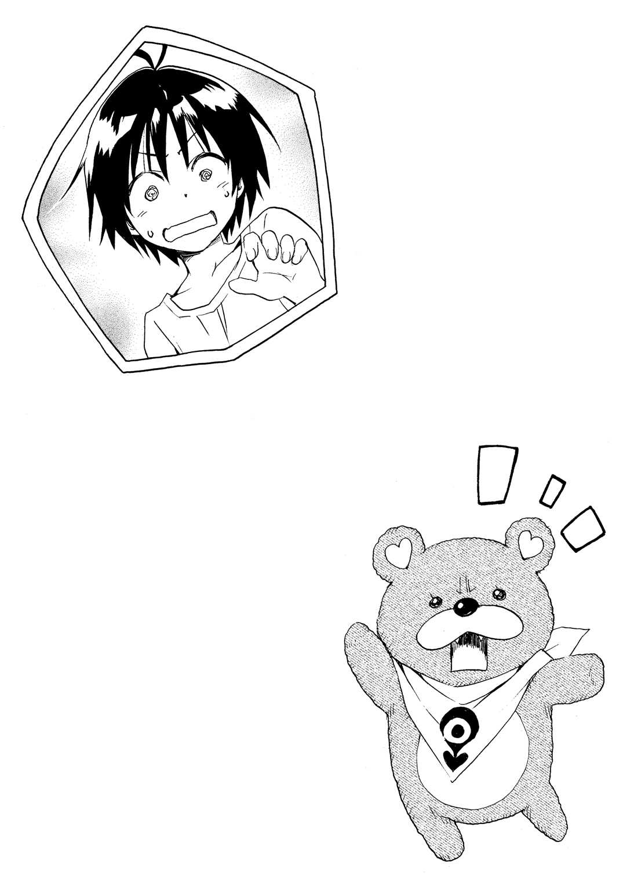

| はてな☆イリュージョン 2 | |
| 松智洋 | |
この本は縦書きでレイアウトされています。
また、ご覧になる機種により、表示の差が認められることがあります。
 ダッシュエックス文庫DIGITAL
ダッシュエックス文庫DIGITAL
はてな☆イリュージョン ２
松 智洋
他人を変えようと思ったら、自分が変わるしかない。世界は、写し鏡の奥にある
プロローグ
僕、不知火真は時ならぬピンチを迎えていた。
「真、判ってるよね。失敗したら、絶対に許さないんだから」
傍らで僕を見上げる黒髪の美しい少女。寄り添う腕に、微かな震えがある。シチュエーションさえ違えば、これは完全なご褒美だ。しかし、今は単なる重荷でしかない。
「......ほんとに、やるの？ 絶対......失敗すると思うけど」
「やるの。やらないと、ばれちゃうでしょ！」
照れと怒りを合わせたような、微かに赤い顔ではてな――僕の幼馴染みにして師匠の娘――は断言した。ぐい、と僕を押し出す。
「一人でやらせるなんて言ってないでしょ。あたしも手伝うんだから」
「でも、はてな、奇術なんてできないだろっ」
「大丈夫よっ！ あたしは大魔法使い星里メイヴの娘にして天才奇術師、星里衛の長女なのよ！ 誰よりもたくさん奇術を見てきたんだから！」
「そ、その理屈だと、毎日漫画ばっかり読んでる人が一番漫画描くのが上手いってことになるんだけどっ！」
「ごちゃごちゃうるさいっ！ 覚悟を決めなさい！ マフくん！」
応えるように、制服のポケットから黄色い布が顔を出す。はてなの持つアーティファクトだ。〈真の名〉＝〈真名〉を知り、道具に認められることで超常の力を発揮する魔法の道具。
はてなの持つアーティファクトは、マフラー状の布だが、自在に形や大きさを変えて万能の働きをする特別製の品だ。普段はハンカチのように畳まれてはてなのポケットに収まっている。
「万一、あたしがマフくんを学校に持ってこられなくなったりしたら、真のこと、絶対に家から追い出しちゃうから。父様のお師匠様を紹介する話もなしだからっ！」
「だ、だからっ、せめて準備をっ！ アーティファクトと違って、奇術にはタネがあるんだよ！」
最後の抵抗を試みる僕に、はてなは目をつり上げた。
「そこを何とかするのよ！ 真、ステッキは持ってるでしょ！」
「......そ、そりゃあ......持ってるけどさ」
「いざとなったら、それを使えばいいじゃない」
「だ、ダメだよ。それって、反則じゃないか」
抗弁する僕を呆れた顔で見て、はてなはマフくんを手の形にすると、くい、と扉を指さす。
「目的を達成することが大切なの。過程は重要だけど、一番大切なのは結果よ」
「判るけど、僕は自分の力で奇術師になりたいんだ。アーティファクトがなくなったら、手品ができないなんて寂しいじゃないか」
議論は平行線だ。実際、はてなだっていつもはこんな無茶を言わない。切迫しているのだ。
「それでもっ、今を乗り越えることが必要なのよ！」
断言するはてなに、僕は思わず言い返してしまう。
「そんなの、はてながマフくんを見られたのが悪いんだろーっ！」
「あーっ、そういうこと言うのっ！ 昔のことを掘り返しても仕方ないじゃないっ！ 何とかしてよっ！ 真は、あたしのパートナーでしょっ！」
長い黒髪の美少女に懇願されて、僕はため息をつくしかない。どうせ、断ることなんかできないのだ。僕は彼女に――心を盗まれているんだから。
教室の中では、ワクワクした顔のクラスメートたちが今か今かと二人を待っていた。
「おっせぇな！ もう昼休み終わっちまうよ」
不満げに鼻を鳴らすのは、中途半端なイケメンである。
「手品の準備があるんじゃないですか？ 奇術師の弟子......いい響きですね。簡単で女の子にモテそうなものを、いくつか教えてもらうといいかもしれません」
そう応じたのはビン底眼鏡の少年だ。隣にいた巨漢が呆れたように口を開く。
「あなたたち、いっつも女のことばっかり考えてるのね。まあ、この元女子校に入学する時点でそういうメンタルなんだろうけど。言っとくけど、そういう思考の段階でモテないから」
クラスに四人しかいない男子のうち、真を除く三人は寄り集まってそんな話をしていた。
周囲にいる女の子たちは、もう少し素直だ。今年から共学になったとはいえ、もともと、聖ティルナ学園はいわゆるお嬢様学校が前身であり、お金にも家柄にも恵まれた中学一年生が揃っているのだ。中でも一際目立つ現代風の美少女、桔梗院心美は格別にご機嫌だった。
「あははっ、真くんの手品、楽しみだよね！」
「そうだね！ あんな大きな布を一瞬で出したり消したりするなんて、不知火くんって凄い」
「大人しくて地味な子だと思ってたけど......ちょっと、格好いいよね」
真の株が女子の中で急上昇中である。真の良さにみんなが気づくのはなんだか鼻が高かった。それに、これを知ったはてな――星里果菜はどう反応するだろうか。まあ、すべては果菜の失敗から始まったのだが。先日、果菜がアーティファクトを使うところをクラスの女子に見られ、心美は真の素性を利用して誤魔化したのだ。ちなみにこのマジックショーを提案したのも心美である。女子の間では、果菜の周りで起こる不思議な出来事が話題になり始めていたため、星里家をサポートする桔梗院家の娘として、この辺で沈静化させておきたかったのだ。
「心美さんは、真くんが奇術師の卵だってご存じだったんですよね」
「ええ。我が桔梗院家は、はてなのお父様である衛さんの公演を一手に扱っていますから。お弟子さんのことは存じ上げていました。まさかこの学校に来られるとは思いませんでしたが」
心美は上品に笑う。事実、星里家にやってきて、住み込みで果菜と同居しながら同じ学校に通うなんて知らなかったのだ。果菜のほぼ唯一の幼馴染みを自認していた心美としては、色々と思うところがあったのだが、今はそれなりに彼を認めている。
「でもまあ......お手並み拝見ね」
くすくす笑う人の悪い心美である。この騒ぎも、心美は面白がっているのだ。
聖ティルナ学園中等部一年Ａ組初のマジックショーが始まろうとしていた。
「いいからっ、行きなさーいっ！」
マフくんに突き飛ばされるようにして、僕は教室に飛び込んだ。
「わわっ、危ないだろっ......わ」
拍手の嵐に迎えられ、僕はクラスメートたちの前に立った。みんなの期待が感じられる。恐る恐る、といった感じにはてなも入ってくる。もちろんマフくんはポケットの中だ。
「え、えっと、じゃあ......まこ......不知火くんっ」
「は、はいっ」
はてなの隣で、僕は背筋を伸ばした。ここまで来たら覚悟を決めないとな。
やけくそになって胸を張り、声を張り上げる。
「レディス・アン・ジェントルメン！ イッツショウタイム！」
衛師匠の口上を真似て、僕は腕を振る。途端に、魔法のように手の中にステッキが現れる。子どもの頃に買ってもらったオモチャのステッキだ。以前はてなを庇って折れたあと、メイヴさんが修理してくれたことで、このステッキ自体もアーティファクトになっている。通称、スマイルステッキ......すみませんね。単純で。僕は、手品で周囲の人たちを笑顔にしたいんだ。
「おおー」
小さな頃から何度も練習した手技に、みんなが声をあげる。長年の修練が実って、どこから出したのか見えなかったはずだ......ここで帰っちゃダメかなあ。
「すごいね、真くんっ」
「はは......じゃあ......次はっ」
僕はステッキを回して宙に放り出す。と、ステッキは中空でぴたりと止まった。細い糸を使った典型的な手品だ。着ている制服は白いから、極細の白い糸を隠してくれる。とはいえ、ヒヤヒヤものだ。本来はあまり近くで見せたい手品じゃない。
「きゃーっ」
黄色い悲鳴があがり、なぜかはてなが不愉快そうな表情になる。アシスタントのはてなにも手伝ってもらおう。
「はてな。ステッキを取って」
「う、うん......えっ？」
はてなは手を伸ばすが、するすると逃げるステッキはなかなか捕まらない。おお、上手いよ、はてな。手を振り回さず直線的に摑みに来てくれるので、タネがばれにくい。
「ちょ、ちょっとっ、取って、って言って逃げるなんて酷くない!?」
黒髪美少女の不満に観客の笑いが零れる。
「えーと、じゃあ......こうかな？」
そう言って、僕は今度はステッキをはてなの背後に回す。これも糸を利用したマジックだ。はてなの黒髪に隠して糸を通してある。はてな自身に気づかれないように、さっき話している間に仕込んだものだ。教えちゃうと意識してすぐにばれそうだったから。
「な、なによっ、なんかイヤらしいよ、このステッキ！」
肩の後ろに回ってしまったステッキを取ろうとはてなは身体を振る。そのたびに糸につられてステッキは逃げるので、なかなか摑めない。僕が手元の糸で操作しているせいもあるけどね。
しかし、迫真の演技だなあ。両手を背中に回そうと身をよじるため、制服越しに慎ましやかなプロポーションが際立つ。普段見られない姿勢に、男子の視線が熱い。なんかむかつくな。そろそろやめちゃおうかな。はてなに引っかけていた糸を放すと、手元にステッキを引き戻す。
結局ステッキを取れなかったはてなは、息を切らせて悔しがっている。
「く、くうううっ。真っ、どうしてこんな意地悪するのよ」
「い、いや、これ手品だから......」
いかん、なんか涙目で怒っている。でもこれって、はてながアーティファクトを見られちゃったから、それが手品だって立証するためにやってることだよね......協力くらいしてくれても。
「盗ろうとして盗れないなんて......すっごく悔しいじゃない」
......今、なんか違う字に変換されている気がしたぞ？ まさか、怪盗としてのプライドを刺激してしまったんだろうか。ちょっとまずいな......
「あたしっ、負けないからっ......えいっ！」
なぜか飛びかかってくる黒髪の少女。普段から怪盗を目指しているだけあって無駄に動きが機敏だ。思わず身をかわすと、ふらりとはてなの身体がバランスを崩す。
「はぅあっ！」
「ちょ、ちょっとはてなっ！ 危ないって！」
はてなを抱きとめようとした瞬間、一瞬にして黄色い布がエアバッグのように広がり、即座に消えた。勢いではじき飛ばされた僕とはてなは、図ったように元の位置に戻っていた。
「すっ、すっげえええええっ！」
クラスに絶叫が響く。今のは、僕の手柄じゃない。はてなの持つアーティファクト、マフくんの力だ。でも、ここでそれを言ってしまったらマジックショーを演出した意味がない。
僕は、内心の悔しさを隠して笑顔で一礼する。そしてこう言い添えた。
「みんなありがとう。いつでもできる訳じゃないけど、タネを仕込めれば色々できるんだ。まあ、はてなのお父さん、僕の先生である星里衛師匠に比べたらまだまだだけどね」
「......真。ごめんなさい」
バツの悪そうな顔をするはてな。彼女だけが、自分の失敗を知っているのだ。星里家ではアーティファクトの存在は公にしてはいけないとされている。大きすぎる力は争いを生むから。
「......師匠の気持ち、ちょっと判ったよ」
苦笑いではてなを慰める。天才奇術師として僕が憧れていた衛師匠は、実際には妻であるメイヴさんが作るアーティファクトの存在を隠すための隠れ蓑としてマジシャンになった素人だった。その事実に落ち込んだりもしたけれど、この状況を体験すると仕方ない気もする。タネはアーティファクトだったとしても、衛師匠の奇術を見て僕が感じた感動に噓はないのだし。
「すごいっ、すごいね。不知火くん」
「手品がこんなに素晴らしいものだなんて。私、もっと見たいです！」
クラスの女子が眼をキラキラさせながら集まってくる。男子二名は若干怒りと妬みを込めた視線を送ってくるが、放っておくことにする。視線を遮るように、桔梗院さんが胸を張った。
「ね、言った通りでしょ。マジックってすごいのよ。だから、はてなの周りで不思議なことが起こるのは、仕方ないことなの。ふふっ。あだ名の通りでしょ？」
「え？ どういうことですの？」
上品に首を傾げたクラスメートのお嬢様に、桔梗院さんは秘密を明かす。
「衛さんや真くんのせいで、はてなの周りではいつも不思議なことが起こるの。もちろん手品なんだけど。周りは「？」ってなるじゃない。それで、小学校でついたあだ名が『はてな』だったの。ほら、それに『果菜』って『はて』『な』って読めるでしょ？」
「あ......ふふっ、なんだかぴったりですね」
クラスメートたちは、納得したように頷き合う。はてなも仕方ないというようにため息をつく。
「そのあだ名、あんまり好きじゃなかったんだけどな」
「あら、私は好きよ。はてなって、どこか天然だもの。名は体を表すって言うでしょ？」
「心美、それ以上言うと、二度とうちの敷居をまたがせないから」
「あら～、そういうこと言っていいのかしら。叔父様と叔母様が、悲しむわよ」
仲良くじゃれ合う幼馴染み二人をよそに、僕は少しの安堵と、結構大きな悔しさを抱えていた。今まで習い覚えてきた手品は、それなりにできるようになった。でも、まだまだだ。はてなのアーティファクトに助けられなかったら、みんなを納得させられなかったかもしれない。
「不知火くんは、将来はマジシャンに？」
「......うん。僕は、そのために東京に来たんだから」
僕の夢は一流の奇術師になること。そしてもう一つは、はてなのパートナーとして、彼女を守ることだ。今も外国で自分の使命を果たしているはずのはてなの母メイヴさんとの約束だった。それに、怪盗になりたいはずなのにドジッ子なはてなを見ていると、とても放っておくことなんてできはしない。僕は女の子たちに質問攻めにされながら、自分の気持ちを確認する。知り合って一カ月ばかりしか経たないクラスメートたちは目を輝かす。
「すごいですわ。中学に入ったばかりなのに、将来のことをしっかりと考えられていて......」
「本当に。私、ファンになってしまいそう」
感動しやすいクラスメートのお嬢様たちに賞賛されると、そんなに悪い気はしない。
が、とても機嫌を損ねたらしい男子が女の子たちを追い散らす。
「......おうおう、鼻の下伸ばしやがって。真っ、やっぱりお前はオレの敵だったんだな！」
そう叫んだのは、坂上藤吉郎。ツンツン頭のハンパなイケメンだ。
「藤吉郎さんの言う通りです。小さな頃から女性にモテるため、奇術の腕を磨いているなんて......ズルイ。まるで成績優秀なのに『勉強してない』と言い張るような所行です！」
ビン底眼鏡の林田くんも続く。いや、別に女の子にモテるためにやってる訳じゃないんだけど。僕はみんなを笑顔にして、悲しい気持ちを盗むために......って、あれ？
「......えっと、はてな。ど、どうかした？」
気がつけば少し離れた位置から、はてながすごい視線で睨んでいる。
「別に？ なんでもないよ、不知火くん」
無表情で平坦な声。さらに名字呼び。これ......怒ってますよね？ 僕、何かした......？
「んー、そっかー。真くん、やっぱ男の子なんだねー。鼻の下伸ばしちゃって。えっち」
桔梗院さんが棒読みで、原因を伝えてくれる。ご、誤解だって。そう言いかけた時。
「あれ？ 不知火くん、手品のタネ、残ってたみたい。返すね」
はてながそう言った瞬間、ポケットから飛び出したマフくんが僕の頭にハチマキのように巻きついた。それも、かなりの力で。これじゃ孫悟空の頭の輪っかだよっ。
派手に痛がる訳にもいかず苦しむ僕に、四人目の男子である巨漢、松尾さんが呟いた。
「あなたも大変ね。まあ、せいぜい頑張んなさい。そろそろ授業始まるわよ」
こうして僕は、今日もアーティファクトの秘密を守りきった......はずだ。
アーティファクトの秘密を知り、こんな日常が始まって、まだ一週間ほど。
それでも僕は、この暮らしに慣れ始めていた。だけどそれは、星里家にまつわるたくさんの物語の、ほんの一端に触れたにすぎなかったのだ。
 第一幕
第一幕
心配☆夢未の不登校を解決せよ
東京に行ったら夢と希望が輝き、そこら中の路地にチャンスが転がっている。そんな風に考えていた時期が僕にもありました。
僕、不知火真が夢を叶えるために憧れの天才奇術師、星里衛師匠に弟子入りして、ずいぶんと時間が経ったような気がするけど、実際は一カ月ちょっとくらいにすぎない。なのにその間にあった出来事はそれまでの十二年の人生を二、三回繰り返すより濃い内容だったように思う。たとえばずっと会っていなかった幼馴染みが、ものすごい美少女に成長していたこと。
その幼馴染みが実は怪盗（自称）だったこと。彼女が狙うのはアーティファクトと呼ばれる魔法の道具のみで、さらにそのアーティファクトを作ったのが幼馴染みのお母さんだということ。便利な反面、使い方によっては悪用されてしまうアーティファクトを回収するために、幼馴染みたちは自らを危険に晒しているということ。
ついでに実は長年愛用してきた僕のステッキもまた、そのアーティファクトだったこと。
この一カ月で僕が体験した出来事をざっと挙げてみても、にわかには信じられないことばかりだ。だけど、今のところ僕が一番衝撃を受けているのはもっと別のことだった。
「きゅうじゅういち......きゅうじゅうに......きゅうじゅうさん......」
僕は、現実から目をそらすように筋トレに没頭していた。奇術っていうのはこれで意外と体力がいるのだ。たとえば脱出マジックをするにも身体の柔らかさはもちろん、素早く動いたり片手で身体のバランスを取ったりしなければいけない。それに僕は筋トレしたからってすぐに逞しくはなったりしないと判っていても、少しくらいは逞しくなりたい理由もあった。
幼馴染みから長年に渡って女の子に間違えられていたという現実は、中学一年生の男子である僕にはかなりのショックだった。幼い日、面白がって女装させた母が恨めしい。ただ、普通は会った途端に男女の区別くらいはつくはずで......つまり、まだ全然、男らしくなれていないということだ。間違えた当の幼馴染みは、初めて会った頃は性別不明の子どもだったのに、今は目を見張るほどの美少女に成長していた訳で、僕としては負けてはいられない気分だった。
「きゅうじゅうきゅう......ひゃく！」
腕立てふせを片手ずつ百回の計二百回を終えて、僕はその場にごろりと転がった。
すっかり息が上がっていて腕もぱんぱんだ。本当はここまでやるつもりはなかったんだけど、止めどころが見つからなくて......だって、ギャラリーの目があったから。
「お疲れ様です。真様」
笑顔と共にタオルが差し出された。メイド服を身につけた知的なお姉さんだ。そう、この星里家には、メイドさんがいらっしゃるのです。
「ありがとうございます、エマさん」
受け取ったタオルはふかふかで、いい匂いがした。星里家のメイド、桜井エマさんだ。この眼鏡の似合う美少女は、僕同様このお屋敷に住み込みで働いている。年齢は僕たちの二つ上でしかないのに、家事万能で大人の風格を漂わせる彼女は笑顔を崩さず微かに首を傾げた。
「少年が汗を流している姿は格別ですね。お嬢様」
「......別に。暑苦しいだけじゃない」
エマさんが振り返った先には、僕の幼馴染みこと、星里果菜――通称、はてな、がいた。
「ああ、この良さが判らないとはお嬢様もまだまだですね。昔から、男子三日洗わざれば刮目して嗅ぐべし、と言われますのに」
「......それ、何かの漫画の台詞？ エマさんの持ってる薄い本とか」
「なぜ果菜様が私の本棚についてご存じなのかはひとまず置いておくとして、今のは私の創作でございます」
そう言うと、エマさんは優雅に一礼して僕に向き直る。
「しかし言わせていただければ、あまり筋肉質な身体になってもらっては困ります」
「え？ 困るんですか？」
「ええ、大問題です。今後、真様が女装して敵の懐に忍び込むというシチュエーションがあった場合、あまりに筋肉質ですと、すぐにバレてしまうではないですか」
――ここまでのやりとりで判ったと思いますが、エマさんはちょっと変わった人です。
「やりませんよ。女装なんて」
「そ、そんな！ では、真様のために私が夜な夜な作っているお洋服の数々はいったいどうなるのですか！ 果菜様とお揃いの衣装もあるんですよ？」
そう言って、エマさんはヨロヨロと後ずさる。全校生徒が憧れる美人で、生徒会役員も務めている忙しい人なのに、いったいどこにそんな時間が......。いや、それ以前に何で僕の女装用の衣装を作ってるんだろう。なんだか恥ずかしくなって、僕は起き上がってタオルでごしごし汗を拭く。ちらりと横目で庭の大きな木の傍に用意されたカフェテーブルのほうを覗き見た。
「なに見てるのよ、真」
興味なさそうな表情を作って優雅に紅茶をたしなんでいた黒髪の美少女は、不満げな顔をする。
「いや、なんでわざわざそんなとこでお茶してるのかなと思って」
「べ、別にいいでしょ。今日はここでお茶したい気分だったのよ」
と、そっぽを向くはてなだが、わざわざ僕がトレーニングしてる横にテーブルまで持ち出してお茶しなくてもいいんじゃないかな。まあ、用意したのはエマさんたちだけどね。
僕は胸の中でため息をつきながら、風に揺れるはてなの黒髪に目を奪われていた。
その髪の色は僕が師匠と仰ぐあの人とよく似ていた。
......ああ、またあのことを思い出してしまった。
はてなのお父さん、星里衛師匠は世界的な奇術師で僕が長年憧れ続けた人だ。衛師匠のようにみんなを喜ばせるために僕は奇術師を目指した僕は、弟子になって学ぶために、両親を説得して上京したのだ。ところが衛師匠の奇術の数々はすべてアーティファクトの力で、本当の意味でタネも仕掛けもなかったのだ。つまり衛師匠に奇術を習うためこの星里家の居候になった僕は、当初の目的をすっかり失ってしまったのだ。
その件については、今のところ僕はどうしていいか判らない状態のままだ。
衛師匠本人はまた仕事で海外へと飛んでいってしまったし――僕は僕で両親に大見得切って田舎を飛び出してきた手前、あっさり帰るわけにもいかないという感じだ。それにもう一つ。
――あたしには、パートナーがいるんだから。
屋敷から盗まれた『紋章』を、力を合わせて取り返したあと、はてなに言われた言葉だ。頰に触れた甘い感触は忘れられない。
「真兄様、兄様も一緒にお茶する？」
ボーッとしていた僕の袖を小さな手がくいくいと引いた。いつの間にか椅子を降りて傍に来ていたのは、はてなの妹、夢未ちゃんだ。母親似で金髪の西洋人形みたいに綺麗な女の子だ。
「夢未ちゃん。うん、そうだね。じゃあご一緒させてもらおうかな」
僕が答えると夢未ちゃんの顔がぱーっと華やいだような気がした。
夢未ちゃんはあまり感情を表に出さないので、僕のカンでしかないのだけど。
「どうぞ、真様」
僕が席に着くと、まるでタイミングを計っていたかのようにアイスティーのグラスが目の前に現れた。はてなや夢未ちゃんはホットティーなのに、僕には冷たいものという気配りがありがたい。さすがは完璧な星里家の執事さん、穏やかな笑顔を浮かべた銀髪の老紳士だ。
「ジーヴスさん、すいません。お手伝いしなくて」
「お気になさらず」
ジーヴスさんとエマさん、そして僕の三人がこの星里家で働いている。僕は今のところ単なる執事見習いだ。春の風を感じながら、談笑してお茶を楽しむ。一服して話題が一段落すると、夢未ちゃんが待ちかねたような仕草で催促した。
「真兄様、また手品おしえて」
ふわふわな金髪美少女の無表情な上目遣いに逆らうのは無理だ。僕は快諾する。
「うん、いいよ。そうだなー、コインのマジックはこの間やったし次はカードにしようか。いや、カードは僕もまだまだ未熟だし、もう少し判りやすいのがいいかな......」
「真兄様がやってくれた、キャンディ出す手品がやりたい」
「あー、あれか。アレはタネあかしは簡単だけど実際にやるのは難しくて......」
幼い日から手品の本にかじりついて身につけた知識を披露すると、夢未ちゃんは目をキラキラさせて聞いてくれる。いやあ、こういう観客のために頑張ってきたんだよね。
そんな僕たちの隣で、はてなはちらちらとこちらを見ながらスマホをいじっている。
「ふうん......富野沢コレクションの展示ね......調べておかないと」
ネットを検索しながら、はてなが見ているのはアーティファクトの関係しそうな情報だ。彼女たちは怪盗として世界に散ったアーティファクトを集めているのだが、その大半は金持ちに秘匿されているか、その真の性能を知られないままどこかに眠っている。中でも多いのは、美術品として美術館や古美術商によって売買されているパターンだそうだ。なので、はてなはいつも美術品の情報に注目していた。まあ今のところ、メイヴさんが帰ってくるまで怪盗にならないように厳しく言われているはてなが勝手な行動を取るとは思わないけどね。
「兄様、これでいい？」
「あ、ごめんね。うん、キャンディを隠す手は大丈夫。本当は誰かに協力してもらってもいいんだよ。問題は、キャンディを持っている手を意識させず、上手く目的の場所に運ぶこと」
僕は、右手をひらひらさせている間に、左手で夢未ちゃんのポケットにキャンディを入れてみせる。夢未ちゃんはこくりと頷くと、再現しようと頑張るが......そう簡単には上手くいかない。ポケットから一瞬でもキャンディを出し入れしてみて、僕は何度もコツを教えた。
「じー......っ」
夢未ちゃんと手品の話で盛り上がっていると、不穏な視線を感じる。それも、すぐ近くから。
「はてな、なに？」
「......ずいぶん楽しそうよねっ。あたしは真面目に働いているのに！」
「え、えっと。ま、まあ夢未ちゃんの頼みだし」
「それはいいんだけどっ、なんだか納得いかない」
いいと言いつつはてなは、何か含んだように視線をそらす。ああいう顔をする時は、何か不満があるんだって、僕はよく知っている。でも困ったことに不機嫌の理由は見当がつかない。
「真様。乙女心が判っていませんね。そこは主人公として大事な長所だとは思いますが、この程度は気づいて差し上げるべきです。すなわち、お嬢様もかまってほしいのですよ」
にこりともしないエマさんが、当然だ、というように眼鏡を輝かせる。
「はぅあっ！ エ、エマさんっ、何言ってるんですかっ！」
いつもの口癖が出たということは、図星だったんだろうか。見違えるほどキレイになったはてなだけど、この口癖だけはちっとも変わっていない。はてなは動揺を隠すように立ち上がる。
「ち、ちちち、ちがうもん！ あたしは......そう！ 真をライバルだと思ってるから！」
「ライバル？ 僕が？ なんの？」
「えーと......その......怪盗の」
なぜ自信なさそうなんだろう......あと、怪盗のライバルって意味も判りません。
「とにかく！ あたしも真みたいに特訓する！」
はてなは立ち上がると、すぅっと息を吸い込んだ。
「おいで、マフくん！」
その言葉に応えて、はてなのポケットから黄色いハンカチがするりと飛び出してきた。ハンカチのサイズからどんどん大きく広がったそいつは、自分からするりとはてなの首にマフラーのように巻きついた。
それははてなのお母さん、メイヴさんが作ったアーティファクトの一つだった。
はてなの意思に従って、自由自在に動き、車くらいなら軽々と持ち上げてしまうほどの力と、目にも留まらない速さを併せ持つ魔法の布だ。弱点といえば、使うたび、はてなの体温が上がってしまうこと。無理をすれば病気で高熱を出した時のように倒れてしまう。アーティファクトはとても便利だが、使うには代償が必要なのだ。
「お嬢様いけません。いくら敷地内とはいえ、こんな昼間から外でアーティファクトを使用しては。どこにひと目があるか判りませんよ」
「心配しすぎよ、エマさん。それにこのお屋敷にそうそう人なんか来ないもん」
はてなは平気だというように手を振る。桔梗院家所有のビルに囲まれた都会の死角にあるこのお屋敷は、近所の人以外は存在も知らない。それにこの辺の人なら不思議なことが起こる幽霊屋敷という噂も知っているので、わざわざ近づいてはこないのだ。
「まあ、そうですけど、そもそも特訓ってなにをなさるおつもりですか？」
「えっと、それは......」
エマさんに言われて、はてなはうーんと考えこむ。
「そうだ！ マフくん、腕立てふせ！」
マフラーの先が腕のようになって、さっき僕がしていたみたいに腕立てふせを始めた。
「あのさ、はてな。それって意味あるのかな」
「あるよ！ こうやって特訓してれば、たくさんマフくん使っても平気になるでしょ！」
うーん。どうなんだろうな。確かに、先日盗まれた『紋章』を取り返すために快盗ハテナになった時は、マフくんの使いすぎで倒れちゃったんだけど......アーティファクトが筋トレする意味あるのかなあ。むしろはてなが筋トレしたほうが体力つくような。
「ふっふっふ......見てなさい真、すぐに追い抜かしてやるんだから」
「う、うん......頑張って」
あまりに自信満々な態度に何も言えなくなり、僕は謎の上下運動をするはてなを見守る。
「お嬢様」
突然、ジーヴスさんが鋭い声ではてなを呼んだ。
「え？ な、なに？」
「屋敷に人が近づいてきます。お二人ですね。なるほど。お迎えに上がります」
いったいどうしてそんなことが判ったのか。その理由を聞く前にジーヴスさんはお客様を迎えに行ってしまった。はてなは慌ててマフくんをポケットに戻す。老執事に伴われて敷地内に入ってきたのは、スーツを着た女の人とランドセルを背負った女の子だった。
「あ......夢未ちゃんっ」
僕の向かいに座っていた夢未ちゃんの姿を見つけた女の子が嬉しそうに名前を呼ぶ。だけど当の夢未ちゃんは素早く立ち上がると、僕の背中に隠れた。
「夢未ちゃんの担任をしております長瀬です。今週も、お話を伺いに参りました」
長瀬、と名乗った女の人は深々と頭を下げた。
「夢未ちゃんのご両親はご在宅でしょうか？」
「たびたびご足労おかけして申し訳ございません、長瀬先生。ただいま、旦那様と奥様はご不在ですが、私どもが代わりにお話を承るように申しつかっております」
「そうですか。いつもありがとうございます。桜井さん。では......今日は、どうしても夢未ちゃんと話したいという子がいて連れて来ました。ね、眞美ちゃん」
「は、はいっ。あたし、夢未ちゃんと同じ班の加藤眞美ですっ。どうしても、夢未ちゃんとお話ししたくてっ！」
「ご丁寧にありがとうございます。お茶をご用意しますので、夢未様、眞美様、こちらへ......」
せっかく友達が来てくれたというのに、夢未ちゃんの表情は優れない。エマさんが二人だけの席を用意しようと動き出した途端、夢未ちゃんはいきなり屋敷の中に走っていってしまう。
「夢未ちゃん！」
ランドセルの女の子が呼び止めた。だけど夢未ちゃんは振り返ることもしなかった。はてなが慌てた様子でその背中を追う。
「すみませんっ、すぐに夢未を呼んできます！」
「あ、いいんですっ」
長瀬先生は、鋭くはてなを引き留めた。はてなが立ち止まると表情を柔らかくする。
「こういう場合、無理矢理連れ出すのはよくありませんから。眞美ちゃんが来ることを事前に伝えていませんでしたし、今日はこれで帰ります。夢未ちゃんの顔も見られましたから」
そう言うと、長瀬先生はまた頭を下げた。どうやら、本当にいい先生のようだ。いったい夢未ちゃんは何があって、不登校になってしまったんだろう。
「あの、これっ、夢未ちゃんに渡してくださいっ」
「これは......？」
「休んでいる間のプリントと、あとお手紙ですっ」
女の子がはてなにプリントの入った封筒を差し出すと、はてなはお礼を言って受け取った。先生はジーヴスさんから夢未ちゃんが終わらせた課題を受け取り、代わりに一週間分の課題を渡す。そして名残惜しそうに振り返りながら、二人は去っていった。
この出来事で、僕はこの屋敷に来て最大の衝撃が何だったのかを、改めて思い出す。それは、はてなが僕のことを女の子だと思っていたことでも、彼女が快盗を目指していたことでも、さらに言えば魔法の道具アーティファクトの存在でも、衛師匠が奇術ができないことでもない。
それは小学四年生の夢未ちゃんが、新学期早々不登校になっているということだ。この屋敷に来た僕を温かく迎えてくれた彼女がどうして不登校になってしまっているのか。冒険と魔法に囲まれたこの屋敷で、その一点だけがやけに生々しく僕の胸に影を落としていたのだ。
僕の星里家での立場は、衛師匠の弟子兼執事見習いだ。居候早々壊してしまったアーティファクトを弁償するため、という建前だけど、はてなから追い出されないための言い訳の側面が大きい。夕食を迎えて、僕は自分の担当である配膳を終えると、はてなたちと並んで座る。
今日は、僕が部屋まで迎えに行ったこともあり、夢未ちゃんもきちんとテーブルについている。
食事が始まってすぐ、はてなが口火を切った。
「夢未、今日の昼間、どうして逃げ出したの？」
「......」
小さな口で、少しずつ夕飯を食べながら、夢未ちゃんはうつむいて何も答えない。
「せっかく先生やお友達が訪ねてきてくれたのに......あれ、よくないと思う」
「............」
「夢未？ どうして学校に行かないの？ 先生やあの子に何かされたりしたの？」
はてなが心配そうに夢未ちゃんを見る。夢未ちゃんは違うというように首を横に振った。でも、やはり何も言ってはくれない。僕とジーヴスさんも、困ったように視線を交わした。
「だったら、せめて話すくらいしてもいいと思うけど......」
はてなは食い下がるが、また夢未ちゃんがかぶりを振る。
「ねえ、夢未、いつまでも学校に行かないってわけにはいかないでしょ？ 相談にのるから、あたしに話してくれない？」
ふるふると首が振られた。同じようなやりとりが繰り返され、やっと夢未ちゃんが答える。
「......姉様には関係ない」
「関係ないわけないでしょ！」
気色ばむはてなの視線に、夢未ちゃんはうつむいて答えない。ぎゅっと唇を引き結んだ夢未ちゃんは、絶対言わないと決意していそうだ。
「夢未、ちゃんとした理由があるなら、父様に相談して私立に転校することだって......」
「......勉強はしてる。全部満点取れる」
「そういう問題じゃないよ！」
食事を続けるのも忘れて、はてなは夢未ちゃんに詰め寄る。僕は、慌てて間に入った。
「あの、はてな、とりあえず今日はそのくらいで......ほら、夢未ちゃんもまずはお友達からのお手紙を読んでさ、ね？」
「真は黙ってて！」
おおう、僕も怒られた。どうしたらいいか判らず、後ろで控えているジーヴスさんとエマさんを見る。珍しいことに、二人も困った顔をするばかりだった。
「でも、そんなに怒ってたら、夢未ちゃんだって言いたいことも言えないんじゃないかな」
「そう言ってるうちに、もう一カ月以上学校に行ってないんだよ！ 父様が帰ってきて先生に会いに行った時だって、先生も理由が判らないって言ってたし。せっかく来てくれた友達を何も話さずに追い返しちゃうなんて、やっぱりダメだと思う！」
昼間の出来事は、優しいはてなにとっては耐え難いことだったみたいだ。はてなも夢未ちゃんの不登校をとても心配していたから、爆発してしまう気持ちは僕にも判った。
意地になったように、はてなは夢未ちゃんを問い詰める。
「とにかく、どうして学校に行かないのか、その理由を教えてよ」
「......やだ」
「な、なんで......っ」
「姉様、わたしのことは放っておいてほしい」
珍しく強い口調で言った夢未ちゃんは、そのままリビングを飛び出していく。
「待ちなさい！ 夢未！」
はてなが止めるのも聞かず階段を駆け上がると、部屋に駆け込んだ。心配して追いかけた僕たちの前で、無情にも鍵がかけられる。
「夢未ちゃん......」
固く閉ざされた扉は、決して理由を口にしない夢未ちゃん自身を表しているようだった。
それがもう、三日も前のことだ。以来、夢未ちゃんは部屋から出てこなくなっている。
僕たちが食事を持っていくと扉は開けてくれるけど、ほとんど口も聞いてくれない状態だ。不登校を追及しないと誓いでもしない限り出てきてくれそうもない。でも、僕やエマさん以上にダメージを受けているのは、夢未ちゃんを責めてしまった当人だった。
「うううっ......夢未に嫌われちゃったかなぁ......」
落ち込むはてなを見かねて、学校の昼休みに桔梗院さんが僕とはてなを中庭に連れ出した。中等部から大学まで揃えた敷地にある中庭は広く、場所を選べば誰にも見られなくてすむ。僕とはてなが同じ家に住んでいるのは内緒なので、この話は人前ではできないのだ。
事情を聞いて、桔梗院さんはあっさりと肩をすくめた。
「そんなにショックなら謝っちゃえばいいのに」
「それは......できないよ。あたし間違ったこと言ってないもん！ 母様がいないんだから、あたしが言わなきゃ......って。それに......謝ろうにも......全然、あれからお話もしてないんだもん......」
次第に弱くなる声音に、はてなの不安が滲む。桔梗院さんはどん、と薄い胸を叩いた。
「いいわ。他ならぬはてなとお人形ちゃんのためだもの。私も一肌脱ぐわ」
「......ほんと？」
「当たり前でしょ、私たち親友じゃない」
と言いながら桔梗院さんははてなにすかさず何かの紙を差し出す。
「じゃあこれ、契約書ね。こことここにサインして。印鑑は持ってないだろうから拇印でかまわない。成功報酬でかまわないし、アーティファクトなら何でも文句は言わないわ」
「はぅあっ!? 心美っ、あなたって......」
「あはは、冗談よ冗談。落ち込むはてなにそこまでするほど、私も非道じゃないわよー」
「うう......真、どう思う？ やっぱり、心美に相談したのって間違いだったんじゃないかな」
僕は苦笑した。桔梗院さんが意外といい人なのは確かなんだけどね。だとしたら契約書が出てくるあたり一筋縄ではいかない。彼女のお家は桔梗院グループって財閥で、この町を中心に日本中でありとあらゆる商売をしているそうだ。スーパーマーケットからはじまって人材派遣に古美術品の取り引き、芸能事務所なんてものまで経営しているらしい。衛師匠の興行も桔梗院家が取り仕切っている。そしてもう一つ、桔梗院家には裏の顔があった。
「この前はうちの秘書の件で迷惑かけちゃったからね。埋め合わせしなくちゃって思ってたのよ。夢未ちゃんの身辺調査、引き受けるわ。それなりに資料も揃ってるはずよ」
桔梗院さんの言う「秘書の件」というのは、先日、僕たちが遭遇した事件のことだ。桔梗院家は星里家からアーティファクトを預かることで財を成した。そのかわり、衛師匠とメイヴさんをグループ全体で全面的にバックアップしているのだ。ところが、桔梗院家の秘書、いや〝元〟秘書のマライアさんは、星里家のアーティファクトを狙って潜り込んでいたのだ。
しかも彼女はメイヴさんの妹で、はてなや夢未ちゃんの叔母にあたるという衝撃の事実まで飛び出した。そのマライアさんは一族の命を受けて『紋章』というアーティファクトを作り出すために欠かせないアイテムを奪いにやってきたのだ。僕とはてなはエマさんや桔梗院家の助けも得て、なんとか『紋章』を奪い返した。その事件もあってはてなたちの母であるメイヴさんは隠れ里から帰ってこられない状況が続いていた。
桔梗院さんは、ぴん、と人差し指を立ててみせる。
「じゃあ、まずは今日の放課後、夢未ちゃんの学校へ行ってみましょ」
「夢未の学校へ？ どうして？」
「それはもちろん、夢未ちゃんが学校に行かなくなった理由を調べるためよ。よく言うでしょ、事件は現場で起きているって」
現場かどうかはともかくとして、学校に行きたくない理由が学校にあるというのは道理だと思う。でもなぁ......中学生の僕たちが簡単に入り込めるんだろうか。
「だけど、あたしたちが行ったら変じゃない？」
はてなも同じ疑問を抱いたようだが桔梗院さんは動じない。
「大丈夫よ。保護者が来て追い返す教師なんていないって。っていうか、私たち卒業生だもん。問題ないでしょ」
そんな、下手をしたらモンスターペアレントって言われそうなことを。あと、桔梗院さんは保護者じゃないと思うな。
「あ......そっか。夢未が行ってるの、三月まであたしたちが通ってた公立小学校だもんね」
忘れていた、というようにはてなは胸を撫で下ろす。なるほど、二人は同じ公立小学校に通っていたのか。彼女たちはお嬢様だから、なんとなく私立かと思ってた。僕の疑問をよそに二人は盛り上がり、授業が終わったらすぐに夢未ちゃんの学校に向かうことになったのだった。
二人の母校である小学校は、区立喜ヶ原小学校という。端的に言って星里のお屋敷がある喜ヶ原町に建つ小学校だからだ。道々聞いたところでは、桔梗院家も星里家も、小学校までは一般的な子どもと同じ生活を学ばせたい、という方針だったらしい。
「まー、私は平気だったけど、はてなは結構辛そうだったかな。だいたい、男子と話せないし」
「う、うるさいな。そういうこと言わないでよ。男子ってからかうからイヤなんだもん」
顔を赤くするはてなは桔梗院さんから逃げるように僕のほうに寄る。しかし、僕の顔が近くにあることに気づくと、ぱっ、と飛び退いた。桔梗院さんがにやりと笑った。
「あはは、はてな、男子苦手だったはずなのにねぇ」
顔を赤くしたはてなを見ていると、なぜか僕も顔が赤くなってしまう。
「まあいいんだけど、二人共もう少し普通にしないと、目立ってるよ」
そう言われて顔を上げると、既にそこは小学校の敷地内だった。勝手知ったる母校を、桔梗院さんは堂々と歩いていく。聖ティルナ学園の制服を着ていることもあり、相当目立っていた。
「やっぱり、やめといたほうがよかったかな......」
「あたしだってそう思うけど、夢未は絶対言ってくれそうにないし......」
勢いでここまで来てしまったものの、集中する視線にはてなが困ったように言う。
「もうっ、二人共ここまで来ておいてなに言ってるのよ！」
「いや、だってさ......」
「ほら、もっと堂々としてなさいよ。夢未ちゃんのためでしょう！」
と桔梗院さんだけは、いつも通りに偉そう......しっかりしてる。
「そ、そうだよね、あたし、頑張る。まずは、担任の先生を捜したほうがいいのかな」
「そんなことしてたらみんな下校しちゃうわよ。まずは教室に行きましょ。あ、大丈夫、桔梗院家のほうから学校には根回しさせてるから。校門にいた先生も笑ってたでしょ？」
確かに、桔梗院さんとはてなを見て先生たちはニコニコしていた。まあ、三月に卒業した子が遊びに来てると思えば、そんなに変なことじゃないのかもしれない。
「ここね。四年の教室。失礼しまーす！」
桔梗院さんが勢いよく教室の扉を開けると、小学生たちが一斉にこちらを振り返った。
そりゃあ何事かと思うだろう。視線を跳ね返すように入り口で仁王立ちになっている桔梗院さんの後ろから、僕は教室の中を覗き込む。そして、すぐに見たことのある顔に気づいた。
先日、先生と一緒にプリントを届けに来てくれた女の子だ。あの子に話を聞けばいいかな。そう思って声をかけようとした時だった。
「じゃまだよ。通してくれよ」
「きゃああああああっ！」
男の子の声と、なぜかはてなの悲鳴が重なった。
「どっ、どうしたの、はてなっ」
慌てて後ろを振り返ると、制服のスカートを押さえて真っ赤になったはてながいる。その横をこのクラスの児童らしい男の子が通り過ぎていく。
「ちょっ、ちょっと！」
桔梗院さんがその男の子の腕を摑んで引き留めた。
「なんだよ」
「ちょっとアンタ！ 私のはてなになんてことするのよっ!?」
「へっ、はてなって変な名前」
「何ですって、可愛いじゃない！ そんなことも判らないの!? これだから子どもはしょうもないわよねっ」
「おばさんはセンスないもんなっ」
この状況で言い返す小学生に、僕はちょっと感心してしまったりする。度胸あるなぁ、この子。いや、それよりはてなだ。赤い顔でぷるぷると震えている。
「ス、ス、ス、スカートっ、め、めくったわねっ！」
「そうだよ。そんなところでボーッとしてるのが悪いんだろ！ とりゃ！」
バサッという音と共に、桔梗院さんのスカートは翻った。それはもう派手に。見てない！ 僕は見てないからねっ。はてなもこれをされたんだな。やんちゃな小学生が繰り広げる遊び。その名も『スカートめくり』だ。
「おおっ、おばさんのクセに可愛いパンツじゃん！」
「このクソガキ――ッ！」
男の子は桔梗院さんの手を逃れて教室に走り込むと、余裕の笑みを浮かべている。
「はてな......判ったわ。イジメねっ！ 夢未ちゃんはやはり低俗なイジメにあっていたのよ、このクラスでっ！」
ビシリッ、と桔梗院さんは笑う男の子に指を突きつけた。
「ん......夢未......って」
不思議そうな顔になる男の子が引っかかったが、それよりはてなのほうが気にかかる。
「ううう......だよね、あたしも男子にたくさんイタズラされて......苦手になっちゃったんだもの、きっと夢未だって......許せない！」
キッと顔を上げるはてなは、怒りの表情で教室の中を見る。
「ちょっとはてな！ それ、かなり思い込みだから！ 落ち着いて！ 桔梗院さんも......」
「夢未ちゃんをいじめたイジメっ子ども！ 五つ数えるまでに出てきなさい！ でないとこの桔梗院心美が社会的に抹殺するわよ！」
はてなより数段ヒートアップしてる桔梗院さんに、僕は頭を抱えた。小さい頃からの幼馴染みでずっと仲が良いとは聞いていたけど、そりゃ気が合うわけだ。二人共根っこの部分が似てるんだもの。正義感が強くて興奮すると後先考えずに行動するとことか。
いやいや、感心してる場合じゃなかった。いくらスカートめくりされたからって、こんな風にやってくるなりいきなり怒ったりしたら聞きたいことも聞けなくなってしまう。
「ひとーつ、ふたーつ、みーっつ......さあ、どうしたの!? 時間がないわよ！」
すると、さっきのやんちゃくんを含め、いかにも生意気そうな男子が数人、僕たちの前に進み出てくる。意外にも、神妙な顔だった。
「夢未って言ってたけど、あんた星里の姉ちゃんか？」
「そ、そうよ！ あ、あたしたち......あの」
とか言いながら、はてなの腰が引けてるのは小学校時代のトラウマかもしれない。
「はてな、僕が話すよ。僕のほうが話しやすいだろうし」
「なんだよ、おまえ」
「えーと、夢未ちゃんと夢未ちゃんのお姉ちゃんの友達だよ。今日は、聞きたいことがあって」
「そうじゃなくて、おまえオンナ？ オトコ？」
「なっ!?」
「僕とか言ってるしズボン履いてるからオトコじゃね」
「でもオンナみたいな顔してるよこいつ」
なんて生意気なお子様たちだ！ 人がわりと気にしてるっていうのに！
「こらっ、失礼なこと言わないのっ。こんな可愛い顔してても真はわりと強いんだからね」
はてな......それ、あんまりフォローになってないよ。
「そうよそうよ、あんたたちみたいなお子様、真くんが奇術で時空の彼方に飛ばしちゃうわよ！ 地獄の業火で焼かれて未来永劫苦しむことになるのよ！ 真くんはそうやって悪いヤツを秘密裏に抹殺してきた恐ろしい男なのよ！」
桔梗院さんも奇術をラスボスの必殺技みたいに......ていうか僕そんなことしないよ！
「なんだよ、うっさいなーおばさんたち」
あろうことか悪ガキどもは、はてなと桔梗院さんのスカートを盛大にまくり上げた。
「そら！ おばさんのぱんつー！」
「「きゃああああああああああっ！」」
はてなが薄いピンクで、桔梗院さんは意外にも可愛らしい縞々模様だった。
超音波みたいな二人の悲鳴と一緒に、それは僕の脳みそにしっかり焼きつけられた。
「に、二度もっ......こ、このくそがきどもーっ！」
「はうぁあああっ！」
笑いながら教室を逃げ回る男子たちを、鬼の形相で追いかける桔梗院さん。はてなはというと、その場にうずくまって、俺を涙目で見上げている。
「真......見た......？」
「えーと......」
その質問に僕はどう答えるべきか迷った。そして、
「う、うん」
正直に答えることにした。
「う、うう......いやあああああああ！」
「ちょ、待ってよ、はてなーっ！」
泣きながら走り出すはてなである。このままじゃ、全然来た意味がないよ。僕がため息混じりにはてなを追いかけようとした、その時だった。
「あ、あの、夢未ちゃんのお兄さんですよね」
「ま、まあ、似たようなものかな。プリントを届けてくれた子だよね」
声をかけてくれたのは、真面目そうな女の子だった。
「はい、先日お邪魔しました、加藤眞美です。手紙、渡していただけましたか？」
「うん、渡したよ。あの時はありがとう。夢未ちゃんと話せなくて、ごめんね」
「いいえ、急に伺ったのはこちらですから」
礼儀正しくてしっかりした子だ。まだ小学生なのにすごいな。
「夢未ちゃん、どうしてますか？」
「うん、元気だよ。昨日は、夜に一緒にゲームもしたんだ」
僕が部屋に押しかけたんだけどね。はてなが行くとドアも開けてくれない状況なんだけど。
「そうですか......よかった」
この子は夢未ちゃんのことをとても心配してくれているようだ。良い友達がいるじゃないか。それが判っただけでも、教室を見に来て良かったと思う。だけど......
「そうだ、教えてもらってもいいかな」
「はい、なんですか？」
「夢未ちゃんが学校に行かなくなった理由って判る？ やっぱり男子にからかわれたとか」
男の子たちのスカートめくりは堂に入っていた。クラスの女の子はずいぶん被害にあっていそうだ。ちなみにスカートめくり男子は現在桔梗院さんに捕まってぎっちり叱られている。
「それは......違うと思います。夢未ちゃん、男子に意地悪されてもぜんぜん平気な感じでした」
言われてみると確かに、夢未ちゃんは動じなさそうだ。というか、無視しちゃいそう。
「あ、でも、この間、粘土で作った人形を男子が壊した時はちょっと怒ってました」
「そんなことがあったんだ。それで、ケンカになったとか？」
「いいえ。夢未ちゃんすぐに作り直しちゃいましたから。作り直したら前より良くなって校長先生に表彰状ももらったんです。みんなのと一緒に教室の後ろに置いてたんですけど、今は校長室の前に飾られてますよ」
そういえば、教室の後ろに粘土の人形がいくつか並んでる。そこから校長室の前に飾られちゃうほどの出来だったのか。そうなると、人形を壊されたのが原因とは思えないな。
「ありがとう、教えてくれて。よかったら、また夢未ちゃんに会いに来てくれると嬉しいな」
「はいっ、こちらこそ」
加藤眞美ちゃんと別れて小学校を出ると、校門のところに涙目のはてながいた。
「はてな、大丈夫？」
「......真、ねぇ、その............もしかして、見た？」
校門の傍にしゃがみ込む黒髪の美少女に、噓はつけない。
「......ちょっとだけ」
「う、ううう......ま、真の、真のバカーっ！」
再び駆けだしてしまったはてなを、僕は必死で追いかける。
結局、教室での聞き込みは大した成果をあげることはなかったのである。
翌日、教室での空気は最悪だった。
「あのさ、はてな......」
僕が声をかけようとすると、はてなと桔梗院さんが同時にこっちを振り返る。
「えっち」
「すけべ」
「......ごめんなさい、なんでもないです」
どうやら昨日の件をまだ根に持ってるみたいだ。二人は、今日も小学校に行くつもりらしい。夢未ちゃんのことを聞きに行くのか悪ガキと戦いに行くのかは謎だ。授業が終わると、僕は考えた末、同行せずにある人に会うことにして、待ち合わせ場所へ向かった。
そこは、中等部の校舎の端っこにある一室。一般には「生徒会室」と呼ばれてる部屋だ。
ノックをすると部屋の中から「どうぞ」と聞き覚えのある声がした。
「失礼します」
中に入ると、エマさんは書類に目を通しているところだった。
いつものメイド服じゃない僕らと同じ制服。それに今は眼鏡をかけていない。
それがこの聖ティルナ学園の生徒会役員としての桜井エマさんの姿だった。
「ごめんなさい、真くん。まだ少し仕事が残っているの」
「あ、はい。待ってます」
僕はそう答えて、エマさんの仕事をする姿を眺めながら待つことにした。
生徒会役員という肩書きを抜きにしても、この学園でエマさんのことを知らない者はいないに違いない。文武両道でおまけにこの美貌だ。同じ屋敷で暮らしてる僕だって、こうして二人きりになるとなんだか妙に緊張してしまう。
「真くん、申し訳ありませんがやはり外で待っていてくれませんか？」
唐突にエマさんが顔を上げる。
「へ？ いいですけど......なぜです？」
するとエマさんは困ったように顔をしかめる。
「放課後の生徒会室。憧れの先輩と二人きりになってソワソワと落ち着かない美少年......あまりにも完璧なシチュエーションに、思わず妄想が膨らんで仕事が手につきません」
「な、ななな、なにを言ってるんですか!?」
「冗談です。半分くらいは」
「半分は本気なんですか!?」
「我慢できなくなった真くんが襲いかかってきたらと思うと......カメラの用意がないのが悔やまれます。定番の展開を自分が体験するなんて......」
「ぼ、僕、外で待ってます！」
慌てて生徒会室を飛び出した。エマさんの冗談は中学生男子にはキツすぎます......。僕はしばらく扉の前に座りこんで、エマさんの仕事が終わるのを待ったのだった。
「お待たせしました。さて、相談というのは？」
仕事を終えたエマさんは、部屋に僕を呼ぶと何事もなかったかのように口を開いた。
「はてなのことなんですけど......」
まだちょっとドキドキしてたけど、僕は気を取り直して昨日あったことを報告した。
「なるほど、果菜お嬢様らしいですね」
エマさんは小さくため息をつく。
「夢未お嬢様はあれこれ世話を焼かれるのを嫌がると、そろそろ学習していただきたいものです。まあ、たった一人の妹ですから無理もありませんが。なにより奥様から夢未様を気にかけてほしいと頼まれたのが大きいのでしょうね」
「メイヴさんがそんなこと言ったんですか？」
「ええ、お屋敷を出られる直前に。それで果菜様が気負ってしまわれたのは判ります」
メイヴさんとは僕もずいぶん長いこと会っていないけど、覚えている印象では明るくて優しい人だった。はてなはいつもメイヴさんの話ばかりしていた。それだけ大好きだったのだろう。
「もしかすると、奥様には何かこうなる予感のようなものがあったのかもしれませんね。あの方にはそういう不思議な力がありますから」
メイヴさんは魔法の道具であるアーティファクトを作り出せる人だ。言ってみれば本物の魔法使いなんだから、エマさんの話には信憑性があった。
「夢未様がなぜ不登校をされているのか、私には判りません。小学校での様子は私も調べましたが、夢未様はマイペースではあっても、クラスに溶け込んでいたようです」
まあ、悪ガキがいても気にしなければいいと思っているんだろうな。夢未ちゃんらしい。
「ひとまず、果菜様と心美様に調査を続けてもらいましょう。こちらから動くのも悪いことではないかもしれません。真くんも、しっかりサポートしてあげてくださいね」
「止めなくていいんですかね......」
「下手に邪魔すると、真くんも置いて暴走しそうな二人ですよ？ 昔の人も言っています。バスジャックされたら、スピードを落とすな、止まろうとすると爆発するぞ、と」
「それはどこかの映画ですよね......。あと、それって僕がすごく大変なような......」
頭を抱える僕をよそに、エマさんは話題を変えた。
「そうそう、不思議な力といえば、真くんは知っていますか？ なんでも、あの小学校では怪奇現象が起こると噂になっているようですね」
「怪奇現象......？ それもしかして、アーティファクトのせいですか？」
アーティファクトは不思議な現象を起こす。星里家がお化け屋敷と呼ばれてる原因だって、アーティファクトだったりするしね。
「可能性はゼロではありませんが、アーティファクトはその辺に転がっている訳じゃありませんよ。もしアーティファクトを疑うなら、ジーヴスさんに聞くのがいいと思います」
「え？ どうしてですか？」
「ジーヴスさんは、アーティファクトの場所が判るんです。発動していれば、ですが。それほど遠くまでは無理ですし、細かい場所は特定できないそうですけれど。夢未様にコンピュータで手伝っていただけばさらに正確に判るそうですよ」
簡単に言われたけど、それって結構すごい能力のような。
「え......じゃあ、僕のこのステッキの場所も判るんですか？」
「その通りです。例えば、果菜お嬢様と真くんが二人して学校を抜け出して逢い引き......なんてことをすればすぐにバレるということです」
「し、しませんよ、そんなこと！」
「あら、しないのですか。残念」
残念ってなんですか残念って。
「とはいえ、アーティファクトでないと思いますが怪奇現象の噂は気になります。小学校で何かきっかけがあって夢未様は不登校になられた訳ですから。もしかして......」
「夢未ちゃん、学校でお化けにあったとか？」
「ふふっ、夢未様は幽霊くらいなら無視してしまいそうですけれどね。もしそうなら、メイヴ様に御札を作っていただきましょう」
エマさんは口元を押さえて笑った。そして真面目な顔になる。
「夢未様や果菜様の前では平気そうにしておられますが、衛様もメイヴ様も、とても心配しておられます。特に外国から戻れないメイヴ様のご心痛は大変なものです。そっとしておくようにと申しつかっていますので、私は積極的に動くことはできません。真くん、お願いしますね」
生徒会役員として凜々しく背筋を伸ばしたエマさんは、僕に深々と頭を下げる。やっぱりみんな心配しているんだな。僕は、もっと夢未ちゃんたちの力になりたいと心に誓った。
屋敷に帰ると、既にはてなが帰ってきていた。桔梗院さんも一緒だ。いつものテラスでお茶をしていたのだが、なぜか二人共妙に疲れきった顔をしていた。
「ただいま、はてな。その顔からすると、あんまり成果はなかったみたいだね」
「......そ、そんなことはないわよ。ちょっと作戦を考え直すことにしただけ。それだけだから」
などと、はてなは強がっているけど、これは失敗した顔だ。
「だいたい、この桔梗院心美が小学生相手に本気になるわけないじゃない！」
「だよね！ あたしたち中学生のお姉さんだもんねっ」
どうやら今日も小学校でひどい目にあったらしい。小学生の男子って容赦ないもんね。
「お帰りなさいませ、真様」
そこへ、ジーヴスさんが傷心の女子二人のためにお茶とお菓子のおかわりを持ってくる。
「ただいま戻りました、ジーヴスさん。なにかお手伝いしますか？」
「いえ、それよりも夢未様のお部屋へ行っていただけますか？ 真様がお帰りになられたら部屋に来ていただくよう夢未様から言づかっております」
「あ、はい。判りました」
「ご一緒に、お茶とお菓子もお持ちください」
と、僕がジーヴスさんから銀のトレイを受け取ろうとした時だった。
「ちょっと待った！」
「な、なに？ はてな」
「そのお菓子あたしが持っていく！」
はてなは僕の手からトレイを奪い取ろうと近寄ってくる。
「いや、でも、僕が頼まれたんだし」
「いいから！ あたしが行くの！ 夢未と一緒にお茶しておしゃべりするのっ」
「そうね、不登校の理由はお人形ちゃんに直接聞いたほうが手っ取り早いわよね」
桔梗院さんは今さらそんなことを言い出した。二人がかりで僕からトレイを奪ってしまう。仕方なくはてなのあとにくっついて夢未ちゃんの部屋まで向かった。
「ゆ、夢未ー、この前はごめんなさい。仲直りしましょ。お茶とお菓子も持ってきたわよ」
はてなは固く閉ざされた扉に向かって猫なで声で呼びかける。
だけど夢未ちゃんはなかなか出てこようとしなかった。やっぱり、まだ怒ってるんだろうか。
それでも諦めず呼びかけ続けるはてな。すると扉がほんの少しだけ開いて、隙間から夢未ちゃんが顔を覗かせる。
「なんで、姉様がいるの。真兄様だけと話したい」
「そ、そんなこと言わずに、お姉ちゃんとお茶しよ？」
「そうよ、今日のお菓子は私が持ってきたマカロンよ。ちなみに銀座で二時間の行列に並んで買ってきたんだから......並んだのは私じゃなくて新しい秘書だけどね」
桔梗院さんが色とりどりのマカロンが入った箱を開けて見せる。
だけど夢未ちゃんはそれを一瞥しただけで、
「いらない。お菓子、ある」
と大きなポテチの袋を示した。
「じゃ、じゃあ一緒にゲームしよっ。ほら、前にやった電車に乗ってサイコロふるやつ」
「やだ。姉様弱いからすぐ終わる」
「じゃあ、私とはてなが組むわ！ そしたら夢未ちゃんでもそう簡単には勝てないわよ」
「やらない」
徹底的にそっけない。なんだか夢未ちゃんがはてなを避けているようにも見えた。
「真兄様」
すると、扉の隙間から僕の姿を見つけた夢未ちゃんがぱあ、と笑顔を作る。
「わっ、ど、どうしたの？」
「ずっと待ってた。早く、入って」
「それは光栄......なん、だけど......」
僕はちらりとはてなのほうを見る。
「ぐぬぬ......！」
案の定、なんとも言えない形相で僕と夢未ちゃんを見ていた。桔梗院さんは諦め顔だ。
「今日も、手品教えて」
「う、うん、いいけど......」
「ぐぬぬ......なんで真ばっかりぃ......」
こ、怖い......。はてなが僕を睨んでるよ。
「入って、兄様」
痛々しい視線に晒されながら、僕は夢未ちゃんに手を引かれて部屋に招かれる。
扉を閉める寸前、夢未ちゃんは微かに呟いた。
「......姉様、ごめんなさい」
その呟きは、本当に小さな声で扉の閉まる音にかき消される。
部屋で手品を習っている間も、夢未ちゃんはどこか寂しそうに見えたのだった。
それからも、はてなのアプローチは続いた。だが、困ったことにまったく嚙み合わないのだ、この姉妹は。僕は、その事実をやっと理解し始めていた。
「夢未、一緒にお風呂入ろうか？」
「いや。お風呂きらい」
「夢未、夕飯のあとにアイス食べない？ ストロベリーのやつあるよ」
「わたしチョコミントがいい」
「夢未、見て見て。テレビで怪盗の特集やってる！ ママ......じゃなくて母様のだよこれっ」
「この再現ドラマ、母様にぜんぜん似てない」
こんな風にはてなのアプローチは虚しく空振りするばかりだった。
髪の色とかあまり似ていない姉妹だとは思っていたけど、二人共性格も趣味もまったく違う。ついでに食べ物の好みも。
とはいえ、夢未ちゃんと仲直りしたい、不登校の理由を突き止めてそれを解消したいという、はてなの涙ぐましいまでの努力は認めてあげたい。無視されても、はてなは挫けなかった。
「夢未、お話ししようよ。あのね、今日ね、学校でね」
学校から帰ってくるなり、はてなは夢未ちゃんのところに向かう。根負けしたのか、夢未ちゃんは部屋を出て、二階にある談話室ではてなの話を聞くことにしたらしい。
はてなの今の作戦は学校の楽しい出来事を話して、夢未ちゃんが再び学校に行きたくなるようにするつもりらしい。僕も手伝うと言ったのだけど、
「真の力はぜーったい、ぜーったい借りないんだから！」
とのことで、すっかり蚊帳の外だ。
「それでね、心美ってばすっかり男子の親分みたいになってるのよっ」
夢未ちゃんはお気に入りのクマのぬいぐるみをお腹に載せて、ソファで携帯ゲーム機にいそしみ無視をきめこんでいる。しかし、人相の悪いぬいぐるみだなあ。女の子らしいけど......
「......」
それでもはてなは諦めず、楽しそうに話を続ける。妹思いの姉の頑張りに胸が熱くなる。優しいところは、小さい頃から全然変わっていない。執事服に身を包んで二人の傍に立つ僕は、せめて温かい紅茶を用意した。反応の薄い妹にもめげず、はてなは次の話題を繰り出した。
「そういえば、真がこの前、みんなの前で手品したんだよ！ あたしも手伝ったの！」
「え？」
夢未ちゃんが反応する。はてなが、ぱあっ、と輝くような笑顔を浮かべた。
「そ、そうなんだよ！ あ、あのね、あたしが失敗して、学校で、マフくんをお友達に見られちゃって......あ、これ、エマさんとジーヴスさんには内緒だよ？ それでね......」
はてなは、先日あったマジックショーの顚末を話す。夢未ちゃんは、珍しくぷっ、と笑った。
「......姉様、それ本末転倒。またマフくん、見られてる」
「そ、そうなんだけどっ！ 真の手品ってことになったから大丈夫なのっ！」
「......いいな」
ぽつり、と夢未ちゃんは呟いた。夢未ちゃんの反応に、はてなは食いつく。
「夢未、やっぱり......学校で何かあったの？」
手探りのような反応に、夢未ちゃんがしまった、というような顔をして表情を消す。
「......」
「あのね、この前きつく言ったのは良くなかったと思う。あたし謝る。だけど、本当に、心配なんだ。夢未がどうして学校に行けないのか、お姉ちゃんに教えてくれない？」
「姉様......」
「夢未がいいって言うまで、父様にも母様にも言わない。真にも聞かせたくないなら、二人きりで聞くから。夢未、お願い」
夢未ちゃんは迷っているようだった。ぎゅっ、とクマのぬいぐるみを抱きしめる。
僕ははてなを後押ししたい気持ちを抑えて、すぐに部屋を出られるように紅茶を温かいものに取り替えた。今は、二人の話を邪魔するべきじゃない、そう思えた。長い沈黙のあと。
「姉様、わたしね......」
そうして夢未ちゃんが何かを言いかけた時、
「お話し中失礼致します。夢未様にお客様がいらしております」
ジーヴスさんが夢未ちゃんを呼びに来た。
「えっ......」
「お友達のようですが、どう致しましょう」
白髪の老紳士は、夢未ちゃんの意向に従うつもりのようだ。夢未ちゃんははてなの顔を見る。
困った顔をするはてなは、曖昧に頷いた。夢未ちゃんは、すう、と表情を消す。
「通してあげて」
「では、二階の応接室のほうにお通しします。身支度を整えられたら......」
「いらない。このまま」
夢未ちゃんは、とん、とソファから下りて歩き出す。それは、たぶん良いことなんだと思う。
でも開きかけた扉がまた閉まったことに、僕もはてなも気づいていたのだった。
来てくれたのは、やっぱり先日と同じ加藤眞美ちゃんだった。広すぎる応接室にキョロキョロしている彼女の気持ちはよく判る。寝間着みたいな普段着の夢未ちゃんはかなり浮いている。
でも、眞美ちゃんは夢見ちゃんが出てきてくれたことにホッとしているみたいだった。
「夢未ちゃん、会ってくれて嬉しいな。またプリント持ってきたよ」
「うん......」
「この間のお手紙、読んでくれた？」
「うん、読んだ」
沈黙が場を支配する。そんな二人を、僕とはてなは気が気じゃない思いで見守る。
「こんど、お楽しみ会があるんだ。また夢未ちゃんとあたし、同じ班だから」
「そうなんだ」
「あー、でも、また劉生くんも同じだけどね。あの子、いつも夢未ちゃんに意地悪するよね」
「そう？」
どこから見守っているかというと、マフくんに踏み台になってもらって二階の窓の外からだ。
覗きと言われても仕方ないけど、はてながどうしても気になるって言うから......すみません。僕も気になって我慢できなかったんです。
「夢未ったらもっと話さないとっ！ せっかく来てくれてるのに」
妹の様子を見守る姉の心境は複雑みたいだ。心配なのは判るけど、ハラハラするあまり僕の腕にしがみついたりガクガク揺さぶったりしてることに気づいてほしいな。あと、ここは結構高いので落ちたらたぶん怪我をします。
「あーっ、もうっ、こ、こうなったら、お茶でも持ってあたしも協力しに......」
はてなは、どうやらここがどこだか忘れているらしい。くっついている身体も熱くなっている。もしかしたら、アーティファクトの使いすぎで発熱しているのかもしれない。
「はてな、そろそろ危ないよ......って、はてな！」
ふらりと身体を傾がせたはてなに、慌てて手を差し伸べる。
「え、あっ、はぅあっ！ マフくん、お願いっ」
バランスを崩しそうになって、はてなはマフくんにしがみつく。万能のマフラーは手すり状のものを作ってはてなの身体を支えてくれていた。本当に便利だな、このアーティファクト。
「姉様、真兄様、なにしてるの」
「えっ......」
胸を撫で下ろしたのも束の間、窓際で発した声は、部屋の中にも聞こえていたらしい。窓から顔を出した金髪のお人形みたいな美少女に、僕とはてなは硬直する。
「い、いや......えっと......窓掃除？」
「姉様」
「......ごめんなさい。どうしても気になって」
素直に謝る姉に、夢未ちゃんはため息をついた。自分のことを思ってやってくれているのだということが判らない子じゃないんだ。僕も続けて謝ろうとした時だった。
「あ、夢未ちゃんのお姉さん」
窓の外にいた僕たちに、眞美ちゃんが気づいた。立ち上がって丁寧に一礼する。
「こんにちは。この間は、うちのクラスの男子が失礼しました」
「えっ、う、ううん。いいんだよ。眞美ちゃんは悪くないし......」
例のスカートめくり事件を思い出したのか、はてなは顔を赤くする。
「......眞美ちゃん、どういうこと？」
「あ、あのね、この前、お姉さんたちが夢未ちゃんのことを心配して学校に来たんだよ」
眞美ちゃんの説明に、夢未ちゃんの顔がすう、と白くなった。
「姉様、わたしのクラスに行ったの......？」
「ええ、ちょっとだけお話を聞きに――」
はてなが説明しようとした時、
「なんでそんなことするのっ」
突然、夢未ちゃんが声を荒げて立ち上がった。こんな声を聞いたのは初めてだった。
「ゆ、夢未......どうしたの？」
「姉様のばか！ きらい！」
「!?」
夢未ちゃんの口から飛び出した「きらい」の言葉にはてなは硬直する。
ところが当の夢未ちゃんも自分の放った言葉に驚いているようだった。
「......っ！」
夢未ちゃんは泣きそうな顔で応接室を飛び出していった。その背中が示す拒絶に、はてなも僕も、追いかけることすらできなかったのだ。
動揺する眞美ちゃんを、僕は家まで送り届けた。姉妹喧嘩はよくあること、と説明したら落ち着いてくれたけど、本当は、僕の知る限り初めてのことで、僕自身驚いていた。
夕食になってもケンカの余波は落ち着かず、夢未ちゃんは席に現れなかった。誰が声をかけても部屋から出てこず、夕食はあとで僕かエマさんが部屋に持っていくことになった。
一方、はてなはというと......
「............」
ショックとか悲しみを通り越して完全に放心状態だった。真っ白に燃え尽きたような、感情の抜け落ちた空っぽな表情でイスに身体を預けている。
「はてな、はてなっ、しっかりしなよ」
......ダメだ。反応がない。なんかもう埴輪みたいになってるし。
「夢未様に『きらい』と言われたのがよっぽどショックだったのでしょう。私の記憶にある限り、夢未様があのような言い方をするのは初めてですから」
エマさんの言うように、僕も夢未ちゃんがああいうふうに言うところを見たことがない。きっとよっぽど嫌だったんだろう。
でも、なぜだ？ はてなはただ夢未ちゃんのクラスに話を聞きに行っただけなのに。
もしかして、学校での自分のことを知られるのが恥ずかしかったとか？
それにしてはお友達の眞美ちゃんは、夢未ちゃんは男子の嫌がらせにもぜんぜん平気な顔してたって言ってたし。いったい夢未ちゃんの不登校の原因はなんなんだろうか。
「真様、よろしければ夢未様のお部屋にこちらをお願い致します」
ジーヴスさんがサンドイッチを持ってやってくる。
「あ、はい。判りました」
美味しそうなサンドイッチと夢未ちゃんが好きな清涼飲料水のペットボトルが載ったトレイを受け取る。ちらっと、はてなのほうを見てみたけど相変わらず埴輪状態のままだった。
今までだったら一緒に行くって騒いだだろうな。僕はため息一つ残して、夢未ちゃんの部屋に向かったのだった。
「夢未ちゃん、サンドイッチ持ってきたよ。開けてくれないかな」
軽くノックしたあと、そう呼びかけた。
しばらくしてゆっくりと扉が開いて夢未ちゃんが顔を覗かせた。
「......兄様、一人？」
「うん。僕だけ」
夢未ちゃんはホッとしたように息を吐くと、僕を部屋に入れてくれた。
相変わらず夢未ちゃんの部屋はいろんなものがたくさん並んでいて雑多な印象だ。ハイテクな電子機器の中にデカくてちょっと不気味なクマのガウガウが鎮座している。夢未ちゃんが一番お気に入りのぬいぐるみだ。お気に入りのクッションにちょこんと座ると彼女は、トレイを受け取る。
「兄様......あの......」
夢未ちゃんがサンドイッチのお皿を膝に載せて、なにか言いにくそうにしていた。
「もしかして、はてなのこと？」
「......うん」
はてなの名前を聞くと、途端にしゅんとなる夢未ちゃん。
「すごく落ち込んでるよ」
金髪の美少女は、それを聞いてきゅ、と唇を嚙む。
「お姉ちゃんのこと、嫌いになった？」
夢未ちゃんはぷるぷると首を振る。
「でも......少し......困る」
無口な少女の発した『困る』は、相当な悩みの痕跡なのだと思う。
「......はてなは、本当に夢未ちゃんのこと心配してるんだよ」
「......うん」
サンドイッチを一つだけ取り、やはり皿に戻す。食欲がないんだろうな。
「......わたし......どうしたら」
夢未ちゃんの目に微かな涙が滲む。僕は自分の妹にするように、夢未ちゃんの頭を撫でた。
「夢未ちゃんにいいものをあげよう」
と、僕はくるりと手首を返すようにして空中から何かを摑みとるマネをする。
次の瞬間には手のひらに花が現れる。
「わぁ、兄様すごいっ」
僕は跪いて夢未ちゃんに花を差し出すと、そのまま一礼する。
「奇術って、涙の特効薬だと思うんだ。僕も、衛師匠の奇術に助けられた一人だから」
「......父様より、真兄様がすごい」
真摯な言葉に、僕は微笑む。お世辞でも嬉しいし、喜んでもらえるなら――
「じゃあ、元気が出る奇術を披露するよ。これは、まだ練習中なんだけど......」
僕は、夢未ちゃんとクマのガウガウだけを観客に手品を披露する。
彼女の涙が吹き飛んでくれるまで、僕は思いつく限りのマジックを続けたのだった。
翌朝、僕とはてなが学校へ行こうと玄関のロビーにいた時だった。
「姉様っ」
階段の上から声がした。
「夢未......」
足を止めたはてなは、驚いたように二階を見つめる。パジャマみたいな服のまま、夢未ちゃんが階段を駆け下り、二人は見つめ合うように立つ。
「......姉様」
あと一歩で抱き合えるような距離で、夢未ちゃんとはてなは身を固くする。
夢未ちゃんは、何度も深呼吸した。それは、たぶん、昨日の夜の手品が薬になった証。
一瞬だけ送られた視線に、僕は笑顔で頷く。夢未ちゃんは、ばっ、と頭を下げた。
「姉様、昨日は......きらいなんて言ってごめんなさい」
「夢未......！」
はてなの顔にようやく笑顔が戻った。
「ううん、いいの。あたしも勝手なことしてごめんねっ」
はてなは一歩踏み出して夢未ちゃんを抱きしめる。これで仲直りだ。はてなの努力も報われて良かったよ。
「そうだよね、あんな意地悪な男子がいたら学校なんて行きたくなくなるよね」
「......？ 夢未、別に意地悪されてないよ」
「え......？ 学校に行きたくないのは、あの悪ガキのせいじゃないの？」
「ううん、ちがう」
「スカートめくられたり、イジメられるからじゃないの？」
「別に、スカートめくられても平気」
「じゃあ、どうして学校に行かないの？」
「なんとなく、行きたくないから」
「ん？ あれ？ ちょっと待って......」
はてなは不思議そうに首を傾げた。それから、夢未ちゃんを見つめて真剣な顔になる。
「それなら、夢未、学校に行きなさい」
「やだ」
夢未ちゃんの答えは、前とちっとも変化していなかった。
「やだ、じゃないでしょ！ 勉強しないと立派な大人になれないんだからねっ」
「学校の勉強、簡単すぎ」
「そういう問題じゃないの！ とにかく学校はちゃんと行かないといけないのっ」
「やだ」
「夢未！」
感動的な姉妹のやりとりはどこへやら、再び言い争いが始まっていた。
「こうなったら、力づくでも学校へ連れていくわよ！ マフくん！」
そう言うと、はてなはマフくんを呼びだしていつもの戦闘モードへと変形させた。
「ちょ、ちょっとはてな！ いくらなんでも夢未ちゃん相手にそれは......！」
「真様、ダメです」
僕が慌てて間に入ろうとしたら、エマさんに止められた。
「ど、どうして!? このままじゃ夢未ちゃんが......」
「いえ、ジーヴスが愚考致しますに、むしろ危ないのは我々です」
「ジ、ジーヴスさん？」
困惑する僕の目の前で、夢未ちゃんが胸元にぶらさがった鈴を指先で弾いて鳴らす。
「おいで、ガウガウ」
次の瞬間、どこからともなくあのクマのぬいぐるみが飛んできて、夢未ちゃんの目の前に着地した。しかも見る間に、どんどん巨大化していったのだ。
「ちょっ、な、なにこれ......ガウガウが巨大化って！」
「あれが、夢未様の専用アーティファクトです。メイヴ様が果菜様を護るために作ったマフくん同様、夢未様を完全にガードするために生み出されたガウガウは、夢未様の指示をこなす複数の魔力をその身に宿した万能の......ぬいぐるみなのです」
ジーヴスさんの解説は判る。でも、なんであんな人相の悪いぬいぐるみが!?
メイヴさんの趣味がよく判らなくなってきたよ......
「行くわよ夢未！ なにがなんでも学校に連れてくんだから！」
「やだ。絶対に行かない」
巨大な拳に変形したマフくんが夢未ちゃんのガウガウに迫る。いくらでっかくなったって、ただのぬいぐるみがあんなものくらったら吹き飛んでしまいかねない。
と思ってたら、ガウガウはマフくんのパンチをいともあっさり受け止めて、そのまま力任せに投げ飛ばしてしまった。
「うわああ！ はてなああああ！」
木の葉のように飛ばされるマフくんとはてな。ところが、マフくんが羽ばたいて器用に空中制動をかけて、すんでのところで屋敷の外に投げ飛ばされる前に方向転換する。
「やったわね！」
今度ははてなが上空から落下してくると共に、マフくんの拳を叩きつけようとする。
それをバックステップでよけるガウガウ。轟音が鳴り響き床にクレーターができあがる。
「果菜お嬢様、また腕をあげられましたな」
「それを言うなら夢未様のほうが。見てくださいまし、ガウガウのあのステップ。あれはかのブルース・リーが使ったとされる詠春拳の動きです。夢未様が最近カンフー映画ばかりご覧になられていたのはこのためだったのですね」
「二人共のんきに解説してる場合じゃないでしょ！」
はてなと夢未ちゃん......というかマフくんとガウガウはそれこそカンフー映画さながらの拳と拳の攻防を繰り広げている。なんかもうバトル漫画みたいなんですけど！
「ご安心を、どちらのアーティファクトも契約者の安全を最優先するようになっておりますのでお二人がケガをすることはまずありません」
「そ、そうなんですか......？」
ジーヴスさんの言葉にホッとする。
「加えて、このお屋敷にもアーティファクトの力が働いておりますので、多少の被害は自然修復されるようになっております」
良かった。ジーヴスさんが言うからには本当に大丈夫なのだろう。......って、いや良くないよ。このままだと、僕とはてなは学校に遅刻しちゃうんですけど。
「ですが、問題がないわけでは......」
「へ......？」
と、エマさんの言葉に僕が振り返った時だった。
「いやああああ！ 真よけてえええええ！」
ゆるやかな放物線を描いてはてなが僕めがけて飛んできた。
その時、僕の頭には「よける」と「受け止める」の二つの選択肢があった。
選んだのはもちろん――
「はてな！ ......へぶあ!?」
かっこよく受け止めようと構えたものの、飛んできた勢いでそのまま押しつぶされてしまう。
「真様、アーティファクトは契約者以外は守備範囲外です。自分の身は、自分で守ってくださいね。ちなみに、私のメイド服はアーティファクトですので安全ですが」
「それを先に言ってください......」
僕をつぶしたはてなは、慌てて立ち上がると夢未ちゃんに怒りの声をあげる。
「ちょっと夢未っ、危ないでしょ！ 少しは考えなさい！」
「姉様こそ、真兄様のほうに飛ばないで」
二人の戦いはさらにエスカレートしていく。これは、止めないと！
「ち、ちょっと、二人共待って！ ケンカはよくないよ......って、わああっ！」
「「あ」」
止めようと足を踏み出した瞬間、僕はマフくんの拳とガウガウの拳に挟まれて吹き飛んだ。
気絶した僕が無事で済んだのは、スマイルステッキが庇ってくれたかららしい。発熱の代償を持つアーティファクトが自動で発動させる緊急回避能力だ、とあとで聞いた。
とにかく僕はその日、入学以来初めての大遅刻をするはめになったのだった。
「ぷっ......あははは！ そりゃ災難だったわね」
登校して今朝の出来事を話すと桔梗院さんは大笑いした。
「てっきり、またはてなとケンカしてぶっ飛ばされたのかと思ってたわ」
「ケンカなんてしないもん。だいたい、あたしがいつ真をぶっ飛ばしたのよっ」
まあ、それに近いことはあったような、なかったような......
「でも、学園内じゃすっかり噂になってるわよ。はてなと真くんが痴話喧嘩したって」
「ち、ちわげんか!?」
はてなが途端に顔を真っ赤にした。二人揃って遅刻して、僕が頭にたんこぶを作っていただけでいったいどこをどう解釈したらそういう噂になるんだ。こわい、都会こわいよ。
「ま、はてなのお尻に敷かれるのは真くんの仕事だもの。慣れることね」
ひどいまとめ方をされた。ていうかそんなの執事見習いの仕事じゃないと思うんだけど。
「お尻になんて敷いてないもんっ。ちょっとぶつかっただけよ」
はてなはぷいっとそっぽを向く。
「でも、夢未ちゃんがイジメられてたわけじゃなかったってのは朗報じゃない」
「相変わらず学校には行ってないけどね」
逆に、不登校の原因が曖昧になって振り出しに戻ったとも言える。
どう説得すれば夢未ちゃんは学校に行ってくれるんだろうか。
「このままじゃ夢未が引きこもりになっちゃう！ ネットゲームばかりしてるからネトゲ廃人まっしぐらだよ！ そしたらオフ会に行ってオタサーの姫っていうのになっちゃうのよ！」
ある意味で人生充実しているような気がする展開だけど、何その偏った思考。ていうか、エマさんだな？ はてなに変な知識を吹き込んだのは。
「そうだ、はてな。悪ガキどもをこらしめる計画なんだけど......」
相変わらず例の悪ガキたちと抗争中の桔梗院さんとはてなは、二人だけで作戦会議を始めた。やりすぎなきゃいいけど。なんといっても相手は小学生なんだから。
「真くん、ずいぶん大変だったみたいねぇ」
はてなたちの傍を離れた僕に声をかけてくる人がいた。巨漢の同級生、松尾さんだった。自ら持ち込んだらしい背もたれの広いイスにゆったりと身体を預けて、こちらに怪しくも艶っぽい視線をおくる。相変わらず制服ではなくゆったりとした黒い服を着ている。
「ごめんなさい、事情は聞かせてもらったわ」
「別にいいよ。聞かれて困るようなことじゃないしね」
僕もはてなも、それから事情を知ってる桔梗院さんも学校ではアーティファクトのことは口に出さないよう気をつけている。
「心配よね、妹さんのこと。わたしにも協力できることがあれば遠慮なく言ってちょうだい」
「ありがとう。でも大丈夫だよ。イジメられてた訳じゃなかったし、それに夢未ちゃんはすごく頭の良い子だから時間をかけて説得すれば判ってくれると思うんだ」
「頭が良い......ね」
不意に松尾さんが遠くを見るような顔をする。
「賢い女は自分を騙すのも上手いのよ」
「えーと......どういう意味？」
「とくに深い意味はないわ。でも覚えておいて。男は頭で、女はココでものを考えるの」
言いながら、松尾さんは僕の胸の辺りを指でさす。
「はぁ......」
僕は曖昧に頷く。松尾さんの言うことはいつもちょっと難しい。
「ところで、松尾さん制服は？」
確か、入学してすぐの頃にサイズがないからオーダーメイドで発注してるって言ってた。
そろそろ一カ月になるんだけど......
「それがね、注文したお店が男物と女物を間違えて作っちゃったのよ。だから今、作り直してもらってるところ」
「そうなんだ......」
「ほんと、わたしって昔から運が悪いのよね」
そう言って、松尾さんはアンニュイにため息をつく。松尾さんが発注した制服は男物なのかそれとも女物なのか......とっても気になっていたが、聞かずにすませることにしたのだった。
悪ガキたちとの決戦に向かうはてなたちを見送って、僕は一足先に屋敷に戻った。
今朝のバトルで空いた床の穴をジーヴスさんと埋めるという仕事があるのだ。この屋敷もそんなに早く修復してはくれないので、人力で手伝う必要があるらしい。動きやすい格好に着替えてロビーにやってくると、ジーヴスさんがいつもの執事服で待っていた。
「あれ？ ジーヴスさんその格好でいいんですか？ せっかくの執事服が汚れちゃいますよ」
「お気遣いありがとうございます。ですが、お屋敷にいる間はいついかなる時もこの執事服を脱がないとそう決めておりますので」
さすがジーヴスさんだ。それが生粋の執事というものなのかもしれない。そうして僕らは二人がかりでタイルを貼り替える作業に取りかかった。塞いでさえおけば、あとは勝手に直るそうだ。このお屋敷自体がアーティファクトなんだろうな。
「おや、替えのタイルが足りませんな」
「じゃあ、僕が取ってきます。地下にありましたよね」
ジーヴスさんに言って、僕は倉庫へ向かった。星里家の倉庫には本当にいろんなものが置いてある。そのほとんどが年代もので、なんに使うのかまったく判らないような代物も多い。衛師匠のお土産も奇天烈なものが多かったりするし。なので、むしろ〝普通の〟道具のほうが珍しいくらいだ。それが判っていたはずなのに、僕はちょっぴり油断してしまっていた。
「えーと、タイルタイル......お、あったあった」
僕は棚の傍に立てかけてあったタイルを手に取った。その拍子に棚に置いてあった小さな木箱を落としてしまった。木箱の留め具が外れ、中から何かが飛び出して、いきなり爆発する。
「うわあああああああ！」
倉庫の中に真っ白い煙が充満した。視界が奪われ、息が苦しくなる。
早く倉庫から出ないと......でも、どっちが出入り口だ......!?
「真様！ こちらです」
その時、ジーヴスさんが僕の手を摑んで引っ張ってくれた。
「ぶはっ......！ 助かりました、ジーヴスさん」
「いえ、私のほうこそ申し訳ありません。まさか、こんなところに置いてあったとは......」
そう言うジーヴスさんの手には砕けた破片が一つ握られていた。
「あれ、これってもしかしてアーティファクトですか？」
「はい。私の管理不行き届きです。真様にはご迷惑をおかけしました」
「そんな、僕のほうこそ落っことして壊しちゃって」
「いえ、真様が落としたせいではありませんよ。おそらく紋章に不具合があったのでしょう」
「紋章に？」
「アーティファクトは紋章を刻むことで内なる魔力を制御するのです。紋章が破損すれば先ほどのように爆発したり、悪くすれば暴走してしまうのですが......」
「そうなんですね......知りませんでした」
「紋章に問題が起きることはそうあることではありません。あの箱に入れておいたのは、メイヴ様が幼い日に作られた失敗作です。どこにしまい込んだのかすっかり忘れておりました」
そう言ってる間にもドアの隙間から煙が溢れ出していた。放っておいたら屋敷中真っ白になりそうだった。アーティファクトって、便利だけどなにかとトラブルがつきまとうんだな。
その時、タイミング悪く来客を知らせるベルが鳴り響いた。
「む......困りましたな。ここを放置するわけにもまいりません。お手数ですが真様、先に行ってお客様のお相手をお願いできますか。片づけたらすぐに向かいますので」
「わ、判りました！」
ちょっとだけ緊張しながら僕は正面玄関へと急いだ。
「お待たせしました！ 星里家へようこそ」
玄関を開けてそのままの勢いでお辞儀をする。しまった。ちょっと間違ったかも。
ジーヴスさんはどうやってお客様を出迎えていただろうか......
「あら、見ない顔ですわね」
お辞儀をしながら悩んでいたら聞いたことのない声がした。顔を上げると、そこには派手なおばさんが立っている。なんて言えばいいのか、身体の面積が大きい。それでもって着ている服がすごい派手で、もう暑いくらいの気温なのに、なぜかファーのついたピンクのコートが違和感を醸し出している。アクセサリーもたくさん身につけてて見るからにお金持ちそうだけど、どこを取っても普通じゃない感じのおばさんだった。
「ずいぶんと汚れた格好で......お掃除の方に用はないの。さっさと消えてちょうだい」
ピンクのおばさんは眉間に皺を寄せながらハンカチで鼻と口を押さえる。
初対面からいきなり失礼な人だなと思ったが、そういえばさっき爆発に巻き込まれて全身真っ白になったままだった。失礼なのは僕のほうみたいだ。
「これは富野沢様」
すると、いつの間にかジーヴスさんがそこにいた。この短時間であの煙をなんとかしたんだろうか。しかも、ジーヴスさんの執事服には汚れなんて一つもついていなかった。
「あら、ジーヴスさん。そんな他人行儀な呼び方はしないでって言ったでしょう。わたくしのことはトミトミって呼んでちょうだい♪」
ピンクのおばさん......もとい富野沢さんはいきなり猫なで声になった。僕の時とは大違いな態度だ。まあ、ジーヴスさんはカッコイイ執事さんだから仕方ないけどね。
「それで、富野沢様、本日はどういったご用件でしょうか」
鉄壁なジーヴスさんはまったく動じることなく答える。
「別に、大した用じゃありませんわ。近くまで来たものですから、久しぶりに衛さんとメイヴさんにご挨拶しようかと思っただけですわ」
「左様でございますか。しかし、あいにくと旦那様方は留守でいらっしゃいます」
「ええ、そのようね......」
富野沢さんはなぜかにんまりと笑う。
「いつお戻りになられるのかしら？」
「すぐにお戻りになるとは思われますが、具体的にはお答えできかねます」
「待たせていただいてもよろしくて？」
「申し訳ございません。お約束のある方のみお通しするよう仰せつかっております。本日はおひきとり願います」
「ふふっ......では、また日を改めることに致しますわ。ごきげんよう」
そう言うと、富野沢さんはずいぶんとあっさり引き上げていった。
「なんだか、すごい人ですね......衛師匠の知り合いなんですか？」
「......さすがですね、屋敷正門のセキュリティを突破して勝手に玄関まで辿り着くとは......私としたことが、二度もミスをするとは......本日は痛恨の日ですな」
ジーヴスさんはものすごく渋い顔をしていた。そんな表情今まで見たことがなかった。
この突然の来客こそが星里家に再び巻き起こる事件の幕開けだったのだ。
第二幕
原因☆アーティファクトは役に立つ？
富野沢さんという人が来たことを夕食の時に話したら、はてなは眉をひそめ、エマさんは強引に話題を変えて、僕のお皿におかわりの肉を追加した。おかげでちょっと食べすぎてしまった。一緒に食卓を囲むことは了承してくれた夢未ちゃんは、黙って嫌いな野菜を端っこによけていた。あんまり好き嫌いすると大きくなれないよ？
「......ということがあったんです」
そして食卓の衛師匠の席には、やたらといい笑顔をした師匠の写真が飾られ、その前には電話機が置かれている。今回の公演は時差の少ない国らしく、食事時はスピーカーフォンで会話に参加している。残念ながら、メイヴさんのいる隠れ里は携帯が圏外らしく師匠だけだ。
師匠は、電話越しにも判るくらいイヤそうな声を出す。
『なるほど、しばらく姿を見せないと思っていたら、このタイミングで登場するとはね』
なんて意味深に言うあたり、やっぱり問題のある訪問者だったのかな？
『真クン、報告してくれてありがとう。こちらでも富野沢さんへの対応を考えてみよう』
「お願いします。師匠」
そこで師匠はいきなり話題を変えた。
『ところで、はてなに頼まれていた、君に奇術の指導者を紹介するという件なんだが』
「え......あ、はい」
『僕の師匠が君に教えてもいいと言ってくれたよ。今は一線を退いてはいるが、腕のいい奇術師だ。ああ、安心したまえ師匠の奇術はきちんと〝タネ〟があるほうだ』
「本当ですか？ ありがとうございます！」
やった！ これでやっと本格的な奇術の指導が受けられる！
師匠の師匠ってことは、大師匠でいいんだろうか。今から会うのが楽しみだ。
『そういうわけだから安心してくれたまえ。色々あるだろうが。僕が海外公演を終えるまで、君が頼りだ、任せたよ、真クン。では、はてな、夢未、僕は君たちのことを心から愛しているよ。寂しくなったら、いつでもこの写真に熱いベーゼを......』
「父様、うざい」
「夢未に賛成。父様、時差もあるんだから、早く寝たほうがいいと思う。お休みなさい」
『う、うおおっ、こ、これが思春期の娘っ！ とーさんはっ、とーさんはねーっ！』
「旦那様、お疲れ様でございました。あとで報告書を電信で送っておきますので」
慣れた感じで、ジーヴスさんが電話を切る。はてなと夢未ちゃんは肩を落とした。
「ほんと、父様って......」
まあ、美人すぎる姉妹を持った父親がああなるのは仕方ない気もする。
でも、話の途中で電話を切られたのはちょっと痛い。とはいえ、せっかく夕食の席に来てくれた夢未ちゃんの前で不登校のことを相談できるほど、この時点の僕に覚悟はなかった。
まずは二人が形だけでも仲直りしてくれてホッとしているところなんだから。
夕食後、僕はエマさんやジーヴスさんと洗い物をして、就寝前の掃除と明日の朝食の仕込みを手伝う。これは執事見習いとしての日課だ。食洗機などの家電はあるんだけど、高級な陶器なんかは手洗いするしかないのだ。それに、この時間は僕にとってはいい情報交換の場だった。
「富野沢さんってどういう人なんですか？」
「富野沢登美子様は、有名な美術品コレクターですね」
エマさんが、手を止めずに教えてくれた。
「表向きは普通のコレクターですが、裏では個人の所有が許されていない品や国外への持ち出しが禁止されているものなどを収集しています。そして、あの方が今もっとも熱心に収集しているのが......アーティファクトなのです」
「ええっ」
アーティファクトの存在は、大金持ちや権力者、そして裏の世界の住人しか知らない。富野沢というあの太ったおばさんは、思った以上にすごい人のようだ。
「富野沢登美子様は以前から当家のアーティファクトを売ってほしいと何度も訪ねておいででした。もちろん、すべてお断りしておりますが......」
「断っても断ってもしつこくやってきて『お金ならいくらでも出す』とか挙げ句、遠回しではありますが、旦那様が奇術師として活動できなくする、などと脅しをかけてきたこともあります。とんでもないくそババ......ではなく、とても無礼なご婦人です」
エマさんはよっぽど腹に据えかねているらしい。
「しばらく姿を見せなかったので、諦めたか、もしくは別の手段を考えていたかのどちらかだとは思っていたのですが、どうやら後者のほうだったようですね」
「問題は、その別の手段ってところですね。何を考えているのやら......衛師匠がいないのを知っていて、今日は確認に来たってことですか？」
「真様、冴えていますね。名探偵になれますよ」
眼鏡の美人メイドさんに頭を撫でられました。子ども扱いされてるのかなあ？
「そういえば、はてなは、知ってるんですか？」
「アーティファクトを欲しがっていることはご存じです。ですが脅しのことや裏の顔までは、ご存じないでしょうな。......既にいくつかのアーティファクトを持っているということも」
はてなにとっては、アーティファクトの存在を知っていて欲しがっているたくさんの人たちの一人にすぎないってことか。
「ジーヴスが愚考致しますに、このことは果菜お嬢様にお伝えしないほうがよいでしょうな」
「ですよね。アーティファクトを持ってるなんて知ったら......怪盗ハテナになっちゃいますよ」
はてなは正義感が強い。衛師匠やメイヴさんは何らかの理由があって回収するのを我慢してるのかもしれないけど、はてなは知った途端、突っ走ってしまうだろう。老執事が頷く。
「真様がいてくださって我々はとても助かっていますよ」
「そんな、僕なんて」
「どうか謙遜なさらないでください。お嬢様たちの傍に味方がいる。それだけでもとても助かるのです」
「......はい！」
エマさんも同意してくれた。頼りにしてもらえるのは嬉しい。
「とはいえ、そのお嬢様方の間のトラブルのほうもなかなか大変ですが」
言われてみればそうでした。夢未ちゃんの不登校はいつ終わるのか判らない。
「ジーヴスが愚考致しますに、この件を解決できるのも、奥様と旦那様を除くと真様だけでしょうな。特に夢未様はことのほか真様に懐いておられますし」
「本当に......どうして夢未お嬢様があれほど真様に懐いているのか......私にはさっぱり判りません。あの年頃ですから、頼りがいのある年上男性に惹かれるなら判りますが」
「すみません、頼りなくて」
「あら、真様、傷つきましたか？ ご心配なく。私は真様をとても気に入っていますよ。ショタ属性もいいものですね。もしかすると夢未様も同じかもしれませんよ」
少なくとも夢未ちゃんから見たら年上ですよ。上目遣いな視線で抗議すると、エマさんは口元を押さえて笑う。
「うふふ、本当に可愛いですね。では、お二人の仲直りを成功させてくださったら、頼りがいがあると認めますわ。何でしたら、ご褒美に私が何でも一つ言うことを聞くというのは？」
ばちん、とウインクされて僕は真っ赤になる。ジーヴスさんがエマさんを窘めてその場はお開きになった。期待してくれてるのは判るけど......明朝に繰り広げられるであろう最近の恒例行事に、僕はため息を禁じ得ないのだった。
星里家の朝は、三人の使用人たちの目覚めで始まる。ジーヴスさんもエマさんも早起きが板についているというか、僕が眠そうに目を擦っているにもかかわらず、起き抜けから背筋をピンと伸ばしてお仕事を始めている。ジーヴスさんにいたっては、誰よりも遅くまで起きているのに誰よりも早く起きている。いったいいつ寝ているのかと不思議に思うくらいだ。
僕の朝はまず朝食の準備を手伝って、それからはてなと一緒にテーブルにつく。執事見習いとして正式に認められた今も、はてなたちと一緒に食事をとるのが当たり前になっている。エマさんたちは頑として一緒に食事をせず、僕たちの世話をしてくれるので、申し訳ない気持ちになるんだけど、ここは譲れないんだそうだ。それはそれとして、近頃は僕もエマさんたちのように仕事をしていたいと、ちょっとだけ思うようになっている。
「............」
ちらりと横目で見ると、はてなは黙々と朝食を口に運んでいた。みなぎる決意みたいなものが全身から漂っていた。不安だよ。
「ん......おはよ」
と、そこへだいぶ遅れて夢未ちゃんがやってくる。
いつものパジャマにクマのガウガウを抱えていた。
「おはようございます。夢未お嬢様。朝食の卵はいかが致しましょう」
「ん、ぐちゃぐちゃ」
「スクランブルエッグですね。かしこまりました」
エマさんは一礼してキッチンへと下がっていく。
あくびを嚙み殺しながらイスに座る夢未ちゃん。そしてはてなが口を開く。
「夢未、もっと早く起きなさい。わざわざ別に朝食を作らせたらエマさんが大変でしょ」
「んー......」
前哨戦開始だ。手早く夢未ちゃんの食事を作ってエマさんが運んでくる。
「朝食はちゃんと着替えてからとりなさい。まだそんな格好じゃ学校に遅刻するわよ」
夢未ちゃんはスクランブルエッグを呑み込んで言った。
「行かないから大丈夫」
「まだそんなこと言ってるの。ちゃんと学校に行きなさい」
「やだ」
もう何度目かも判らないやりとりなのに、お互いの主張はずっと平行線のままだ。
「ちゃんと学校に行って勉強しないと立派な大人になれないわよ」
「勉強はしてる。ネットで」
「お友達を作るとか、社会について学ぶのも勉強よ」
「フレンドならたくさんいる。フォロワーは八千人くらい。サイトを作って広告収入もある。時々プログラムのお仕事もしてる。姉様よりずっと社会勉強してる」
「ふれんど？ ふぉろわー？」
夢未ちゃんの言葉にはてなは首を傾げる。運動は得意だけど、機械のほうはまったくダメだからなぁ。僕も詳しくはないけどね。夢未ちゃんははてなが黙った隙に食事を進める。
「と、とにかく義務教育なんだから理由もなく休んじゃダメなの！ 小学校に行きなさい！」
「やだ」
「夢未！」
スクランブルエッグを食べ終わり、ミルクを飲み干すと、それを待っていたかのように、ガウガウが夢未ちゃんをひょいっと抱える。そして部屋に戻っていこうとする。
うーん、便利に使ってるなぁ。考えたら、夢未ちゃんの代償って何なんだろう。
「こら！ 待ちなさい夢未！」
感心している場合じゃない。いつの間にかはてなの首元にもマフくんが現れている。
「お嬢様方、どうかケンカはおやめくださいっ」
「は、はてな！ そのくらいにしようよっ。ほら、僕らも遅刻しちゃうからさっ！」
「ぐぬぬ......」
エマさんと僕が慌てて止めに入った。こんな感じで、毎朝はてなと夢未ちゃんは言い争いになるのだ。僕の役目は、またアーティファクト同士のはちゃめちゃバトルにならないように間に入って止めること。それしかできないのが辛いところだ。なんとか早く仲直りしてほしい。そのためには、夢未ちゃんの不登校の原因を解明しなければならない。
怒りながら一足先に家を出るはてなを付かず離れず追いながら、僕は空を仰ぐのだった。
登校すると、僕のところに藤吉郎たちがやってきた。なんの用だろうと思っていると、
「はてなちゃんとケンカしてるんだって!?」
二人共やけに嬉しそうな顔しやがって。
「してないよ」
「わたくしの調査によると、たいへんご立腹な果菜嬢を必死に宥めている真どのの姿がたびたび目撃されている、とのことです。今朝も果菜嬢が怒鳴っていたとか」
林田くんがニヤリと笑う。う......しまった。見られてたのか。僕がはてなの父である衛師匠の弟子であることはみんな知っているけど、同じ屋敷で暮らしているってことは隠している。にもかかわらず、ぷりぷり怒ってるはてなは登校中も僕に話しかけちゃうんだよね......
「いやー、そっかそっか。ケンカしたか」
「だからしてないって」
ていうか、なんでそんなに嬉しそうなんだ。
「ま、人生そういうこともあるさ。落ち込むな。少なくともオレたちの友情は永遠だ」
初対面でいきなり「先に彼女作ったら絶交な」とか言ってたのはどこの誰だったっけ。
なんかもう否定するのも面倒になったので、話題を変えることにした。
「そういや、喜ヶ原小学校のお化け騒ぎって知ってる？」
「は？ 真、中学生にもなって女子小学生に興味があるなんてロリコンか？」
「......藤吉郎の脳内には女子のことしかないの？」
「ああ、聞いていますよ。何でも誰もいない教室で物音がするとか。何人もの小学生が見ているみたいですね。わたくしの調べたトコロでは、四年生がたくさん目撃しているみたいですね」
「なんでそんなに詳しいのさ」
「ふっ、喜ヶ原小学校の学校裏掲示板を作ったのはわたくしですからね。最近は新しい子に管理人が代わりましたけどね。ドリームちゃんというすごくネットの得意な......」
「そんな話はどーでもいいって。で、はてなちゃんとはダメなのか？ オレならどうだろう？」
ダメか。お化け話に興味が湧かなかったのか藤吉郎が話題を戻す。早弁していた松尾さんが止めに入ってくれるまで、僕は延々と藤吉郎からはてなについて質問されたのだった。
一度生まれた不協和音は、簡単に消えるものではないようだ。それは、数日後の夕食で始まった。夕食のテーブルに並んだほうれん草とベーコンのソテーを見て夢未ちゃんは顔をしかめた。
「ん、ほうれん草......きらい」
夢未ちゃんはわりと好き嫌いが多い。とくに色の濃い野菜が苦手だ。反対に、はてなはなんでも食べる。夢未ちゃんはジャンクフードや味の濃いものが好きで、はてなは彩りの鮮やかな野菜やヘルシーでオシャレな感じのする食べ物が好き。二人は正反対だった。
「ダメよ、好き嫌いせずに食べなさい」
ほうれん草をフォークで端っこによけていた夢未ちゃんに、またちくりとはてなが注意する。
「夢未みたいにお菓子とかジュースばっかり食べてたら将来ママ......母様みたいにキレイな女の人になれないんだからね」
「べつに、ならなくていい」
お母さんのことを引き合いに出されたのが気に入らなかったのか、不機嫌になる。
「ごちそうさま。もういらない」
そう言うと、夢未ちゃんはほとんど口もつけずに夕食を終わろうとする。
夢未ちゃんは食が細いから、ちゃんと食べてほしいんだけど......
「夢未お嬢様、どうかもう少しお食べください。なにか別のお野菜をご用意致しますので」
「甘やかしちゃダメよ、エマさん」
「ですが果菜お嬢様......」
エマさんは困った顔で下げようとしていたお皿を戻す。
「夢未、ちゃんと食べようよ。ほうれん草は栄養があるんだから。それにエマさんが美味しく調理してくれてるんだよ、食わず嫌いせずに食べてみたら？」
「姉様、いじわる」
「意地悪じゃないの。夢未のためを思って言ってるの。そんなに好き嫌いしていたら、栄養が偏って身体を壊しちゃうよ。あたしは母様に夢未のことを頼まれているんだから」
「あの、こうしてはどうでしょう。ほうれん草はパウンドケーキに致しましょう。ヘルシーで美味しいですよ」
「ケーキなら食べる」
「エマさん、夢未を甘やかしすぎ。それじゃ好き嫌いいつになっても直らないよ」
「判りますが、そんなに急には......何故今日に限って...」
エマさんは姉妹の間に挟まれて、珍しく困惑していた。
「あ、あのさ、とりあえず今夜は許してあげて、次から食べられるように少しずつ努力するってことで......どうかな？」
「真は黙ってて！」
「はい......」
エマさん以上に強く言えない僕だった。はてなは真剣な顔で夢未ちゃんを見る。
「何か理由があって学校に行かないんだと思ったのにそうじゃないとか、食べ物も好き嫌いするとか、いつもネットばかりしてるとか、そういうの、よくないと思う。夢未、一つずつ直していこうよ」
「......直す必要ない」
「あたし、心配してるんだよっ！」
「心配いらない。わたしは大丈夫」
その時、夢未ちゃんの感情を出さないいつもの表情が一瞬だけ崩れる。泣きそうな顔に。即座に表情を改めると、夢未ちゃんは隣の椅子に腰かけさせていたぬいぐるみに声をかけた。
「もういい。ガウガウ、行こ」
「こ、こら！ 夢未待ちなさい！」
出ていってしまう夢未ちゃん。ガウガウは「どうしようどうしようっ」とでも言いたげにその場でオロオロしていたが、慌てて夢未ちゃんのあとを追った。
はてなはぷりぷりしながら、自分も箸を置こうとして、思い返したように野菜だけをしっかり食べきる。食欲がなくても夢未ちゃんに言った手前食べようと思ったんだろうな。
そしてはてなもまた、ほとんど皿に残したまま食卓を立って部屋に戻っていった。
僕とジーヴスさん、そしてエマさんは顔を見合わせる。どうしていいのか判らなかった。
「これは......困りましたな。お二人共ほとんど手をつけておられません」
「二人共意地っ張りですからね。ですが、このお屋敷でお世話になってからこんな姉妹喧嘩になるのは初めてです。何か、理由がありそうですね」
エマさんの視線が僕に注がれる。え？ 僕？ 僕が原因......ってことはないよね？
「はあ......違いますよね。真様にそんな甲斐性があったら苦労しません」
「エマ、あまり真様をからかってはいけません。それに......どうやら」
ジーヴスさんは表情を崩した。
「頼りになる方が、戻られたようです。エマ、もう一人分、夕食の準備を」
老執事がそう言った瞬間、大きく開いた食堂の窓から颯爽と一陣の風が吹き込んだ。
「やあ！ ただいまマイプレシャス！ 熱烈な出迎えをありが......おや？」
夜空を滑空し、窓から滑り込んだ瞬間、大量のバラと共に食堂に降り立つ。食卓にバラが美しく散るが、そのすべてが食器を避けているという神業だ。
でもそれを実現した天才奇術師は、不思議そうな顔をしている。
「旦那様、お帰りなさいませ」
「ただいまジーヴス。ところで、僕は夕食の時間を狙ってきたはずなのだが......なにかあったのかね？」
「それは......」
エマさんが答えに窮していると、ジーヴスさんが泰然と頭を下げた。
「本日は多少トラブルがありまして、夕食を中断しておりました。すぐにお二人は戻られますので。真様、お手数ですがお二人を呼んできてくださいますか」
僕は一も二もなく頷くと駆けだした。二人のお父さん、星里衛師匠が帰ってきたんだ。
これで二人の気持ちが軽くなれば......僕は、祈るような気持ちで二人のもとに走ったのだ。
「おお！ マイプレシャス！ 会いたかったよ、果菜！」
「......お帰りなさい」
はてなは師匠の「さあ、ハグを」とばかりに広げた両手をあっさり無視して席に着く。
その隣を抜けるようにして、夢未ちゃんも席に着いた。
「ゆ、夢未、パパだよ？ おかえりのキッスはしないのかい？」
「しない」
塩対応に衛師匠は派手な身振りで自分を抱きしめる。
「オウ、何てことだ......これが仕事から帰ってきたダディへの仕打ちなのかい？」
がっくりと落ち込んだあと、衛師匠はチチチ、と指を振って顔を上げる。
「ふふふ、そうか。判ったよ！ 僕がお土産を持っていないから不機嫌なんだね！ さあ、これを見るがいい！ オープンユアハート！」
マントを翻した衛師匠が取り出したのは、いびつな形の人形数体だった。
「師匠、何ですか？ これ」
驚く僕に、師匠はウインクをくれる。
「観察したまえ、真クン。洞察力こそ、マジシャンに最も必要な技術だよ」
......衛師匠、奇術できないんですよね？ この自信満々な態度を見てると騙されちゃうよな。言われるままに人形を見つめる。首の根元に描かれた紋章に気づく。
「これ......アーティファクトですか？」
「そうだ！ よく気づいたね真クン！ 判りにくくカモフラージュされているが、これは失われていたアーティファクトの一つだよ。メイヴの二代前に『紋章』を継承していた工芸魔術師が生み出したもののようだね。人呼んで〈雨降り人形〉だそうだ。手に入れるのは苦労したよ。今のところ〈真名〉は不明。効果は雨乞いじゃないかと思うんだが、代償が動物の生き血らしくてね、実験はしてない。余裕ができるまでは地下室に封印だね」
なるほど、こうやってガラクタが増えていくのか。とはいえ、確かな成果を得て自信満々の衛師匠に、はてなも夢未ちゃんも今一つの反応だ。
「ど、どうしたんだ？ 二人共パパを褒めてくれないのかい？」
「母様のアーティファクトじゃないもの」
はてなが感想を述べた。衛師匠がぱん、と額を打つ。
「果菜、それはないだろう。母さんだって、昔から伝わるアーティファクトも集めてるじゃないか。僕がこれを取り戻すために、ジャングルの奥地で何回手品をしたか......」
「父様、立派。お話は終わり？」
夢未ちゃんの冷たい反応に、衛師匠はついに状況のおかしさに気づいたようだ。壊れたロボットみたいなパントマイムを交えて、僕のほうへ向き直る。
「真クン......説明、してくれる？ ちょっと、僕、泣きそうなんだけど」
表情豊かな師匠に、僕は頷いた。これで少しは事態が改善するかもしれないな。
「では、改めて夕食に致しましょう。エマ、お願いします」
用意された夕食を食べながら衛師匠は、僕の説明を黙って聞いてくれた。はてなと夢未ちゃんは、時々居心地悪そうに視線を絡ませつつも何も言わない。でも、さっきはほとんど手をつけなかったお皿にきちんと向き合っているところを見ると、やはり父親の帰宅で気分は変わったみたいだ。僕は、夢未ちゃんの不登校から始まる一連のエピソードを報告する。
「......なるほど。それは大変だったね。真クン、ジーヴス、エマ、苦労をかけた」
「いえ、私たちのことはよいのですが......」
エマさんは珍しく言葉を濁す。はてなと夢未ちゃんは黙々と夕食を食べて何も言わない。
衛師匠は、ふむ、と傍らに置いたシルクハットを撫でる。
「夢未、まだ学校に行く気にはならないのかい？」
「行きたくない」
「そうか。気になることがあるなら、僕がしばらく一緒に通ってあげようか。何、透明化のアーティファクトを使えば誰にも気づかれることなく......」
「父様、あたしが小学校一年生の時、透明化してこっそりついてきて、絵の具を被って大変なことになったの覚えてる？」
「......オーライ、果菜の言う通りだ。このアイデアはやめよう。ちなみに絵の具を被ったのは別に平気だったんだ。アーティファクトで絵の具も透明になるからね。問題は、いきなり絵の具が消えたように見えたことと、予想外のことで代償が足りなくなってしまって......」
「衛様、話がずれております」
「ああ、すまないねジーヴス。ともかく、僕は学校は行ったほうがいいと思っている。だけど、夢未は行きたくないんだね。そして、理由も言いたくない。それは変わらないのかい？」
夢未ちゃんはこくり、と頷いた。最近は肌身離さず連れているガウガウが、心配そうに夢未の顔を見上げる。
「そうか。ならば、もうしばらく様子を見ようじゃないか」
「父様！」
気色ばむはてなを片手で制して、衛師匠は夢未ちゃんを見つめる。
「ただし、果菜の言う通り、週に一度先生が来てくださる時に逃げ出すのはよくない。今度そんなことをしたら、メイヴと相談してきちんと罰を考えるよ。以後、面会と課題はきちんとやること。いいね」
少しだけ逡巡して、夢未ちゃんは頷く。はてなは不満げだ。会話が弾むこともなく食事は終わり、二人は席を立つ。食堂から出ようとしたはてなを、衛師匠が呼び止めた。
「果菜、もう少しだけ夢未に時間をあげようじゃないか。僕は、理由もなく彼女が学校を休むなんて思えない。先生たちも、同じ感想だったよ」
「そう思うから......放っておけないんだもん！ 似てないかもしれないけど、夢未は、あたしの妹なんだからっ！」
そう言うと、はてなは足早に自室に帰っていく。衛師匠は困ったように肩をすくめ、ジーヴスさんにワインを所望する。そういえば夕食中は飲んでなかったな。衛師匠なりに真剣に話をしてくれたってことだと思う。
「......あれで良かったのでしょうか」
「んー、判らないね。ただ、夢未は今まで僕たちを困らせたことなんてなかった。きっと我が儘を言う理由があるんだよ。はてなだって理解はしているんだ。だからこそ、どうしても関わりたいんだろうけどね。まあ、長瀬先生には改めて謝罪して今後のことを話しておくよ」
「だけど......このままだと、はてなも爆発しちゃいますよ。二人が仲良くできないと......」
アーティファクト同士の戦いでお屋敷が壊れてしまう、なんてのは冗談だけど、ここに来て一カ月、はてなと夢未ちゃんの姉妹とも仲良くなれてきたのに、寂しいじゃないか。僕も、田舎には妹がいる。まだ小さくて僕を「にーちゃ」としか呼べない。彼女を置いてここに来た僕にとって、夢未ちゃんも可愛い妹みたいなものだ。はてなは大切な幼馴染み、どちらも大事だ。
二人の間で板挟みになっているようで辛い。僕の表情を見て、衛師匠は笑顔を作る。
「不満そうだね」
「そんなことはないですが......」
言いよどんだ僕の前で、衛師匠はぽん、と手を打つ。その瞬間、手のひらから光が零れる。
「では......真クン、君に任せた！ この件、上手く解決してくれたまえ！」
なぜか全身をキラキラさせながら、衛師匠は満面の笑顔を作る。
「え!? ちょっと無責任すぎませんか！」
「ふはははは！ 妻にもよく言われるよ！」
「笑いごとじゃないですってば！」
ダメだ......本当に真面目に考えてくれてるんだろうか。師匠は悪戯っぽくポーズを作る。
「それでは真クンに一つアドバイスだ」
そう言うと、師匠はどこからともなくトランプの束を取り出す。
その中から一枚のカードをひいた。クラブのジャックだ。
「クローバーは知識を意味する。若者よ、困った時はカードに問いたまえ」
そうして師匠は僕にカードを手渡すと高笑いをしながらワインを傾ける。僕は衛師匠から貰ったカードを胸ポケットにしまうと、食堂を辞した。
「真様、ジーヴスが愚考致しますに、衛様は果菜様と夢未様、そして真様を信じておられるのですよ。ジーヴスも、個人的に期待しております」
笑顔の老執事に見送られた僕は、考えた末に部屋に戻るのをやめたのだった。
僕は、廊下を渡って可愛らしい表札のかかった部屋の前に立ち、ノックをする。返事がないので、優しい声で呼びかけてみる。
「夢未ちゃん、僕だよ」
しばらく待つとガチャリと扉が開いた。
「......あれ？ おまえガウガウか」
扉を開けてくれたのはガウガウだった。ガウガウは「えへん」と胸を張る。
「ありがとな。それじゃ、おまえのご主人様のところへ案内してくれるか？」
ガウガウは頷いて歩き出す。一歩踏み出すたびにピコッピコッと可愛らしい音が鳴るのを聞きながらガウガウについていく。夢未ちゃんは、部屋の奥でゲームをしていた。
僕に気づくと、小柄な夢未ちゃんには少々大きすぎるヘッドホンを外してこちらを向く。
「まだ寝てないと思ったから、デザートに果物を持ってきたよ」
「ん、ありがと兄様」
お皿を受け取ると夢未ちゃんはすぐに食べ始める。するとガウガウが「ちゃんと手を拭かないとダメだ」とばかりにウェットティッシュを渡し、口についた果汁をティッシュで拭いたりする。なんかガウガウは日増しに賢くなっていく気がするな。
「衛師匠が帰ってきて、良かったね」
「ん......」
ちょっとだけ複雑そうに、夢未ちゃんは頷く。
「父様、姉様みたいに怒ってた？」
「大丈夫だよ。それにはてなだって、夢未ちゃんが学校に行ってくれれば、あんなに目くじらたてることないと思うんだけど。なんだか全部気になっちゃうみたいだね」
「姉様、怒りんぼ」
「あはは......」
「学校は行かない。行かなくても大丈夫」
夢未ちゃんの意思は固かった。
「じゃあさ、せめて学校に行きたくない理由を、もうちょっと詳しく教えてくれないかな」
「勉強たいくつ。知っていることばかり」
考えた末に、という感じで夢未ちゃんが理由を述べ始める。おお、これは進歩だ。
僕は頷きながらもさらに質問を重ねていく。
「勉強のほうは夢未ちゃんのレベルが高すぎるから仕方ないとしても、図工とか音楽とか他にも教科はたくさんあるし、体育だって......休み時間も楽しいんじゃない？」
「男子がうるさい」
「それについては難しいな......」
「スカートめくったり、大声で騒いだり、物を壊したりする。なんで？ 真兄様はそんなことしないよね」
「それは、僕がもう中学生だからで、僕がそのくらいの歳の頃には多少は騒いだりしたよ。スカートめくりは、しなかったけど」
夢未ちゃんは考え込むようにうつむく。そしてぽつりとこうもらした。
「似てないって......」
「似てない？」
「わたしと姉様が、似てないって。金色の髪は変だって」
あ......そうか。判ったぞ。つい去年までは、はてなも夢未ちゃんと同じ小学校に通っていたんだ。ただでさえ金髪は目立つのに、姉妹で髪の色が違ったら好奇心旺盛な子どもは「なんで？」と悪気なく聞いてしまうに違いない。
「もしかして、それが学校に行かない理由？ 男子がそうやってイジメてくるから？」
「ちょっと違う。それを言った男子には顕性遺伝子と潜性遺伝子、毛髪の色に発現する表現型について説明したら何も言わなくなった」
「そ、そうか......」
悪気はなかったんだろうけど、その男子も災難だったな......
「遺伝的に姉妹で髪の色が違うのはよくあること。それは判ってる。なのに、似てないって言われるのはいや。胸のこのあたりが、ちくちくする」
つまり、夢未ちゃんは理屈として判っているのに自分が苛立ったり嫌な気分になってしまうことに戸惑っているのかもしれない。そりゃそうだ。大好きな姉と「違う」なんて言われて平然としていられるわけがない。そうやっていくつかの「嫌なこと」が重なって、夢未ちゃんは学校に行きたくないと思うようになったのかもしれない。
僕もはてなの言うように学校には行ったほうが良いと思う。だけど、夢未ちゃんがそれで苦しい思いをするなら無理する必要なんてない、とも思う。判らない。僕にはどっちがいいのか決められない。その時、ふと胸ポケットのカードを思い出した。
「夢未ちゃん、今日はトランプのマジックをやってみようか」
「ほんと、教えてくれるの？」
「うん。ほら、ガウガウも一緒に」
デザートの後片づけをしていたガウガウがハッと顔を上げ、「自分もいいの？」とそわそわする。
「ガウガウ、おいで」
夢未ちゃんが手招きするとガウガウの顔がぱぁっと華やいだ......ように見えた。
ガウガウはピコピコと走ってきて、夢未ちゃんの隣にちょこんと座る。
困った時はカードに聞け。ちょっと意味は違うかもしれないけど、僕にできるのは今この瞬間だけでも夢未ちゃんに笑顔になってもらうことだ。それが僕の目指す奇術なのだから。
桔梗院心美は星里家の人々について常々不思議に思っていた。
アーティファクトという力を持ちながら、それをただの見世物にしたり一見無駄とも思えることにしか使おうとしない。せっかくの〝特別〟な力を〝特別〟と思っていないどころか、むしろ忌避しているようにも見えた。
アーティファクトを作るメイヴの力があれば、世の中をもっとよくできる。もちろん未知の技術だから最初は受け入れられないし、悪用しようとする連中がもっとたくさん現れるだろう。
それでも、身の回りで起きるトラブルくらいならもっとずっと簡単に対処できる。
この間の事件の時だって、彼らが出し惜しみせずにアーティファクトの力を使っていれば、あっさりと解決できたのではないか。
「自分ならもっと有効に、もっと上手に使うのに......」
それが心美がずっと持ち続けていたモヤモヤとした感情だった。
「それでね、夢未ったら部屋から出ずに用事は全部ガウガウにやらせて、顔も見せないのよ」
星里家のテラスで果菜の愚痴とも泣き言ともつかない話を聞きながら、心美はぼんやりと思索にふける。
「ねえ、聞いてるの心美」
「はいはい、聞いてるってば」
本当は半分くらい聞き流していた。だけど、ここしばらく果菜が口に出すことといえばずっと妹の夢未のことばかり。内容もだいたいいつも同じだ。
「ていうか、何回目よこの話」
「だって、しょうがないじゃない。なんにも進展がないんだから。ううん、むしろどんどん悪くなってるみたい」
心美も夢未に会えないのは寂しい。色々あってちょっとだけ心を開いてくれた気がした分、この姉妹の諍いには心を痛めているのだ。
「もう強引に部屋から出しちゃえば？ 真くんを人質に取るとかすれば、やれそうな気がする」
「えっ、桔梗院さん、僕が人質ってそれはないでしょ!?」
入り口に立っていた執事見習いが慌てて言う。
「黙れ！ お人形さんの部屋に入れる贅沢者！ 人質くらい当然の罰よねっ」
夢未のことに関すると、真は心美の敵とも言えるのだ。長い知人である心美は冷たくされているのに、真はなぜあんなに懐かれているのか、その理由を知りたいものだ。
「そういうんじゃダメなの！ ぜんぜん解決になってない！」
「なんでよぉ......」
心美はため息をつく。判らず屋には実力行使だ。嫌われるとマズいけれど、心美だってそろそろ夢未の顔が見たくて我慢の糸が切れそうだ。一緒に暮らす果菜はもっとだろうに。
「はぁ......あたし、もう三日も夢未に触ってないんだけど......」
果菜はテーブルにつっぷしてぼやく。ほらね。
「昔はよくあたしの膝の上に乗って、髪をブラッシングしてあげたのに......最近じゃ、そういうのぜーんぶ真が持ってくんだから」
「ええっ、ぼ、僕のせい!?」
果菜に恨めしそうに見上げられて、真が狼狽える。
「僕はただ、夢未ちゃんが奇術を見たいって言うから......」
「じゃあ、その奇術で夢未を説得して！」
「無茶だよ......」
むしろ真に甘えているのは夢未ではなく果菜のほうではないだろうか。二人のじゃれ合う様子を横目に、心美は内心でため息をついた。
「あーあ、あのサラサラの金髪......ママにそっくりで触ってるだけで幸せだったのに。今じゃぜんぜんブラッシングしてないから伸び放題だし、お風呂にもちゃんと入らないからいつもぐちゃぐちゃのまま。本当に勿体ないよ」
「なに？ もしかして、はてなって夢未ちゃんが羨ましいの？」
「......そりゃ、ね。だって、夢未、ママにそっくりだし。頭もいいし。運動はちょっと苦手だけど......それでも、ちゃんと学校に行っていろんなこと勉強したら将来はママみたいな......ううん、ママよりも素敵な女性になれると思う。だから勿体ないって」
「そういや、はてなって父親似なのが昔からコンプレックスだもんね」
「べ、別にパパに似てるのが嫌だってわけじゃないんだよ？ だけど、ほら、ママって娘のあたしから見てもすっごい美人だし、カッコいいし......憧れるもん」
「あーあ、中学生になっても相変わらずマザコンなんだから」
「う、うるさい！」
心美は変わらない幼馴染みに苦笑いする。
果菜が「怪盗」に執着するのも夢未に口うるさいのも、結局は母親への憧れゆえなのだ。
「ほら、そこの見習い執事。なに黙ってぼーっとしてるの。こういう時こそ、ご主人様のフォローをするべきでしょ」
「ええっ、また僕!? ていうか、執事ってそういう仕事だっけ？」
果菜はあんなにチョロ......じゃなく単純なのに、この執事見習いは意外と冷静だ。最初のうちは果菜に悪い影響があるようなら桔梗院グループの力を使ってでも屋敷から叩き出してやろうと観察していたが、今のところは及第点といったところか。
「えーと......そうだな......」
真は考えこむ。
「僕、はてなの髪もキレイだと思うよ。もちろん夢未ちゃんも。二人共将来きっと違った雰囲気の美人になるよ」
「はぅあっ!?」
果菜の顔が一瞬で真っ赤なゆでだこ状態になった。
「なななななななに言ってるのよ真は！」
「へ？ 僕なんか変なこと言った？」
心美が及第点を与える理由の半分くらいはこの天然っぷりだ。
本人はまったく自覚がないのだろうが、果菜とセットで置いておくと常にこういう面白い展開が巻き起こる。
「ま、真ったらっ！ え、えっちだよっ！」
「ええっ!? なんで!? ちょ、桔梗院さんも見てないで助けてよっ」
「あー、私、お茶貰ってくるから。どうぞごゆっくり」
「桔梗院さんっ！ それは僕の役目！」
果菜のマフラーにぽかぽか殴られる真の声を背中で聞きながら、心美はニヤニヤしつつ階段を降りる。
エマもジーヴスもキッチンにはいなくて、心美は裏口から庭を覗いた。箒を持って庭掃除をしているエマを見つけて声をかける。
「桔梗院様、どうかなさいましたか？」
「うん、お茶のおかわり貰おうと思って」
「おや、これは気づかず失礼しました。すぐにお持ち致します」
「よろしくー」
さて、用事はすんだものの、どのタイミングで戻ったら一番面白いだろう。
心美がそんなことを考えていると、
「桔梗院様、あまり果菜お嬢様で遊ばないでくださいませ。あと、真様も」
「あら、遊んでなんかいないわよ」
どうやら、メイドのエマにはお見通しらしい。
「果菜お嬢様と真様のフラグは、じっくりと丹精込めて育てあげていきたいのです。そして充分に機が熟したなら、年上のメイドや幼馴染みに遠慮して自分の気持ちに素直になれないお嬢様などの新キャラを投入し、一気にハーレムルートへ突入！ 真様にはこれぞ主人公！ というような立派な男子になっていただく予定なのです」
「どうでもいいけど、そのプランに私がまざってない？」
「はて、気のせいでは？」
しれっとした顔でエマがうそぶく。優秀だけど食えない先輩なのだ。
「まあ、いいけど。どうせ真くんがそんな頼りがいのある男になるとは思えないし」
そう、きっと何年かしても今みたいに果菜にポカポカ殴られて悲鳴をあげているだろう。
「ていうかさ、そんだけ色々画策するのが好きなら、ついでにはてなと夢未ちゃんも仲直りさせてあげればいいじゃない、エマさんが」
ふとそう思って心美はエマに聞いた。
「それはできません」
「なんでよ。エマさんなら簡単にできそうでしょ」
「そうですね......思うに、桔梗院様は三つほど勘違いをしてらっしゃいます」
三つもか、と心美はちょっと面白くなってきたので黙ってエマの話を聞く。
「一つ目は、私は色々と妄想するのは好きですが、人の気持ちをどうこうできるほど優秀ではありません。二つ目に、仲直りしてほしいとは思っていますが、私が手を尽くして仲直りさせたいわけではないということです。なぜならメイヴ様なら問題は自分の力で乗り越えるべきとおっしゃるでしょうから」
「ふーん......なるほどね。それで、三つ目は？」
「桔梗院様が思っていらっしゃるよりも、真様は頼りになる少年なのですよ？」
そう言ってエマは意味ありげに微笑むのだった。
衛師匠は、早々に次の公演に向かった。はてなと夢未ちゃんのケンカは膠着状態が続いている。僕がこの状況に慣れ始めたころ、屋敷に思わぬお客さんがやってきた。
「すみません、急にお伺いして」
応接室に通された夢未ちゃんの担任の先生は恐縮していた。今回は眞美ちゃんではなくて、見たことのある男子三人が一緒だった。
「なんでも、彼らが夢未ちゃんに謝りたいと言っておりまして」
あの悪ガキ三人が夢未ちゃんを訪ねてきたのだ。いったいどんな心境の変化だろうか。
「いえいえ、来てくれて嬉しいですわ。オホホ」
満面の笑みを浮かべるはてなを見て、なぜか男子たちは怯えた顔ではてなから視線をそらす。桔梗院さんと二人で小学校に行った時、何かあったのかな。
「では、夢未ちゃんを呼んできます」
僕はそう言って席を立った。さて、問題は夢未ちゃんが出てきてくれるかどうかだ。どうやって説得しようかと頭を悩ませながら夢未ちゃんの部屋に向かう。と、応接間を出てすぐのところに、壁に背中を預けて夢未ちゃんが立っていた。足下を見つめる夢未ちゃんにぎゅっと抱きしめられたガウガウが苦しそうにジタバタともがいている。
「夢未ちゃん、よかった。先生とクラスメートの男子が来てるよ」
「知ってる」
「どうする？ 会ってみる？」
「......うん」
夢未ちゃんは少し迷って、でも、小さく頷いた。
父親との約束を守ろうとしている夢未ちゃん。
夢未ちゃんが姿を見せると、はてなも嬉しそうだ。担任の先生がすぐに立ち上がる。
「夢未ちゃん、よかった。元気そうね」
夢未ちゃんはこくりと頷く。
「今日はね、この子たちが夢未ちゃんに謝りたいって」
男の子たちはばつの悪そうな顔をしながらも、先生に促されて立ち上がる。
「粘土のクマ、気持ち悪いって言って壊してごめん」
三人の中で真ん中の男子がぶっきらぼうに言った。左右の二人もそれに続く。
「変な髪って言ってごめん」
「いっぱいスカートめくってごめん」
膨れっ面だけど、本人たちもしっかり怒られたのだろう。この間とは打って変わって素直なもんだ。彼らが夢未ちゃんに意地悪をしたのは、小さい子が好きな子ほどかまいたくなるというやつなのかもしれない。
「あ、あの、別に髪、変じゃないから......金色で、キレイだと思う」
二番目に謝った男の子が、一生懸命にそう説明した。
だけど、夢未ちゃんにとってその話題は良くなかった。おまけに傍には、はてなまでいるのだ。
「っ！」
突然、夢未ちゃんは男子に背を向けて応接室を出ていった。
「夢未！ どこ行くのっ、男の子たちちゃんと謝ってるでしょっ」
「待って、はてな。僕が行く」
追いかけようとするはてなを引き留めた。
「でも......」
「いいから。僕に任せて」
そう告げて、僕は夢未ちゃんのあとを追った。
広いお屋敷だけど、毎日掃除をしているおかげでもう迷うことはない。何カ所か心当たりを見て回り、僕は十分ほどで目的を達した。
「夢未ちゃん、捜したよ」
夢未ちゃんはテラスの隅にうずくまっていた。その横でガウガウが心配そうに夢未ちゃんの顔を覗き込んだり、あたふたと左右に走り回ったりしていた。
「自分の部屋に戻っているかと思った」
僕はそう言いながら、ガウガウを抱きかかえる。なんだか嫌そうにガウガウはもがいていたが、しばらくしたら大人しくなった。夢未ちゃん以外に抱かれるのは嫌なのかもしれない。ごめん。ガウガウを使っての逃亡を阻止するためにも、ちょっとだけ大人しくしててください。
「さっきのは、あんまり良くないと思うよ」
「............」
「髪のこと、気にしてるのは僕も知ってる。隣にはてなもいたしね。でも、あの男の子たちはそんなこと知らない。きっと、ただ本当に夢未ちゃんの髪がキレイだって思っただけなんだ」
「......判らない」
ぽつりと夢未ちゃんが口を開いた。
「ごめんって言われて、なんてこたえたらいいか判らない」
「うーん、そうだな。いいよ、とか。許してあげる、とか」
「むぅ......」
どうやらぴんとこないみたいだ。
「じゃあさ、こういうのはどうかな」
口数の多くない夢未ちゃんには、言葉で伝えるよりもっと別の方法がいいのかもしれない。
幸い、先生と男の子たちはまだ応接室で待っていてくれた。
もしかするとはてなが引き留めてくれていたのかもしれない。
はてなは、戻ってきた夢未ちゃんを見て、なにか言いたそうにしていたが、僕が止めた。
今は、夢未ちゃんを見守ってあげてほしいんだ。
言葉にはしなかったけど、はてなも判ってくれたみたいだった。
「あの......その......！」
夢未ちゃんは男の子に向けてばっと手を伸ばし、軽く手首をスナップする。すると手のひらにステッキが現れた。それは僕のスマイルステッキ。ちょっとだけ貸してあげたのだ。
夢未ちゃんにとっては、ただのオモチャのステッキでしかない。でも、今の夢未ちゃんにはそんなタネも仕掛けもあるステッキが必要だった。
夢未ちゃんはステッキの先で男の子が脱いで机に置いていたキャップを軽く叩く。それからキャップを裏返す。するとそこには三個のキャンディがあった。
「あげる。一個ずつ」
これが僕が提案した仲直りの方法だった。夢未ちゃんが一つずつキャンディを渡すと嬉しそうに受け取ってくれた。
「すげぇ！」
「どうやったんだ!?」
「やっぱ、星里は魔法使いなのか!?」
「ううん、ちがう。これは手品。タネも仕掛けもある」
「それでもすげぇよ！」
「もう一回！ もう一回見せてくれよ！」
すっかり夢未ちゃんの奇術に興味津々の男子たちは、すっかり目をキラキラさせていた。
どうやら言葉じゃなくても、夢未ちゃんの気持ちは伝わったらしい。
「むぅ......」
これにて一件落着、と僕が一人で満足していたら、はてながとっても不満そうな顔で僕を睨んでいた。え？ なんで怒ってるの？ すべて丸く収まったように思ったのに、違った？
「なんで真ばっかり、いいとこ見せて。ずるい」
ええっ、そんな理由でむくれちゃうの!?
夢未ちゃんと男の子たちは仲直りできたけど、そのあとしばらく、はてなは僕にむくれた顔しか見せてくれなかったのだ。理不尽だと思う。
夢未が勇気を持って一歩を踏み出した頃、都内某所にある厳重に警備された屋敷の奥で、一人の夫人がいらだたしげにソファに足を投げ出していた。
ちり一つなく整えられた部屋は、ありとあらゆる美術品で埋め尽くされていた。
壁には絵画、床上には壺や動物の剝製、整然と並べられた刀剣の数々。
だが、そのほとんどがもはや彼女の興味をそそらない。
富野沢登美子を魅了する物......それはアーティファクトだけだった。
「ただ美しさだけを求めた美術品とは違う。その内に神秘の力を秘めた秘宝......これこそが究極にして至高の存在だわ」
登美子の目の前には苦労して手に入れたアーティファクトの数々が並んでいた。
それらを手に入れるのにいったいいくらの金を使い、どれだけの法を犯したのか判らない。
だが、それでも。
「足りない......足りないのよ。こんなものでは」
これらのアーティファクトには名がない。誰でも使える二級品だ。
真に力のあるアーティファクトにはその力を解放する〈真名〉がある。
「言った通りだったでしょう」
不意に、登美子の背後から声がした。考え得る限り最高のセキュリティを備え、登美子以外誰も入ることのできないはずのコレクションルームに、その女は当たり前のように入ってきた。
「ええ、星里衛もメイヴもいなかったわ。誤魔化そうとしていたけど、あの様子ではしばらくはこちらに戻ってこないのでしょうね」
「ええ、その通りよ。メイヴは戻ってこない。少なくとも、私たちの計画が終わるまでは」
初めて会った時から女は謎めいていた。おそらく女はアーティファクトの力を使っているのだろうと直観した。そして女は登美子に取り引きを持ちかけてきた。
「この世で二つとない力あるアーティファクトが欲しくはないか」と。
登美子は迷うことなく女の提案に乗った。
アーティファクトのためならば、どんな代償でも払うつもりだった。
「あなたのおかげで計画は順調よ。あとは彼らを誘い込むだけ」
「そう、では手はず通りに」
そう言うと、女は再び闇の中に溶けるようにして消えていった。
「本当に感謝しているわ、マライア」
薄明かりに照らされる登美子の顔は、嬉しそうに笑顔を浮かべていた。それは獲物を目前にした肉食獣のような、ぞっとするような笑いだった。
第三幕
変身☆怪盗ハテナの初仕事！
夢未ちゃんのお友達が来てくれて、問題が解決したと思ったでしょう？
僕も、てっきりそう思いました。ところが、現実は厳しかったのです。
「今日こそは、夢未とちゃんと話すんだから！ 手伝いなさいよ、真」
学校からの帰り道、はてなは僕に振り返ってそう言う。
「手伝うのはいいんだけど......ケンカはイヤだからね」
はてなと夢未ちゃんが戦っちゃうと、また屋敷が穴だらけになっちゃうんだよね。恐るべしアーティファクト。本人たちにはまったく被害がないからいいんだけど。
アーティファクトの能力には使用者の意思が大きく関わるから、二人が傷つけ合う気はない証だ、とジーヴスさんはのんきに言っていた。それでも、僕としては気が気じゃない。
「しないわよ！ あたしはもう中学生なんだから、ちゃんとお姉さんらしく理路整然と説得してみせる！ そう、あたしは、ママ......母様の代わりなんだから」
「......うん。頑張って」
などと棒読みで答える僕も、正直ちょっと疲れていた。友達と仲直りしてこれから学校に通うようになり、はてなも頑張って小学校に直談判に行ったかいがあった、という美しい物語になったはずだったのになあ。今のところ、そういう展開じゃないわけで......はあ。
屋敷に戻ろうとした僕たちは、予想外の光景に出くわした。
星里家に通じる細い路地いっぱいに、大きな車が止まっているのだ。それも、ピンク色の。これキャデラックとか......そんな感じの高級車だよね。それがど派手なピンクって、ものすごい違和感だった。間違っても桔梗院さんの車じゃない。嫌な予感がする。
「やっとお帰りになったのね！ 待ってましたわぁ」
降りてきたのは、富野沢って人だ。運転手さんにドアを開けさせ、小さな踏み台を置かせての豪華な登場だ。小太りの身体を大量の装飾品が飾っていて、目が痛いくらいだった。
「あなた、星里家の娘さんよね。以前、お会いしましたわ、覚えてらして？」
「......覚えていません」
「あら、残念ですわ～。あなたのお父様とお母様には懇意にさせていただいているの。私、富野沢登美子と申しますのよ、よろしくね。お嬢さんのお名前は果菜さんよね？」
「あの、お話は後ほど伺いますので、まず一度家に戻りたいのですが」
僕は緊張しきった顔のはてなを庇うように間に入る。門を塞ぐみたいに車があって、その上、富野沢さんが僕たちの前に立ち塞がって通せんぼ状態なのだ。
「んま、あなた、この前の無礼な使用人ね。使用人のくせに主の会話に口を挟むのはいけませんよ。まあ、まだ子どもだから許してあげますわ、私は心が広いから。感謝なさいね」
確かに執事見習いで星里家の使用人だけど、門を塞いでおいて酷い言いようだ。
「ちょ、そ、そんな言い方ってないんじゃないですか！ 真は、父様が認めた唯一の弟子なんですよ！ 一緒に住んでる、家族も同然の人なんですから！」
はてなが怒って言い返す。ちょっと嬉しい。
「あら、そうでしたの。それはごめんなさい。そう......内弟子さんなの、ふうん。そう言われれば、女の子みたいに品のいい顔立ちをしたお坊ちゃんよね。ステージ映えしそうだわ」
手のひらを返した富野沢さんが僕の全身をなめ回すように見つめて、なんだか気持ち悪い。はてなはポケットから小さく畳まれた黄色い布を取り出す。マフくんを臨戦態勢にしたのだろう。
「はてな......落ち着いて」
ここでアーティファクトを見られるのはまずい。はてなもそれは判ってるはずなんだけど、不安のほうが勝っているんだと思う。僕は、はてなを背後に護って声を張った。
「ご用件は屋敷のほうで伺います。そこを通してください！」
耳に入らなかったように、富野沢さんは粘りつくような視線をはてなに送っている。
「私、今度展覧会を開きますのよ。その招待状を直接お渡ししたかったのですわ。星里家のお嬢さんに......ああ、それはアーティファクトですわね！ ステキな黄色のハンカチ」
「えっ!?」
はてなが驚きの声をあげる。僕もどうして判ったのかとマフくんを見た。マフくんははてなの手の中で動いたりしてないし、ただのハンカチにしか見えないのに。
「聞いた通りですわ。一見、強力なアーティファクトには見えないところが素晴らしい！ ますます私に相応しいアーティファクトですわ！」
「た、ただのハンカチですけどっ！」
「ふふふ、いいのよ、誤魔化さなくて。私はちゃんとその価値を判っていますわ。ああ、早く譲っていただきたいわ。私のものになるのが待ちきれない～！」
なんだこのおばさん。アーティファクトに詳しすぎるし、マフくんを譲ってもらうって何の話？ 僕は思わず中年女性を睨みつけてしまう。同時にギイィと門が開いた。
「あら、いけない。これをどうぞ」
富野沢さんがはてなに封筒を渡すと、そそくさと車に乗り込もうとする。
「お待ちください、富野沢様」
門の奥からジーヴスさんの声がする。車越しに、富野沢さんは投げキッスを飛ばした。
「イヤね、ジーヴスさん、可愛くトミトミって呼んでちょうだい♪ 用事はもう済みましたわ」
ジーヴスさんが顔を覗かせる寸前、見た目からは想像もつかない速さで富野沢さんは車に乗り込んだ。そして......
「ではまたね。お嬢さんたち。また会いましょう」
車が発進して、僕たちは啞然としてそれを見送ることになったのだ。
「お帰りなさいませ、果菜様、真様」
やっと障害物のなくなった門の中で、ジーヴスさんは深々と頭を下げた。
「お手を煩わせてしまい申し訳ございません。富野沢様が門の前に車をつけたので状況を見守っていたのですが、お嬢様を狙うとは......あの方はかなり詳細な情報を手に入れたようですな」
僕たちは見張られてたってことだろうか。マフくんを知ってたことといい、不気味だな。警戒したほうがいいと思う。
「うん、そうね。ジーヴスさんのことも知られてるみたいだし」
「え？ ジーヴスさんのことって？」
「ほら、真、さっさと屋敷に入ろう」
僕が首を傾げても答えはなく、はてなに引っ張られるように僕は門の中に入ったのだった。
屋敷に入った僕たちは、まず夢未ちゃんの部屋に向かった。
「夢未、いる？」
「......いる」
はてなの問いに、間を置いて返事がある。声の感じからすると、寝ていたのだろうか。
「夢未、今日は学校に行ったの？」
「......行かなかった」
「どうして？」
「課題はやった。友達は、明後日。大丈夫」
――その大丈夫は、全然大丈夫じゃないと思うんだけど。予想通りだけどね。
ふるふると怒りを嚙み殺すはてなを片手で宥めつつ、僕はドアの向こうに声をかけた。
「晩ご飯は一緒に食べるよね？ 今日は、僕も手伝うんだ」
「......部屋で食べたい」
「夢未っ！ あなた、せっかく友達が来てくれて問題が解決したと思ったのに、どうして前と変わらないのよ！ あたしの喜びを返して！」
「もともといじめられたりしてないって言った。姉様の早とちり」
冷静な声に、はてなは無言になる。その首にマフくんが巻きつくと、巨大な拳に変化する。
「ゆーめーみ――っ」
「わーっ、わーっ、はてなっ！ ダメだって！ 怒らないって約束しただろーっ！」
一撃でゾウでも倒せそうな拳を何とか押さえ込んで、はてなを部屋から引き剝がす。
これが、このところ毎日の流れだった。先生とクラスメートたちの訪問で心を開いてくれたように見えた夢未ちゃんは、蓋を開けてみれば全然変わっていなかった。
やっぱり、クラスで何かあったわけじゃないのかなあ。僕とはてなは、手詰まりになった状況に苛立ちを感じ始めていた。
生徒会の仕事を終えて遅れて戻ってきたエマさんに今日の出来事を報告すると、深いため息が返ってきた。夢未ちゃんの不登校と富野沢さんの来訪、どちらも確かにため息が出る話題だ。
「富野沢様にも困ったものですね。いったい、何がしたいのかさっぱり判りません。むしろ、メイヴ様たちがおられないのですから、私たちにアーティファクトをお渡しする権利などあるはずがありませんのに」
つまり、正当な手段でアーティファクトを手に入れるつもりはないってことだろうな。僕の予測を肯定するように、ジーヴスさんは頷く。
「まったくですな。警戒を厳重にしなければなりません。衛様とメイヴ様には軽くお伝えしましたが、桔梗院家にも連絡しておきましょう」
「はてなたちには、言わないほうがいいですよね」
「果菜お嬢様は正義感が強すぎる上に単純なところがありますので、下手に知らせると後先を忘れて特攻しかねません。お教えしては危ないですね。どれほど可愛いという正義を持っていても、可愛さで悪に勝てるというものでもないですし。オークに捕まった姫騎士のようになったら悲しすぎます」
「エマ、楽しそうですね。よく判りませんが、それは何かの漫画の比喩ですかな？」
「いいえ、ジーヴスさん。ネットを元にした私の創作でございます」
スカートの裾をつまんで可愛く一礼するエマさん。
「とにかく、この件はメイヴ様が戻られるまでは私たちで対処しなければなりません。真様、頼りにさせていただきますよ」
老紳士の、真面目で優しい顔に、僕はすぐに頷いた。奇術師になりたくてここに来て、まだその夢は始まってもいない。でもメイヴさんにアーティファクト〈アガートラーム〉を貰った時に立てた「はてなを守る」という誓いは、いつでも僕にとって大切な約束なのだ。
「しかし困りましたな。アーティファクトの捜索や情報収集は夢未様の得意分野。果菜様があれほど感情的にならなければ、夢未様もあんなに意固地な対応はされないのですが」
「今回の果菜お嬢様は、少し変ですよね。相手が妹だからでしょうか」
エマさんは意見を求めるように僕のほうを見る。
「うーん、うちの妹はまだ小さいから、経験がなくて判りません」
「ジーヴスが愚考致しますに、夢未様だけでなく、果菜様にもこの問題に対して何か思うところがおありなのでしょうね。真様、難しい問題ですが、お二人をよろしくお願い致します」
「えっ、僕ですか？」
「もちろんですとも。衛様は真様に託していかれたのですから」
僕は、胸ポケットに入れて持ち歩いている、師匠から貰ったトランプを服の上から触った。
マジック用の薄く丈夫な素材で作られたカードが、やけに存在感を感じさせる。
年長者二人の視線を受けて、僕が沈黙した、その時。
「ちょっと大変よ！ みんなテレビ見た!?」
飛び込んできたのは、桔梗院さんだった。
「桔梗院さんっ!? いったいどうやって屋敷の中に！」
「そんなのいいから、早く！ このＤＶＤを見て。はてな！ はてなーっ！」
桔梗院さんの勢いに押されて、僕たちはテレビのある談話室に集合したのだった。
桔梗院さんが持ってきたのは、つい三十分前に録画された映像だった。何の変哲もない情報番組、だけど、映っている人が問題なのだ。
『ほーっほっほっほっほっほ！』
高笑いしているのは、さっき会った太めのおばさん、富野沢さんだ。
『初めて一般公開される富野沢コレクション』
そんなタイトルが画面下に躍っていた。おばさんは、ご機嫌で自分のコレクションの前でポーズを決めている。態度と性格が一貫していて、いっそすがすがしいくらいだ。
『貴重な品を数多く所蔵されていると言われながらも、これまで一度も一般に公開されることがなかった富野沢さんのコレクションですが、今回はなぜこのようなイベントを？』
『昨今の美術界は本当に嘆かわしいほどレベルが低下してますわ。ですが、それも仕方のないこと。なぜなら一流の作品に触れる機会がありませんもの。ですから、私が認めた最高のコレクションを公開し、皆様にも一流の作品に触れる機会を持っていただきたいと考えましたの』
インタビュアーのマイクに向かって富野沢さんは自信たっぷりに答える。
「相変わらずド派手でございますね。また横に成長されてません？」
「そうね。私が見た時よりさらに......増えてるわ。確実に体重が」
エマさんと桔梗院さんの会話に、つい先ほど会ったはてなと僕は顔を見合わせる。口には出さないけど、太ってたよね。そのわりに身軽に動いてたけど。
『さあさあ、カメラさん滅多に見られない貴重な品ですわよ、しっかり撮りなさい』
なぜかリポーターを差し置いてカメラに指示を出す富野沢さん。
カメラマンも逆らっては面倒だと思ったのか、言われるままにカメラを向けた。
『さあ、もっとアップで！ しっかりと！』
画面が、富野沢コレクションの一角をアップで映す。ガラスのケースに収められた宝石やナイフ、小瓶などを一つ一つ丁寧に説明してくれるおばさん。
「ねえ、心美......」
「言わなくても判るわよ。なんでこんなオバサンをテレビで観なきゃいけないのって言うんでしょ？ 私だって観たくないし嫌いよ。だいたい、この富野沢ってオバサン、何度うちの関係先であくどい取り引きをやらかしたか。でもね、それより重要なのはこの貴重なコレクションってやつよ。ほら、ここ！ この瓶についてる紋章を見て！」
言われるままにみんなが画面に寄る。そこには......
「ああっ！ これ！ まさか、ママの紋章!?」
最初に驚きの声をあげたのは、はてなだった。
「そうなのよ！ あのオバサン、アーティファクトにも手を出してるってのは知ってたけど、まさかメイヴさんの作った品を持っていたなんて！」
はてなはすっかり画面に釘付けになっている。
「どうするの？ うちからも手を回してみるけど、さすがに取り返すのは無理だと思うわ。あのオバサン、あれでかなりのやり手だから」
「どうするって、そんなの決まってるじゃない」
はてなはすっくと立ち上がると、拳を握りしめて決意を込めて宣言する。
「こういう時こそ、怪盗ハテナの出番よ！」
アーティファクトのマフラーが、はてなの意思に反応して大きく広がる。
「奪われたアーティファクトは、怪盗ハテナが取り返すわ！」
僕はエマさんとジーヴスさんに視線を送る。心配してた通りの展開みたいだ。
「はてな、それは......」
「いいえ、いけません、果菜お嬢様」
止めようと口を開いた僕を制して、エマさんが珍しくはてなに真っ向から反対した。
「なんで!? ママのアーティファクトがあんな人の手に渡ったんだよ!? 取り返さないと悪いことに使われるかもしれないでしょ」
「何もしないとは言っておりません。ですが、まずは旦那様や奥様に相談してからです。加えて申し上げれば、お嬢様に危険なことをさせるわけにはまいりません」
「でも！」
「果菜お嬢様、落ち着いてください。そもそもこれが本物だという確信があるのですか？」
「え、本物って......？」
「私もエマと同じ意見です。先日に富野沢氏が当家へいらっしゃいましたのも、旦那様や奥様の不在を確認するのが目的と思われます。本日は直接お嬢様に会うなど、ジーヴスが愚考致しますに、メイヴ様のアーティファクトを狙っているのは確実です。もし既にお持ちなら、あれほど執着されるでしょうか。アーティファクトに贋作はつきもの。メイヴ様も相手が犯罪者でなければ魔法の力だけなくした代替品を置いてくるのですよ。偽物は無数にあるのです」
エマさんに続いてジーヴスさんにまでそう言われて、はてなは、ぐっと言葉につまった。
「......偽物か、そうかもしれないよ、はてな。そうじゃなきゃ、わざわざ招待状を届けに来たりしないんじゃないかな？」
何かの罠だと考えた方がいい気がするな。
「ねえ、招待状って何よ？」
桔梗院さんの質問に、はてながピンクと金色の派手な封筒を差し出す。富野沢さんから受け取ってしまったものだ。中身をみんなで確かめたけど、特に仕掛けもない『富野沢コレクション展』の招待状だった。
「ちょっと、これどういうことよ」
「マフくんが狙われてるのよ。あのおばさんに！」
「ええーっ!? なんですってっ！ 私のマフくんになんてことっ」
いや、桔梗院さんのマフくんでもないからねっ？ アーティファクトを狙っているという意味では、桔梗院さんも油断のならない人物なのだ。
「この件についてはしばし静観致しましょう。衛様がお戻り次第、我々が対処致しますので、どうかお嬢様は無茶な行動をなさらぬよう、お願い致します」
「......判った。あたしだって考えなしに飛び込むほど無謀じゃないもん」
はてなが、しぶしぶだけどそう言ってくれてみんながホッとする。
「じゃあ、話がまとまったところで聞きたいんだけど、そこにいるクマ、なに？」
桔梗院さんが指さした先には、なぜかほっかむりをしたガウガウがいた。観葉植物の陰にいるというのは隠れていたということなんだろうか。見つかったことに気づいたのか、ガウガウはハッと顔を上げると、脱兎の如く駆けだした。
「え、えっと......アーティファクトよね。人相悪いけど」
「そうよ。夢未がよく抱いてるでしょ」
なんとなく毒気を抜かれて、僕たちは顔を見合わせる。
「......やっぱり、気になっているんですね。ふふっ」
星里姉妹のことをたぶん一番判っているエマさんが、そう言って微笑む。
はてなは何も言わずに、桔梗院さんからＤＶＤをコピーさせてもらっていた。
富野沢さんか......どうやら、思った以上に注意しなければならない人物のようだ。衛師匠たちが不在の間、二人を守らなければならない。僕は気が引き締まるのを感じていた。
その頃、なぜかアーティファクトなのに息を切らす演技をしながら、ぬいぐるみのクマは目的地の前に辿り着き、追跡者がいないことをキョロキョロと確認して扉を開けた。
「ガウガウ、どうだった？」
夢未に聞かれて、ガウガウは縫い目を押し開きメモリーカードを体内から取り出す。それをパソコンに挿入すると、食堂やリビングの映像がモニターに映し出された。その最後に、先ほどの出来事が記録されている。
「......マフくんが狙われて......姉様大変......」
「ガウ」
ガウガウが夢未を諭すように膝を叩く。
「うん、判ってる、ガウガウ。富野沢に関してはわたしもちゃんと調査してるよ」
「ガウガウ」
「え、違う？ そのことじゃない？」
首を横に振ったガウガウは、今度は自分を指さし、それから両手でつぶれた円を作る。ガウガウの示しているものが何か、夢未には判っていた。
「......そっち......そっちは、どうしようか、ガウガウ......」
ため息を吐いて、ガウガウを抱きしめる。メイヴの作ってくれたガウガウは夢未の大切な最高のお友達だ。守ってくれるだけじゃなく、夢未のために一生懸命になってくれる。
だから夢未は友達なんて必要なかった。夢未にとって大切なのは家族とエマとジーヴス。そしてガウガウ。最近はそれに真が加わった。果菜の大切な幼馴染みは、少々慌て者でそそっかしいけれど、人に対して見る目はある姉が、幼い頃から嬉しそうに語って聞かせてくれたから、会う前から興味深かったのだ。実は話を聞いていて、真が男子なのではと思っていたことは姉には内緒にしている。むしろずっと性別に疑いを持たなかった姉が夢未には不思議だった。まあ、男子だと判っていたら、この家で暮らす許可などしなかっただろうから、かえって幸運だったのだろう。アーティファクトを持っているのに気づかず、それを知ってもなおアーティファクトに頼らず、自分の手と力を使い、努力し続ける姿が夢未には新鮮だった。憧れでもある。夢未だってできればそうしたい。余計な力は持っていたくない。特に、夢未には理由があるのだ。それを知られたくない大切な相手が。
「姉様が......悲しむのを見るのは......イヤだな......」
呟くと、ガウガウが腕の中で動いて、こっちに向き直る。そして頭を撫でてくれた。
「ガウガウったら」
以前はあまりしなかったのに、この仕草は真を真似したみたいだ。真に撫でられるのが嬉しいことを、ガウガウは知っているから。
「ガウガウ......」
「なあに、ガウガウ？」
ガウガウが自分の胸を叩いてみせる。まるで自分に任せろと言うようだ。それから立ち上がり、夢未の膝から降りる。
「ガウガウ、行くの？」
「ガウ」
頷いてガウガウは窓に近づく。器用に窓を開けると、ぽんっと飛び出す。
「ガウガウ、気をつけて」
クマのぬいぐるみが夜の闇に消えていくのを見送りながら、夢未は小さく呟いた。
始業前の静かな時間。さっきからはてながふさぎ込んでいるのを見て、僕は声をかけることにした。早めに登校したので、幸いにして教室の中に人影はまばらだ。
「はてな、気持ちは判るけどジーヴスさんの言う通りだよ。危ないことは僕は反対だ」
「はぅあっ！ ど、どうしてあたしの考えてることが判るのよ！」
そりゃ判るよ。たぶん、事情を知ってる人なら誰でも当てられると思うな。そのくらいはてなは素直で、噓のつけない女の子なのだ。
「とにかく、今は暴走しちゃダメだよ。特に、夢未ちゃんのことも解決してないのに......」
「判ってるわよ！ でも、あたしが怪盗として活躍したら、夢未だって自信を持って学校に行けるかもしれないでしょ!?」
ごめん、繫がりが判らなかった。はてなも自分でおかしいと思ったらしく、顔を赤くして下を向く。
「だって......ママがいたら、こんなことにならないって思うんだもん......」
なるほど......そういう風に繫がってるのか。僕は、頭をかいた。
「うーん、だけど......怪盗をするにしても、あの富野沢っておばさんを狙うのは賛成しないな。相手はアーティファクトのことを知ってるんだし、はてなのマフくんを狙ってるんだ。少なくとも、もっとアーティファクトを知らずに普通に持ってる人とか、暴走してるアーティファクトで困ってる人を探したほうがいいと思うよ。簡単に盗めるなら、とっくに師匠たちが盗んでるんじゃない？」
「う......それは、そうなんだけど」
はてなは口ごもる。実際、はてなが説明してくれた内容なのだ。アーティファクトの真の力を発揮するには〈真名〉を知り、自分で〈仮の名〉をつける必要がある。アーティファクトとの相性もあるそうで、持っていても使えなかったり、持ち主によって能力が変わったりするらしい。逆に、何も知らずに相続したアーティファクトとなまじ相性が良かったために、〈真名〉を知らないままに暴走させて副作用に苦しむ人もいるそうだ。
そういう人から、本人すら知らないうちにアーティファクトを回収し、こっそり同じ形の安全な品に変えておくのが星里家の考える一番理想的な『怪盗』なのだ。
衛師匠は理想に従って奇術を使って上手く回収をしている。でもメイヴさんはもっと過激に、犯罪組織を相手に怪盗として予告状を出し、そのことでアーティファクトの位置を探り出して、さらには犯罪も暴いてしまう。魔法使いとしての実力もあるからこそできるやり方だ。
はてなはメイヴさんのやり方をイメージしているんだろう。でもそういう手法は危険だ。普通の中学生であるはてなに、そんなことをさせるわけにはいかなかった。
「そうね、実際あの富野沢っておばさんは強敵よ」
いつの間にか僕たちの話を聞いていた桔梗院さんが話に入ってくる。
「美術界にものすごいコネがあって、うちもその辺ではなかなか手出しできないのよね。いつか化けの皮を剝がしてやりたいんだけど」
いつも自信たっぷりな桔梗院さんがここまで言うんだから、よっぽどなのだろう。
見た目は太めでド派手なただのおばさんだったけど。
「あたしだって一人でなんとかできるなんて思ってないもん。ただ、あたしだって......」
「はてな......」
心配になって手を伸ばした僕を桔梗院さんが止めた。はてなにも、みんなが自分を危険な目にあわせないようにしてくれていることは判っている。だけど、それでも何もできないことが悔しいのだろう。下手な慰めは、余計にはてなを傷つけるだけかもしれない。
僕は伸ばしかけた手をそっと戻した。
結構クラスメートが登校し始めてるし、教室の隅でコソコソと相談するのもそろそろ止めたほうがいいだろう。すると桔梗院さんは僕らに一つの提案をした。
「とりあえず、今の私たちにできることをしてみるっていうのはどう？」
「たとえば？」
「公開されるアレが本物かどうか確かめるのよ。できればどんな効果があるのかまで判ればいいわね」
「でも、そんなのどうやって調べるの？」
「夢未ちゃんに昨日の映像を解析してもらえばいいのよ。ね、はてな」
桔梗院さんは、はてなと夢未ちゃんが仲直りするキッカケを作ろうとしていると、僕はすぐに気づいた。でも、はてなはそんな意図には気づかない。
「ダメよ......まだ学校にも行ってないし、こんなことに巻き込めないよ」
はてなの心情を察したのか、桔梗院さんはあっさりと頷いた。
「......そうね。はてながそう言うんじゃ仕方ない。別のやつに頼みましょう」
「別のやつって？」
「ああ、ちょうど来たみたい。おーい、林田。ちょっとこっち来なさい」
登校してきた林田くんを桔梗院さんが手招きする。
「林田、お呼びにより参上致しました」
「よく来てくれたわ。ちょっとあんたに頼みたいことがあるのよ」
「はっ、なんなりと......」
まるで戦国武将と家来みたいな会話だ。すっかり桔梗院さんの子分になっていた。
「動画の一部分を拡大して細かい部分を確認できるようにしてほしいのよ。あんたそういうの得意でしょ」
「お安いご用です。なんでしたら、フォトショで細工して胸のサイズを若干盛るくらいは造作もないことですぞ」
「んなことしなくていいっつーの！」
「おや？ わたくしてっきり桔梗院どのの画像を加工するのかと」
「ぶっとばすわよ！」
と、言い終わる前に林田くんは幸せそうにひっぱたかれておりました。なんて恐れを知らない発言だ。本人は暴言の自覚がないのだろう。そういえば、一人足りないぞ？
「ねえ、林田くん、そういえば今日は藤吉郎は一緒じゃないの？」
「む、真どのもお気づきになられましたか。藤吉郎さんはまだ来ていないのです。無駄に元気なだけに、朝は早いことが多いのですが。まあ、ただの寝坊でしょうけどね」
タイミング良く教室のドアから白衣を着た養護教諭さんが顔を出す。
「ちょっとごめん、保健室まで坂上藤吉郎くんを引き取りに来てほしいんだけど」
「ええっ、どうしたんですか？」
噂をすれば影なのか？ 僕たちは事情も判らないままに保健室を目指したのだった。
「いででででっ！ いたいいたいいたい！ もっと優しく！」
大急ぎで保健室にやってきた僕が見たのは、大騒ぎする藤吉郎の姿だった。
「えーと......藤吉郎？ なんかケガしたって聞いたんだけど」
「おうよ！ 見ろよこの痛々しい傷を！ 大ケガだ！」
「ただの擦り傷でしょ。騒ぎすぎよ坂上くん。治療はしたんだから、さっさと出ていきなさい」
「あいだだだだだ！」
藤吉郎が大ケガと主張する傷を、バンソーコーの上からポンと叩く。
「いったい何があってケガなんてしたんだよ」
「そう、聞いてくれよ！ おまえら、お化け騒動って知ってる？ 最近、喜ヶ原町ブログを賑わしてるんだけど」
「ああ......喜ヶ原小学校で起きてるんだっけ？ でも藤吉郎は興味なさそうだったじゃないか」
「小学生に興味はない！ けど盛り上がる話題は大切なんだよ。それにお化けが美人なら許す」
藤吉郎たちは女の子の写真を大量に集めてるからか、無駄に情報通だよなぁ。
「でさ、昨日の夜、林田に断られて一人で現場を覗きに行ったわけよ」
「怪談は怖くありませんが、校門を乗り越える体力に自信がなかったので」
忍び込む気まんまんだったんだね、藤吉郎。
「で、見てしまったんだよ、オレはお化けを！」
「なんですとっ！ なぜ即座に連絡しないのですか、藤吉郎さん！ 最新情報ではないですかっ！ そんな美味しいことを抜け駆けするとはっ」
「それが......その、お化けに驚いて転んでさあ......朝まで気絶してた」
と、後頭部にできたたんこぶを見せつけ、興奮気味に話し続ける。
「でも、オレは間違いなくこの目で見たんだよ！」
「見たって、なにを？」
「お化けだよ！ いや、あれはそんな生やさしいもんじゃなかった......そう！ 怪物だ！」
「怪物ぅ？」
「でっかいパンダみたいな化け物が空を飛んで小学校に入るのを、オレは見たんだ！」
......パンダ？ 僕は思わず保健の先生を見た。
「先生、藤吉郎って、相当重傷なんですか？」
「かすり傷よ。まあ、頭の中が無事かは判らないわ」
美人な保健の先生は、呆れたように言う。
「先生、たんこぶできて気絶したんだよ！ 重傷だろ！」
「そんなに気になるなら、放課後、病院で診てもらいなさい。いいから、教室にＧＯ！ サボりは許しません」
「うわ、冷たい っ！ でも、そこもまたいいっ！」
っ！ でも、そこもまたいいっ！」
患者なのに冷たくあしらわれるほど、藤吉郎はうざかったんですね。お疲れ様です。
保健室を追い出されたことで、その話はいったんそこで終わった。しかしパンダねぇ......僕は、微かにひっかかりを感じながらも、その件を記憶の端に封印したのだった。
その日の帰り道。僕は、ある理由で寄り道をすることにした。
幸いにして、はてなは桔梗院さんの車で先に帰っている。後顧の憂いはない。
賑やかな商店街の通りから脇道に入ると、住宅地となっていきなり人通りが減る。その先には緑に囲まれた小さな公園があった。ひと気がないのを確認して、僕は立ち止まる。
「......ここら辺でいいかな？」
僕は愛用のステッキを取り出した。
「イッツショウタイム」
一言呟いてステッキを振る。破裂音と共に、ステッキから飛び出す白い粉。オモチャの手品ステッキについていたタネの一つだ。普通にデパートで買えるようなものだけど、いきなりやられたら驚くだろう。悲鳴をあげて、物陰から飛び出してきたのは......子どもだった。
「ぶはっ！ な、なにこれっ」
「うわわわっ、服が真っ白！」
「ば、ばかっ、しーっ、しーっ！」
大慌てしている小学生を見て、僕は拍子抜けしてしまう。よく見れば、はてなたちのスカートをめくったイタズラ小僧たちだった。
「ごめんごめん、でも、黙ってつけてくるのは感心しないよ？ あ、心配しなくてもその白い粉はただの小麦粉だから、はたけば落ちるからね」
「うう、気づかれてたのかっ」
悔しそうに言うのは男の子のリーダーくんだ。いや、バレバレだったって。
「星里がやってみせたマジックよりすげーっ」
「一応、夢未ちゃんに教えてるのは僕だから」
「女みたいな顔してるクセにやるな、兄ちゃん」
だから、それは気にしてるからやめてください。
「で、どうして僕のあとをつけてたの？」
誰かが僕をつけてるって気づいた時は、富野沢さんかもってちょっと怖かったんだよね。僕を攫ってアーティファクトを要求するなんてこともあり得るって、エマさんや桔梗院さんにさんざん脅かされたんだ。狙われてるのははてなだし、僕だってアーティファクトである相棒のスマイルステッキがあるんだから、簡単に攫われたりしないって説得するのが大変だった。でないとお使いにも行けなくなってしまう。そんな話の直後につけられたりしたら緊張するだろう？ まあ、すぐ正体が判ったからホッとしてるんだけど。
「兄ちゃんに相談したいことがあって......」
イタズラ三人組は、殊勝な顔になって揃って僕に頭を下げる。僕は公園のベンチに移動して話を聞くことにした。
「夢未ちゃんはもう怒ってないし、ちゃんと仲直りしたじゃないか」
三人組の相談は、平たく言うと夢未ちゃんとの仲を取り持ってほしいってことだった。僕の知る限り、夢未ちゃんは彼らに悪意を持っていないので、その事実を伝えた。
「だけど、星里、学校に来ねえじゃん！」
なんだか泣きそうな顔で言い返されてしまった。
「劉生、ごめんっ、泣くなよ！ 星里とのことからかったのは悪かったよ。だから劉生はムキになって星里を構うようになっちゃったんだよな」
「お兄さん、星里、劉生のこと嫌ってるかな!? ねえどうかなっ」
劉生ってのがリーダーくんの名前みたいだ。そしてどうも彼が一番、夢未ちゃんに興味があるっぽい。小学生男子のパターンとして、好きな子をいじめちゃったってヤツかなあ。
「夢未ちゃんは別に劉生くんを嫌ってないと思うよ」
まあ、興味もあんまりないだろうけど、それは言わないよ。僕も中学生のお兄さんだからね。
「ほんとかっ!?」
あからさまに嬉しそうな顔になる。判りやすいよ、劉生くん。
「でも......じゃあなんで、星里、学校に来ないんだよ？」
「それが判ったら苦労はしないよ......ホント、どうしてだろう？ 僕たちだってそれを知りたくて、教室まで行ったんだけどねぇ」
僕がため息をつくと、劉生くんもガッカリしたように大きく息を吐いた。
「やっぱり、お化け騒動のせいじゃないかな？」
「......星里がお化けが怖いとは思えないんだけど」
「でも、学校に来ない理由っていったら、それしかないだろ？ 騒ぎが起きたとたんに、星里来なくなったんだから」
「お化け......？」
そうだ。僕もエマさんに聞いて、夢未ちゃんが見ちゃったのかなと思ったんだ。それに今朝、藤吉郎から怪しすぎる話を聞かされたばかりだ。
「星里のせいだって噂になったのがマズかったんじゃないか？」
「や、やっぱり......俺が悪かったんだ！」
ガーンってショックを受けたのは劉生くんだ。それは是非とも説明してほしい。
「夢未ちゃんのせいって？」
「劉生が星里の粘土細工を壊したのは、理由があったんだよ。なぁ、劉生？」
「うう......ただの見間違いなのに、俺のせいで噂が立って......星里は学校に来たくなくなるほど、それがイヤだったんだ......」
ものすごく落ち込んでしまった劉生くんは放っておいて、残りの二人に事情を聞く。
ようするに、夢未ちゃんの作った粘土細工は、不気味なクマ――なんかよく知ってる気がする――の形だったらしい。しかも、劉生くんが言うには、
「......俺が、その粘土細工に触ったら、ぺち、って叩かれたんだ」
「夢未ちゃんに？」
「違うよっ！ その人形にだよっ！」
「え......？」
僕はきょとんとしてしまう。
「判ってるよ！ 俺の気のせいだよ！ でも......俺、お化け人形って騒いで......」
その時は、動いたって思わず騒いで壊しちゃったんだそうだ。そのあと先生に叱られて夢未ちゃんには謝った。でも、それからすぐに夢未ちゃんは学校に来なくなったそうだ。
そして作り直した粘土細工はクラス代表に選ばれて、今は校長室の前のケースに飾ってある。
「あの粘土細工を俺が壊したから......やっぱり、あれが原因だったんだ。しかも、そのあとうちの学校にお化けが出るって噂になっちゃうし......別に星里のせいじゃないのに」
劉生くんの真剣な表情。先生たちは、その事実を知らないという。そういえば、眞美ちゃんも粘土細工を男子に壊されたって言っていた。その粘土細工に何かあるんだろうか。
考え込む僕の前で、男の子たちはエキサイトしていく。しかも話は夢未ちゃんに学校に来てほしいっていうところから、夢未ちゃんのいいところの話になっている。
「星里は、無口だけどすっごくイイやつなんだ！」
つっけんどんなだけで、誰にでも態度は変わらないし、困ってると助けてくれるそうだ。
「それに、ちょっとだけだけど、笑うとものすごく可愛い！」
うんうん。ちょっとは余計だけど、可愛いよね。
「「笑わなくても可愛いよ！」」
残りの二人から声があがる。それも認める。西洋のお人形さんみたいだよね。
「とにかく......クマの粘土細工が原因なんだね。でも、表彰された上に、ケースに入れられて......持ち帰ることもできないんだ」
イタズラ三人組は、こくこくこくと頷いた。なるほど――クラス代表に選ばれるような出来なため、校長室のケースに入れられてしまっているので取り返せない粘土細工。それが飾られてから夢未ちゃんは学校に行かなくなった。今までで一番納得できる話だ。
「ありがとう、君たちの協力で......何か判るかもしれない」
夢未ちゃんが学校に行くように説得することを約束して、僕はイタズラ小僧たちと別れた。
けれども僕は、このことを誰に相談するか......迷っていたのだ。
時刻は午後九時を回ったところ。夕食もすませ、エマさんたちには宿題をすると伝えて僕は部屋に籠もっていた。自分の考えたことが、正しいかどうか判らない。たぶん、ジーヴスさんやエマさんには反対されると思う。それでも――どうにかして、解決させてあげたかったのだ。
自分の行動を振り返って悩んでいる僕の耳に、聞き慣れぬ物音が届く。
天井を、微かに叩くような音だ。ぱらぱらと埃が落ちてくる。
「う......前にもこんなことがあったような......」
とか言ってるうちに、天井の一角がぱかっと開いてはてなが顔を出した。
「はてな!? またそこから来たの!?」
「だって、夢未のことで二人だけで話したいって言うから！」
まあその通りなんだけど。
「別に、普通に僕の部屋に来ても問題ないじゃないか。それに、はてなの部屋に行ってもよかったんだけど」
「そんなに簡単に男子を部屋に入れられる訳ないでしょ！ 大丈夫、今日は下にジャージ履いてきたからっ」
自信満々にそんなことを言うと、はてなは顔を引っ込める。その後、学校指定のジャージを履いた足がにょきっと天井の穴から生えてくる。
「んしょ、んしょ......あ、あれ？ 足がつかない......マフくんっ、マフくんってばっ」
なんだろう、これも前に見た光景な気がする。
「あ、やばい、落ちちゃうっ」
「え、ちょ、ちょっと待って！」
僕は大慌てで落っこちてくるはてなの真下に滑り込む。
「ぐえっ」
軽いとはいえ、思わず声が出た。はてなは、僕の背中に尻餅をついていた。
「ご、ごめんね。あ、ありがと......」
「い、いえ......ど、どういたしまして」
はてなのお尻の感触が温かい。はてなは気まずそうな顔をして、すぐに僕の上から逃げ出した。真っ赤な顔でモジモジしてるが、僕だって恥ずかしい。お互いに少しだけ心の準備をする時間をおいてから僕は話を始めた。
イタズラ小僧たちから聞いた内容を聞くと、はてなは目を輝かせた。
「じゃあ、その夢未が作ったっていう粘土のクマが、原因なのね！ それが飾られていて、騒がれるのがイヤで夢未は学校に行きたくなくなった......そうか、不登校の謎は解き明かされたのねっ！ もう、夢未ったら言ってくれればいいのに！」
「正解かどうかは判らないんだけど、時期的にはぴったりなんだよ。粘土細工騒ぎがあって、夢未ちゃんは学校に行かなくなった......クラスメートくんがそうじゃないかって」
「......だよね、自分の作った物がお化けだなんて言われたら傷つくわよ」
「しかも、騒ぎのせいでかえって賞状とかトロフィーと一緒に飾られることになって、持ち帰ることもできないんじゃ、夢未ちゃんも辛いんじゃないかな？」
聞くだに、粘土細工のクマはガウガウに似ていた。小学生が怖がっても無理ないかなって思っちゃうんだけど、それは言えない。さらに言うなら、ガウガウは夢未ちゃんにとってはメイヴさんが作ってくれた大切な人形なのだ。
「......それで、この話をあたしにだけしたのは......どういうこと？」
探るように、はてなは僕の目を見る。僕も真っ直ぐに見つめ返した。
「はてななら、何とかできるんじゃないかと思って」
黒髪の美少女は、花開くように笑顔になる。
「......真、ありがとう。あたし......やるわ」
はてなは、いつもの私服のままでお気に入りのポーズを取る。
「怪盗ハテナは、みんなの悲しみを盗んでみせる。今回は......夢未の笑顔のために、学校に行けなくなった理由を、盗んじゃうんだから！」
僕は頷いた。正直に言えば、先生にこの話をしたら粘土細工を返してくれるかもしれないとも考えた。そのほうが、普通の対応なのだろうとも思う。だけど......
「もちろん僕も協力するよ。一緒に頑張ろう」
「べ、べつに真がいなくたって......これぐらい平気よ、危険もないし」
「僕ははてなのパートナーだろ？」
「はっ......はぅあ！ う......うん。パートナーだもんね......」
急にまごまごし始めるはてな。なぜか頰がほんのりと赤くなっていた。
僕は、この可愛らしい怪盗の手で、この事件を解決させてあげたかった。
妹のために必死になっている責任感の強い長女が、大好きな妹の前で胸を張れるように。
そのためなら、この程度の危険は何でもない。この時は、僕はそう思ったのだ。
エマさんたちに気づかれないよう、僕らは深夜遅くに屋敷を抜け出した。
怪盗衣装とステージ衣装に身を包めば、僕たちは怪盗ハテナとそのパートナーだ。
「真は、怪盗の時の名前は付けないの？」
「えー、僕は手伝いはするけど怪盗になるつもりはないんだけどなあ」
そんな話をしながら夜の町を駆ける。はてなのマフラーが闇を切り裂いていく。
学校までの道のりは衣装のシルクハットに付与された認識阻害の効果が役に立ってくれた。
だけど、この認識阻害で誤魔化せるのはあくまで人の目だけだ。
監視カメラにはしっかりと写り込んでしまう。
「じゃあ、さっそく......」
「はてな！ ちょっと待った！」
マフくんの腕を伸ばして塀をよじ登ろうとしていたはてなを、僕は慌てて止めた。
「え、な、なによ」
「迂闊によじ登ったら一発で警報が鳴っちゃうよ。ほら、塀の上を見てよ。等間隔で少し出っ張って高くなってるところがあるでしょ。あそこから赤外線が出てるんだ。ほら、こうやってスマホのカメラを通して見ると......」
「あ、ほんとだ。なんか赤く光ってる！」
「そういうこと。あそこの間を遮ると、警備会社に連絡がいく仕組みになってるんだ」
人間の目には見えない光も、スマホのカメラを通すと微かに光って見えると、前にネットで見たことがある。その時はテレビのリモコンが電池切れかどうか確認する方法というネタだったけど、こんな意外なところで役に立つとは思わなかった。
実はあのあと、藤吉郎に電話して警報のこと聞いていたんだ。彼も小学校の中に忍び込もうとして警報を見て断念したんだそうだ。さすがはそっち方面に詳しい人材だった。普通は役に立たないし、ちょっと心配になるけどね。犯罪行為はやめような、藤吉郎。
「うーん、なるほどね。公立小学校なのに、意外とセキュリティが厳しいんだ。注意しないと......あたしはマフくんで飛び越えられるけど、真はどうする？」
「僕はスマイルステッキを使う。『空中歩行』で赤外線ごと塀の上を越えるんだ」
「それって透明な板を作るんだよね？ 力使いすぎじゃないの？」
「平気さ。そのためにも僕はずっと身体を鍛えてるからね」
僕が体力作りに余念がなかったのは、なにも奇術だけのためじゃない。いざって時にはてなを守るために、きちんとこのスマイルステッキを使いこなせる身体が必要だと思ったからだ。
「でも......マフくんお願い！」
言葉と共にはてなが僕の腕をきゅっと抱え込む。途端に僕の身体はふわりと持ち上がった。
「ふふっ、ねっ、こっちのほうが早いでしょ！ 怪盗ハテナ見参っ♪」
あっという間に塀を越えて僕たちは小学校の敷地へと侵入していた。トンと足が地面につく。
「......はてな、いきなりは止めようよ」
「あははっ、気持ちよかったでしょ♪ マフくんはすごいんだからっ」
確かにマフくんはすごいアーティファクトだと思う。みんなに狙われるのも無理はないよね。
「正面はマズいよね。まだ警報があるかもしれないし。いっそこのまま、校舎まで飛んでいく？」
「あんまり調子に乗って、マフくん使いすぎると、熱で動けなくなるよ」
「あたしだって鍛えているもの、大丈夫だよ！」
任せろと言うみたいにマフくんが僕の胸を叩くんだけど、信用していいか悩むよ。
ここは安全策ってことで、姿勢を低くして木立の陰をつたって校舎まで走る。
「この姿勢、結構しんどい......けど、怪盗ハテナはくじけない！」
中腰だもんね。それでなくても僕たちは大人より身長が低い。これだけ姿勢を低くしていれば、赤外線には引っかからないはずだ。案の定、校舎には無事辿り着けたものの、ここで難関が待っていた。
「えーと、鍵がかかってる」
でしょうね。でもって、鍵を開けると警報が鳴ると思うよ、確実に。
そんな訳で、校舎にそって移動しながら、開いている窓がないか探すことにした。
「これだけ窓があるなら、戸締まりしてないのが一個くらいありそうな......」
窓全部が警報装置つきってことはあり得ない......らしい。これは藤吉郎が言ってたんだけど。
「そんな都合よく......って、あった！ あそこが開いてるよ、真、ほら！」
はてなの指さす先には、なぜか忍び込みやすそうに開いている窓。
「これは、妹を思う姉への神様のご褒美かな？」
なんてはてなが笑うから、ホントにそうかもと思えてしまう。が、しかし......
「土が零れてる......」
僕たちが乗り越えた窓から教室に入ると、床には少量の土が落ちていた。
「なんかまるで、誰かが僕たちより早く忍び込んだような......」
「小学校に忍び込んで、何するの？」
自分を棚に上げてはてなが首を傾げる。でも、確かにそうだよね。小学校に大金とか宝物とか置いていそうもないし。
「ねぇ......これ、まさかお化けの足跡じゃないよね？」
「お化けは土なんか落とさないだろう？」
即座に否定すると、はてなはなんだかホッとしてるみたいだ。
音を立てないようにドアを開けて廊下に出る。
当たり前だけど廊下はしんと静まりかえっていた。暗闇の中にぽつりと光る火災報知器の赤ランプがちょっと不気味だ。何もないとは思いつつも、僕らは慎重にゆっくりと足を運ぶ。
「うう......どうして夜の学校ってこんなに不気味なのかな」
「な、なんでだろうね......わりと見慣れた光景のはずなんだけど」
「ああ、やだっ、学校の怪談とか思い出しちゃうよ......」
はてなが僕の服をぎゅっと摑む。はてなの気持ちはよく判る。七不思議とかつい思い浮かべちゃうよね。トイレの花子さんとか......
「怖くない......怖くないもん......夢未のためだもん、頑張らないと......」
自分に言い聞かせるような、はてなの小さな呟きに僕はくすっと笑ってしまった。
なんだかおかげで、不気味に思える夜の校舎も平気になってきたみたい。
先に誰かが怖がると冷静になるってホントだなぁ。なんて思っていたら。
「今、あたしのこと子どもっぽいって思ったでしょ」
「思ってないよ？ はてなのおかげで怖くなくなったって思ってただけだよ」
「えっ、なんか、それズルイ！」
ズルイって言われても困るんだけど。
「ふんっだ。どーせ、あたしは......」
続いて呟いたはてなの口調が弱々しく感じられて、僕は驚く。暗くて表情はよく見えないけど、どうしたんだろう？ 今の会話のどこに落ち込む材料があったのか判らない。
「ママみたいにカッコいい怪盗になりたいって思ってたけど、あたしには無理なのかな......」
ええ、どうしてそんな結論に？ 唐突すぎて僕には何が何だか判らないよ。
「そ、そんなことないって！ はてなはまだ中学一年だろ？ これからだよ、これからっ」
自分でもいったい何が「これから」なのかよく判らないけど、一生懸命フォローした。
はてながメイヴさんに憧れてるのは十分知ってるけど、無理なのかなってどうして思うんだろう。謎だよ。
「......うん、だよね......まだ、中一だもの......頑張れば......あたしはママにはちっとも似てないけど......もしかしたら......なれるかなぁ」
ため息みたいな言葉だった。確かにはてなはメイヴさんより衛師匠似だ。夢未ちゃんは金髪なこともあって、はっきりとメイヴさん似。衛師匠も目を引くイケメンさんなので、どっちに似ようが美少女は確定。実際、二人共方向性が真反対なだけで比べられないほどの美少女だ。
でも、はてなはメイヴさんに似たかったのかなって思った。
「ほら、怪盗ハテナはみんなの笑顔のために、悲しみを盗むんだろ？」
はてなは僕の言葉に顔を上げる。
「うん！ そうだよ。夢未のために、あたしはクマをちゃんと盗まなくちゃ！」
元気を出してくれたみたいでホッとする。
「もうすぐ校長室の前だよ」
廊下の奥が校長室だ。その手前にあるガラスケースの中に、夢未ちゃんの作った粘土細工のクマが陳列されていた。目的のものを見つけて、僕たちはほっと一息ついた。
「ああ、これ夢未が作ったって一目で判るね、ガウガウそっくりだもん。さすがは夢未、すごくよくできてる！ この目つきとか」
う、うん。すごくそっくりに作られてる。不気味で目つきが悪いとことか......よくできてるって言われればその通りだけど、お化けのように見えて子どもが怖がるのも無理ないかも、なんてちょっと思ってしまった僕だ。これは内緒にしとこう。
「でも、このケースにも鍵がかかってるよね？」
「かかってるね。まあ、金庫とかじゃあるまいし、鍵なら職員室とかに置いてありそうだけど、このケースが警報機と繫がってる可能性もあるよね」
鍵を見つけて開けたとしても、開けたら警備会社に即座に通報ってことになりそうだ。警備の人が来る前に逃げることはできるだろうけど、それでも騒ぎは起きてしまう。
それだとお化け騒動に拍車がかかりそうなんだよな。夢未ちゃんを困らせるのはイヤだな。
「内緒でこっそりスマートに盗むのが、この場合は適切だよね。なくなったらそりゃあ驚かれるだろうけど、まあなるべく穏便に......警備の出動とかないように」
はてなも夢未ちゃんのことを気遣ってる。
「うん。その通り。どうしようか......困ったな」
「困ったねぇ......なーんちゃって！」
はてながいきなり明るく言うのに、僕は驚いて振り返る。
「ふふん、あたしを誰だと思ってるの？ 怪盗ハテナに不可能はないんだからねっ！」
「え、そうなの？」
「任せて！ マフくんお願いっ！ 警報遮断、でもって解錠！」
はてなが命じると、マフくんは広がってケースの前を塞いだ。そして端っこを細めて器用に鍵穴に差し込む。やがてカチリと音がして、鍵は開いたみたい。
「どう？ どう？ すごいでしょ！ さすがは怪盗ハテナでしょう!? 真、感心した？」
「......す、すごいね。はは......」
というかもはや反則です。なんて万能なアーティファクトだろう。使いすぎると倒れちゃうことを除けば、最高ランクのアーティファクトだって話は伊達じゃないんだな。
「あー、なんだか変なこと思ってるでしょ、真」
僕の顔に自分の顔を接近させて、はてなが疑うように見てる。ち、近いです！
「......判ってるわよ。すごいのはマフくんだって思ったんでしょう」
「い、いや、少しは思ったけど、マフくんははてなの持ち物なんだから」
「......ママに貰った借り物の力だけどね。あーあ、星里家の長女なのにな......」
ぽつりと呟いた言葉の意味が、僕には判らない。
「で、でも、命じたのははてなだし、マフくんをこんなに器用に使いこなすのだって、はてなの力だろ。ほら、夢未ちゃんのクマをさっさと盗んで、夢未ちゃんを安心させてあげようよ」
「ちょっと違うんだけど......でも、今は夢未のクマね」
はてなは気を取り直してガラスケースを開け、粘土細工を取り出す。ガウガウそっくりの人形を見て、僕たちは微笑みを交わした。初仕事は大成功に終わりそうだ。
「......真」
「なに？」
「ええとね......その、ありがとう。ここまで、一緒に来てくれて。この人形のこと、突き止めてくれたのも真だもんね」
照れたみたいに視線をそらしながら、はてなはクマを大事そうにマフくんでくるんだ。
「どういたしまして、僕は怪盗ハテナのパートナーだからね」
やっぱり危険を冒しても、はてなと二人で盗みに来て良かった。僕は用意しておいた粘土を取り出して、ケースの中の台の下に置く。落下してつぶれたように見せかけるためだ。少し不自然かもしれないので、他の粘土細工も位置をずらしたりして誰かがぶつかった雰囲気を出す。
「これでよし。急いで戻ろう。窓が開いてた教室はこっちだよね」
「真！ なにかいるっ！」
クマを無事に手に入れて、気が緩んでた。はてなが気づいたことに僕は気づかなかったんだ。それは影だった。外に面した窓から入る月明かりで、暗さに目が慣れていた僕たちにははっきりと大きな影が見えた。人影みたいに見える。
「はてなっ、こっちへ」
腕を引いてはてなを引き寄せると、いきなりだったせいではてながバランスを崩す。
「ごめんっ」
慌てて抱き留めた瞬間、ピッという小さな音がした。
音のしたほうを見上げると、天井の隅には防犯カメラがあった。どう見ても僕らに反応してるみたいだ。静かだった廊下に微かなジ―ッという機械の音が響く。
行きはこっそり移動したから反応しなかったんだろうか。それとも知らないうちに撮られてたとか？ たぶん動きに反応するんじゃないかな。
「......やだ、何この学校!? なんで防犯カメラなんてあるのよ。いくら校長室の前だって、公立小学校なのにやりすぎだよ」
まったくだよ。絶対写ってる。僕とはてなの姿が防犯カメラに写ってる。ヤバい。
「ああっ、思い出した！ パパと桔梗院のおじ様のせいだ！ あたしたちが通うからって、防犯システムを山ほど寄付したんだった！」
なんてこった。何してるんですか、衛師匠！
「ずっとカメラに写っていたってことはないと思う。すぐ警備室に行って画像を消せば......」
『もう削除した。安心して』
聞き慣れた声がする。しかも、学校のスピーカーからだ。続けてくすくすという笑い声。
『なんて無粋なカメラでしょう。せっかくの初々しいシーン、続きを楽しみにしていましたのに残念です』
『エマさん、この場合はカメラに罪はないでしょう。無粋なのはどちらかと言えば』
「ガウ......？」
次々と大変聞き覚えのある声がする。
『ガウガウのせい？ ごめんなさい、真兄様』
なんだ、さっき見た影はガウガウだったか。どおりで、耳みたいなのついてたもんね。
......いや、そうじゃなくて！
「どうして!?」
『......もちろん、お二人がお屋敷を出てからずっとバックアップしていたからでございます。ジーヴスに隠れてお屋敷を出るなんて、衛様が聞いたら悲しまれますよ』
『いえいえ、きっと喜んでくださいますわ。だって、今日はお二人の怪盗記念日なんですもの。防犯カメラでお二人の活躍はばっちり記録しましたし』
スピーカー越しの会話で、僕たちの行動が最初から筒抜けだったのが判った。僕とはてなは、情けない顔で見つめ合う。アーティファクトを使って監視されていたみたいだ。
『姉様、学校のセキュリティはそんなに甘くない。サポートしてなかったら、とっくに通報されてる。気をつけて』
珍しく饒舌に話す夢未ちゃん。ちょっと怒っているのかもしれない。
『さて、真様、急いで戻っていただけますか。お説教で寝る時間がなくなりますよ？』
柔らかな、しかし断固としたジーヴスさんの声に弾かれるように、僕とはてなは大慌てで小学校を脱出し、星里家の屋敷に戻ったのだった。
「ごめんなさいっ」
「すみませんでしたっ」
屋敷のリビングに戻って、はてなと二人でみんなに頭を下げる。
「まあ、相談はしてほしかったですね。お二人はなぜ、小学校に忍び込むなどということを？」
「えーと色々ありまして、その......」
「怪盗の練習っていうか......ねぇ、真」
「うん、そう。練習、練習だったんです！ 今後のためにも練習が必要だって」
夢未ちゃんは誰にも粘土細工のクマのことを言わなかった。それは知られたくなかったからだと思うんだ。だから僕もはてなも懸命に誤魔化そうとして......
「姉様の盗った粘土細工のクマは、ガウガウが今日持ち帰るはずだった」
だけど夢未ちゃんがあっさりと言う。
「何度か忍び込んで、準備は万端にしてた」
「ええーっ!?」
もしかして、お化けだと思われてたのってガウガウか？
「放っておいてほしかった」
「ゆ、夢未......っ、そ、そうなの？ あたし余計なことしちゃった？」
コクンと夢未ちゃんが頷いて、はてなは悲痛な表情になる。
「ごめんよ、夢未ちゃん！ 僕なんだよ、はてなを唆してクマを盗もうって言ったのは。はてなは悪くないんだよっ」
「粘土細工のクマ......ですか？」
不思議そうに首を捻ったあと、眼鏡の美少女メイドさんはあっさりと真相を見抜く。
「果菜お嬢様は、夢未お嬢様の悩みを盗んで解決したかった？ そのクマが不登校の理由？」
エマさんの推理に、僕たちは縮こまる。
「ごめんね、夢未......知られたくなかったんだよね、あたしもっとスマートに盗みだせるって思ってたの。こっそりと夢未の部屋の前にでも置いておこうって、思ってたんだけど......」
夢未ちゃんの笑顔のために頑張ったのに、結果はこれだ。
はてなはしゅんとしてしまった。僕もだけど。でも。
「ほら、はてな。夢未ちゃんにクマを返そうよ」
「う、うん。夢未これ」
はてなは持ち帰ったクマを取り出して、夢未ちゃんの前に置く。
「おや、ガウガウにそっくり。いい作りですねぇ。さすがメイヴ様の血を引くお嬢様です」
エマさんの褒め言葉に、はてながびくっと身体を震わせる。
「......姉様が、わたしのためにしてくれたのは知ってる」
夢未ちゃんがクマを見ながら、そう口にした。
「夢未......？」
「ありがとう、姉様。真兄様も」
その言葉にしおれていたはてなが、ぱあっと笑顔になる。うん、やっぱりはてなは笑顔が似合うよって僕も嬉しくなる。
「ね、ねぇ夢未？ これでもう噂に傷つくことはないから、学校に行けるかな？」
期待を込めてはてなは夢未ちゃんに尋ねた。
「......それは関係ない」
「ええっ!?」
僕とはてなは同時に叫んでしまった。
「待って！ だって、不登校の原因はこのクマでしょう？ もう行かない理由はないよね？」
「原因じゃない」
ええええーっ!? 違うの？ 違ったの!?
僕とはてなは啞然としながら、顔を見合わせた。
「真、ど、どういうこと？」
「さ、さあ、僕もさっぱり」
確かに、ガウガウそっくりの粘土細工のせいで不登校になったというのは、状況からの推理だ。夢未ちゃんがそう言ったわけじゃないけど。
「お茶はいかがですか？ 眠れなくならないよう、ノンカフェインのミルクティーです」
話に加わらず、お茶を用意していたジーヴスさんが、僕たちの前にカップを置いてくれる。
「すみません、ジーヴスさん」
「いえいえ、これも執事の役目でございますよ」
見習いとはいえ執事の僕も、早くちゃんとしたお茶を淹れられるようにならないとだ。
「ところで、夢未お嬢様。そのクマ、テーブルに置いていただいても？」
夢未ちゃんは、はぁと小さくため息をついて頷く。
「ジーヴスさんには判ると思った......」
「ジーヴスさん、それってどういうことですか？」
老執事は、夢未ちゃんから粘土細工を受け取ってテーブルに置くと、軽く手を触れた。
その瞬間、座っていた粘土細工が立ち上がり、ひょこひょこと動き出す。
「う、動いた！」
「うん、動いてる......っ」
ガウガウにも似た動きをする粘土細工。夢未ちゃんのクラスメートの劉生くんの言った通りに、そのクマは確かに動いていたのだ。
「まさか、このクマ......アーティファクト......なの？」
動くクマを見つめる夢未ちゃんの顔は、呆然としたはてなの呟きを耳にして、なんだか悲しそうに見えた。それが、僕にはとても気になっていたのだ。
第四幕
分身☆束の間の再会
コンコン、コンコンというノックの音が朝の星里家の廊下に響く。
「夢未、ねぇ、夢未、朝ご飯だよ？ 今朝はエマさんがはりきって作ってくれたから......」
夢未からは何の返事もない。それでも果菜はノックを続ける。
「あのね、嫌いな野菜は一つもないんだよ。今日は特別なんだから、来ないと損しちゃうよ。美味しい朝ご飯を食べて、あたしと一緒に学校に行こうよ」
なるべく明るく、朗らかに果菜は呼びかけを続ける。きっと夢未は聞いてくれていると信じているから。カチャリとドアが開く音に、果菜の顔はほころんだ。しかし。
「......ガウガウなの？ 夢未は？」
ガウガウがかぶりを振り、口に手を当てる。
「え......と、静かにしろ、かな？」
こくこくと頷かれて、果菜は引き下がることにするしかない。自分だって眠れぬ夜を過ごしている。夢未もきっと......やっと眠りに落ちたところなのかもしれない。
「うるさくして、ごめんね。ガウガウ」
ぺこっとお辞儀したガウガウは、そのままドアを閉めてしまう。
「はう......仕方ない、のかな......」
名残惜しげに夢未の部屋のドアを見つめながら、果菜は呟く。
学校に忍び込んだ日から数日が経っていた。夢未が学校に行くことはなく、それどころか部屋から一歩も出なくなってしまったのが悲しい。どこを間違ったんだろうと何度も考えてしまうが、答えは出ない。怪盗ハテナの初仕事は、まがりなりにも成功したというのに。
母親のメイヴに夢未のことを頼まれていたのに......星里家の長女だというのに、何もできない子どもの自分が辛かった。母なら、きっと優しく夢未の気持ちを解きほぐしてくれる。父なら、強引にでも雰囲気を変えて、明るく笑ってくれるだろう。
「......ううん。あたしまで暗くなったらダメだね」
一緒に暮らしている家族のような人たちがどれだけ心配してくれているか、果菜には判っている。夢未の不登校に心を痛めていただけでなく、クマの粘土細工が動いてからはさらに......胸が苦しくなる。果菜は、自分の気持ちを押し殺すように立ち止まって息を整え、笑顔を浮かべて食堂に入るのだった。ジーヴスとエマ、そして真に心配をかけないように。
最近、はてなは教室でもの思いに沈んでいることが多い。クラスメートが話しかけても生返事を返すばかりだ。黒髪で清楚な美貌はそうしていると深窓の令嬢みたいに見える。気にはなるけれど、教室では話しかけないほうがいいだろう。先日のマジックショー以来、はてなと僕の関係はだいぶ公になったとはいえ、一緒に暮らしているのは内緒だ。あまり親しげにするのも憚られる。こういう時に頼りになるのは、唯一事情を知っている桔梗院さんなんだけど......今風の派手なお嬢様である彼女は、昼休みになった途端こう言った。
「ね、ちょっと顔貸してほしいんだけど」
ご令嬢がそんな不良漫画みたいな言葉を使うのはいかがなものか。そう思いつつ、僕たちはぼうっとしているはてなを教室に残してひと気のない中庭を目指す。
周囲に誰もいないことを確認して、桔梗院さんは口を開いた。
「あのさぁ......、なんか、はてながどんどん痛々しい感じになってんだけど？」
「......うん。だよね、どう見ても無理してるよね、はてな」
「大丈夫って聞くと『大丈夫よ』とか言って笑うのよね。その笑顔が薄っぺらいのなんの」
そう。怒ったりむくれたりしてくれたほうが安心できる。無理してるのが判りやすすぎる。やっぱり、あの粘土細工が問題なんだよなあ......。でも、正直何が問題だったのか......
思わず思案に暮れる僕に、桔梗院さんはかんしゃくを起こしたように人差し指を向ける。
「さっさと理由を話しなさいよ！ この無能執事見習い！」
うっ......い、言い返せない。小学校の粘土細工が原因じゃないかって言い出したの、僕なんだよね......ついでに言えば、盗み出すことに成功してはてなの手柄になったら、姉妹仲直りできるんじゃないかって浅はかな考えをしたのも僕。しかも夢未ちゃんに助けてもらわなかったら危なかったわけで、正直いいとこなしじゃないだろうか。中学生にもなって恥ずかしいよ......
勝ち気なご令嬢は呆れたように両手を振る。
「もうやめてよ、あんたまで落ち込みましたーって顔すんのは。いいから吐き出しなさい、ことごとく全部！」
「............うーん」
そう言われても、正直、何がどうなって夢未ちゃんが部屋から出なくなったのかも、僕にはさっぱり判らない。今のところ確実なのは、男子にからかわれた粘土細工が不登校の原因じゃなかったことと、小学校のお化け騒ぎの原因が夢未ちゃんのガウガウの仕業だったこと。
そういえば、僕たちがクマの粘土細工を盗み出したことは大して問題にならなかった。小細工はうまくいったみたいで、次の日長瀬先生が訪ねてきて、置き方が悪かったせいで壊してしまったと謝られてちょっと焦った。うう、すみません。
これで粘土細工も学校からなくなり、お化け騒ぎもなくなり、友達とも仲直りした。どうして夢未ちゃんが不登校を続けているのか、僕にはさっぱり判らないのだ。
口ごもる僕に対し、桔梗院さんは可愛い顔に肉食獣のような笑みを浮かべる。
「真くん、あんた私のパンツ見たわよねぇ？ それなのにタダですむと思ってる？」
桔梗院さんのパ......イタズラ三人組にスカートめくりされた時のことですか？
「今さら何を......それに、そんなにはっきり見てない......」
「いいから！ あのことをクラスでばらされたくなかったら話しなさい。はてなに聞かれたら、そう言われて脅されたって言っちゃっていいから！」
......そういうことか。桔梗院さんって時折とても大人だなって思うんだ。時々なんだけどね。
「普段なら、アーティファクトの一つも持ってこいって言うんだけど、今回はマケてあげるわよ。私だって、はてなのあんな顔、見ていたくないんだからさぁ」
それに、我が儘そうな見た目に反して、意外に友達想いだってことも。
「正直、僕にもまだきちんと整理できてないんだけど......」
僕は、怪盗ハテナと一緒に小学校に忍び込んだ顚末を話す。
「真くんらしくもなく、思いきったことしたのね。ちょっとびっくりした」
「はてなと夢未ちゃんをどうしても仲直りさせたかったんだよ......」
失敗しちゃったけどね。
「どうして私に相談しなかったのか、とか言いたいことはあるけど、あとにするわ。それで、盗み出すことには成功したんでしょ？ なんではてながあんな風になってるのよ」
僕は、あの夜のことを思い出す。
「うーん、持って帰ってきたクマの粘土細工が、いきなり動き出したから、かな」
「は？ それ、小学校のお化けの正体はクマの粘土細工だったってこと？」
いや、それはガウガウで......結構ややこしいな。僕はかいつまんで説明する。
「なるほどね。じゃあ、夢未ちゃんは自力で粘土細工をどうにかするところだったんだ」
「そうみたいだね」
「つまり......その粘土細工を誰にも見られたくなかったのよね。クマが動くのを、夢未ちゃんは知ってたってことね。そのクマ......アーティファクトなのかしら」
「はてなたちはそう言ってたけど」
クマが動き出した瞬間の、はてなとエマさんの驚きようは凄かった。歩く粘土細工を捕まえようとマフくんを取り出したはてなに、夢未ちゃんがガウガウで対抗する。エマさんも二人を止めようとしたのか粘土細工を捕まえようとしたのか、珍しく参戦した。
エマさんの着てるメイド服って、やっぱりメイヴさんが作ったアーティファクトみたいで、少々のことがあっても汚れたり破れたりしない上に、他にも便利な機能があると言ってたけど、代償も含めて教えてくれなかった。
あっという間に食堂が半壊しそうな争奪戦の中、平然と粘土細工を回収したのはジーヴスさんで、「メイヴ様に連絡しておきます。確認できるまで、地下に封印しておきますので」とあっさり僕たちの前から粘土細工を持ち去ってしまった。
以降、夢未ちゃんはこれまで以上に厳重に引きこもりを始め、はてなは妙に......優しくというか、何か思い詰めたような様子で夢未ちゃんに接している。
「んー、アーティファクトだとしたら......ちょっと不味いわね」
桔梗院さんはふう、と頭を振った。
「どういうこと？」
「......まあ、はてなたちが何も言わないんだったら、私も言えないわ」
「僕からは無理矢理聞き出しておいて、それは酷くない？」
「じゃあ、真くんもパンツ見せてくれるの？」
......見たいんですか、桔梗院さん。絶句する僕に、桔梗院さんはくすりと笑う。
「見せたら悲鳴あげるけど。ともかく、事情は判ったわ。真くん、頑張ってね」
「え、ええっと、今の会話から何を頑張ればいいのか判らないんだけど」
ご令嬢はささやかな胸を精一杯張って断言した。
「私にも判らないわよ！」
......今までの会話はなんだったんでしょう、桔梗院さん。
「でもね。もしその粘土細工がアーティファクトだったのなら、はてながショックを受けているのは何となく理解できた。それに、夢未ちゃんが最初に不登校になった理由も」
「だったら、それを......」
「そんなの、自分で見つけなさいよ。男の子でしょ。第一、私の予想なんて間違ってるかもしれないのに」
「せめてヒントだけでも......」
食い下がる僕に、桔梗院さんは人差し指を立てて「一つ貸しだから」と言った上で――アーティファクトについて、彼女の知るいくつかのことを教えてくれたのだった。
放課後、すぐにはてなが教室を出ていくのを見て、僕は教室を出た。
いつもは、はてながおしゃべりをしたりしている間に先に帰って、ジーヴスさんたちの手伝いをしているだけに少し違和感がある。しかも、校門を出て最初の角を曲がったあたりで、僕ははてなに追いついてしまった。
「はてな、ゆっくり帰ってるんだね」
はてなは少しびっくりしたように僕のほうを見る。
「はあ......なんか今日は疲れちゃって......」
疲れた顔のはてなと、並んで帰途につく。いつもより遅い歩調に合わせながら、僕は極力明るく話しかけた。
「はてな、元気ないよ？ ちゃんと寝てる？」
「う......まあ......ね。考え事ばっかりしちゃうから......」
笑顔をどこかに置いてきてしまった僕の幼馴染みは、ほう、とため息をついた。
ふい、と上を向いて呟く。長い髪がさらりと流れて、僕は一瞬見入ってしまう。
「真。結局、夢未の不登校の理由って......」
「判らないね......あの粘土細工が関わっているのは間違いないと思うんだけど」
「......だとしたら、あたしのせいなのかも」
はてなは唇を嚙む。
「何か思い当たることがあるの？」
「......ううん。なんとなく、そんな気がするだけ。変なコト言っちゃった」
僕と視線を合わせず、はてなは歩き出す。
そんなはてなの横顔が心配で、僕は......彼女の手を握ろうとして、引っ込める。幼馴染みで、奇術師と怪盗のパートナーだけど、僕たちの初舞台である教室でのステージはマフくんのおかげで助かったにすぎないし、怪盗としての仕事は......どうやら失敗に終わったらしい。
パートナーすら笑顔にできない僕には、とてもはてなと手を繫ぐ資格があると思えなかった。
それに励ましの言葉を贈ろうにも、僕には、まだ何が起きているのか、本当の意味では判っていなかったのだ。
屋敷に戻って自分の部屋に入った途端、果菜はまず、鍵付きの引き出しに大切にしまっている小箱を取り出した。水晶で作られたような不思議なこの『紋章』はメイヴの育った一族が引き継いできた宝だ。アーティファクトをコントロールするために必要な〈真名〉をつけることができる特別なアーティファクトで、材質も判らないので新しく作るのはとても難しいものだ。
大事なものをメイヴは自分に預けて、「頼んだわよ、果菜」そう言って出掛けていったのだ。それ以来、悩んだ時や困った時に幾度となく取り出しては小箱に問いかけている。先日はそのせいでマライアに盗まれてしまったが、何とか取り戻せてホッとしていた。
大切な母からの預かり物に、はてなは問いかける。
自分はちゃんとやれているだろうか？ 少しでも母に近づけただろうかと？
今もまた、果菜は小箱に向かって自分の思いを打ち明けていた。
「ママ、あたし......ダメだなぁ。もっと頑張らないと......笑顔、笑顔。ママみたいに笑ってないと......あたしは......ショックなんて、受けて、ないし......」
もちろん小箱は何も応えてはくれない。それでも、ここにあるのは母からの信頼の証だ。
なのに、胸の奥から溢れ出してくるこの不安は何なのだろう。その正体から目を背けて、はてなは思索の檻に自分を閉じ込めていく。
「......ママ......やっぱりダメなのかな？ あたしはママみたいにはなれないのかな？ でも、夢未に危ないこと、させたくないなぁ......」
可愛い可愛い妹なのだ。大好きな母親似の愛おしい妹。
「ごめんね、夢未......情けない姉様で......でも......夢未、羨ましい、よ......」
微かに浮かぶ涙を、心配そうな動きでマフくんが拭う。自らの意思で果菜を守る特別なアーティファクト。果菜のアーティファクト〈フィンダウィル〉もまた、母がくれた果菜の支えだ。
「......平気、平気。笑ってないと、ね。ありがと、マフくん」
果菜は制服を着替えると、髪を撫でつけ深呼吸をして心を落ち着ける。
「シャキッとしろ、あたし。怪盗ハテナは悲しみを盗み出して笑顔を取り戻す。そんな怪盗なんだから......誰も......悲しませたりしないんだからっ」
果菜は『紋章』ではなく自分にそう言い聞かせた。それから両手で思いきり自分のほっぺたを叩いて気合いをいれ、小箱を引き出しにしまい込む。
笑顔を浮かべて扉を開ける。誰も見ていなくても、それが果菜の気合いの表れだ。
「さあ、今日こそ、夢未を部屋から引きずり出して、一緒に夕食ねっ！ お風呂もなら最高」
はずむような足取りで廊下を歩く。
――あたしは大丈夫、あたしは大丈夫......
そう心の中で念じながら。
夕食にも、夢未ちゃんは来なかった。僕は自室に戻るとため息をついた。
「......本日も作戦失敗、か」
今日は、夕食の場で僕とはてなが手品を披露するからおいで、と誘ってみた。
答えは否。粘土細工の件以降、状況は悪化の一途を辿っていると言っていい。ご飯を運ぶのすらも僕やエマさんではなく、ガウガウが食堂まで取りに来て部屋に持ち帰る有様だ。
無理に明るく振る舞うはてなに、ジーヴスさんやエマさんも心配そうだった。何もできない自分がもどかしい。やっぱり、あのアーティファクトが問題なんだろうか。
昼間、桔梗院さんに聞いた話を、僕は反芻する。
端的に言えば、メイヴさんのようにアーティファクトを作れる魔法使いは、工芸魔術師と呼ばれているそうだ。『紋章』を受け継ぐ一族にしか生まれないとされていて、その血筋を守るために隠れ里に籠もって暮らしているのだという。メイヴさんの血を引く夢未ちゃんなら、その力が発現してもおかしくない、ということだ。ただ、桔梗院さんが知っているのはそのことだけで、どうやったらアーティファクトを作れるかは知らないそうだ。だいたい、そんな方法が判るのならば自分で自分のためのアーティファクトを作っているだろうし。
ただ、もう一つの情報としてアーティファクトは製作者による性能差が大きく、例えば二代前に『紋章』を持っていた工芸魔術師が作った物は能力不足で代償が高いとか、そういう違いがあるらしい。同じような物を作っても同じにはならない不安定なものだそうだ。その中で、メイヴさんは稀代の技量を持っており、過去の天才と呼ばれた工芸魔術師たちが作った物と遜色ない、歴代最高クラスの性能を持つアーティファクトを生み出していたのだという。
だからこそ、メイヴさんは自分の作品が悪用されることに耐えられなかったんだろう。
その娘である夢未ちゃんが、どれだけ凄い力を持っているのか......あのぼうっとした瞳の奥で、どんなことを考えているのか、僕にはまだ判らない。けど、夢未ちゃんがいい子だということは確信している。普通の小学四年生に、そんな力が現れたら......
ふっと何かが判った気がした時、コンコンと微かにドアをノックする音がした。我に返ると、心の奥に生まれた何かは形にならずに消えていく。引っかかりを感じながら、僕は飛び起きる。
「は、はいっ！ ごめん。ぼーっとしてた......って、あれ？」
慌てて扉を開けたのに、誰もいない。はてなか夢未ちゃんかと期待したのにな......
「......気のせい？」
と、思ったら僕の脛をぽふぽふと叩くなにかがいる。
「あれ、ガウガウ？ おまえ、なんでこんなとこにいるんだ？ 夢未ちゃんのお使いかな？」
そう尋ねると、ガウガウは「中に入れろ」と僕をぐいぐい押してくる。
「判った判った、とりあえず中に入って」
部屋に招き入れると、ガウガウはピコピコと歩いて椅子に登り、ちょこんと座った。
そして......ぐるりと周囲を見回すと、そこそこ凶悪な顔を和らげた。
「ふうん。もっと散らかしてるかと思ったけど、中学生男子の部屋としては意外にきれいね」
「ええっ!? 待って、待って、ガウガウ、今しゃべったの？」
「呼び捨てはやめて。ワタシはレディなんだから」
しゃべってるよ。ぬいぐるみのクマが。でもって、結構不気味......失礼、勇ましいデザインのぬいぐるみはレディだと自称した。
「えっ、ガウガウ、メスなの!?」
ていうか、ぬいぐるみにオスメスってあるの!?
「ちょっとぉ、夢未も言ってたでしょ！ 物覚えの悪い子ね！ 乙女に対して失礼なボーヤねぇ。見て判らないのかしら。こんなに乙女らしい可憐なクマはいないわよ！」
お、乙女なのか......見てもさっぱり判りませんでしたが。そういえば夢未ちゃんに女の子だって言われてあの時も驚いたんだっけ......すっかり忘れてたよ。
「じ、じゃあ、ガウガウ、ちゃん？」
「何かしら？」
「......夢未ちゃんは、ガウガウちゃんがしゃべれること知ってるのかな？」
「ワタシが話せるようになったのはつい最近なの。夢未にも話してないわ」
曰く、超高性能なアーティファクトの一部は成長する力を持っているらしい。それは持ち主に魔力があることが前提らしい。夢未ちゃんのアーティファクトを作る力が強くなって、自然とガウガウも強化されてるってことなんだろうか。それ以上に気になることがあった。
「どうして言わないの？」
夢未ちゃんに内緒にしている理由が判らない。それ以上に僕に教えてくれた理由も謎だ。
「ワタシはメイヴ様に、夢未のために作られたアーティファクトだもの。夢未のためにならないことはできないでしょう？」
「夢未ちゃんのためにならないことって？」
「不登校になる前から、夢未は引きこもりの気があったのよ。世界はパソコンの中にあるとか言いかねないわ。友達だって積極的に作ろうとはしない子だし」
結構しっかり現実を把握している辛口のクマだった。その通りだけどね。
「そんな引きこもり万歳の夢未に、会話できちゃうワタシが傍にいてみなさいよ。夢未が外に出て友達を作ると思う？」
「あー......うん、作らない......よねぇ」
「むしろ真に懐いたのには、ワタシも驚いたくらいよ」
そうだったのか。エマさんもはてなもそう言ってたけど、本当に珍しかったんだね。
「だから、あの子にはワタシが話せるのは内緒。で、今一番夢未が懐いてるアナタに相談に来たってわけ。色々と、伝えたいこともあるからね」
僕はそこまで考えるガウガウの知能に感心していた。これじゃ人間と大差ないよね。
ガウガウは、はてなのマフくんと同じだ。メイヴさんが娘を守るために作って与えた特別なアーティファクト。マフくんもはてなの気持ちを察して反応するから、ガウガウも同じなのかもしれない。彼女が作ったアーティファクトがみんなに狙われる理由がよく判ってしまう。
「......ガウガウは偉いね」
思わず抱き上げて、ぬいぐるみの頭を撫でる。
「やめてちょうだい！ 花も恥じらう乙女に簡単に触れないで！」
拒絶されてしまいました、くすん。
「だいたい、アナタね。ワタシを強引に抱っこするってどういうこと？ ワタシはレディだと言ったでしょう。オトコに気やすく触れられたくないわ。紳士としてなっていないわよ！」
「ご、ごめん」
「以後気をつけなさい......まあワタシも隠していたんだし、一度は許してあげるけど、次はないわよ。そう......抱っこするなら、せめてお姫様抱っこにしなさい！」
「え？」
「あらワタシったら......はしたないことを......っ」
ガウガウはもじもじと身体をくねらせていた。これは恥ずかしがってるの？ なんだか色もほんのり赤くなってる気がするんだけど。無駄に高性能すぎませんか、メイヴさん！
「ああ、話が横道にそれてしまったわ......ワタシは無駄話をするために来たわけじゃないのに、やっと話せる相手ができて少し浮かれてしまったみたい」
ちゃんと話せるのに「ガウガウ」だけってのも辛いんだろうな。でも、こんな夜半にわざわざ訪ねてきたのには理由があるよね。
「夢未のために......ワタシが知っていることを伝えたいの」
そうガウガウは真面目な顔で言う。いや、ぬいぐるみの真面目な顔ってよく判らないけど、雰囲気はそうだ。
「お願い。アナタしか頼れる人がいないの。それから......絶対に果菜姉様には言わないで」
ガウガウは頭を下げて僕に頼んだ。はてなには言えないこと、なのか......。僕は、そこに何かの秘密の影を感じる。そしてガウガウは夢未ちゃんのことを話し始めたのだ。
夢未が工芸魔術師としての力に目覚めたのはもうずっと以前のことだった。遊んでいたオモチャが、可愛がっていたぬいぐるみが、ひとりでに動き出すことがあった。
それが異常なことだとは、夢未は幼すぎて気づかなかった。なにより、夢未にはメイヴの作ったガウガウがいたから、ひとりでに動くのは当然のことに思えたのだ。
アーティファクト自体は身近にあったので、不思議に思う機会もなかった。特にそれを言うこともなく、人前で動くこともなかったから周りに知られずに済み、そのうちに夢未はそんな力があったことも記憶がおぼろげになっていく。成長すればするほど、その力は発現しなくなっていたのだ。
やがて夢未は、メイヴの力が特別なものだと知ることになった。アーティファクトを作る一族。その中でもメイヴは、アーティファクトに〈真名〉をつける『紋章』の継承者なのだ。
それを知った時、自分の力がなくなっていたことに夢未は、とても安心した。
なぜなら、母親のメイヴの後継者は、自分ではなく、姉の果菜だから。
学校で作った粘土細工が動いたと男子が投げて壊した時、夢未は怒っていたのかもしれない。凄い勢いで作り直して、前のものよりさらにガウガウに似せられたし、賞状も貰えた。
まさかそれが勝手に動き出すなんて、思いもしなかったのだ。ひそひそと囁かれる噂を聞いて見返した粘土細工のクマは、アーティファクトだった。未熟な、無制御の、それでもアーティファクトには違いないものだったのだ。母が持つ力を夢未は受け継いでしまっていた。
姉ではなく、自分にその力が発現したことに、夢未は動揺したのだ。それは、姉の切なる思いを知っていたから――
それは、ガウガウが夢未の独り言を、断片のように拾った結果紡がれた真実だった。
夢未ちゃんは、はてなに知られたくなかったんだ。アーティファクトを作れるってことを。
「姉様が悲しむのは見たくないって......ぐすっ。良い子なの、とても姉思いの......。だから、学校に行かずに、こっそりと粘土細工を取り戻すようにワタシに命じたの」
ガウガウが涙ぐんで言う。涙なんて出てないけど、気持ちはよく判るよ、ガウガウ。
「はてなを悲しませたくない......かぁ」
メイヴさんに憧れて『怪盗』にまでなってしまうはてなだもんな。たぶん、夢未ちゃんが思ったように、はてなは自分でなく夢未ちゃんにメイヴさんと同じ力が現れたと知ったら、悲しんでしまうかもしれない。そういえば自分はメイヴさんに似てないって嘆いていたような......
「余計なこと、やっちゃったかなぁ......」
クマを盗みに行こうなんて言わなければ、はてなに知られずにすんだかもしれない。
「ううん、ワタシはありがたいって思ってる。きっとジーヴスもエマもそう思ってるわよ」
「ええ？ なんで」
夢未ちゃんを悲しませてしまったのに、どうしてガウガウは首を横に振るんだろう。
「いつかは知られてしまうことよ。夢未の力はかなり強まっている。何気なくアーティファクトを作り出してしまうほどなのよ。そしてそれが、ワタシたちの知らないところで動き出したら、それを大勢が見てしまったらどれだけの騒ぎになると思う？」
お化けの噂程度で済んだのは幸いだとガウガウは言う。
「早く、知らせるべきだったの......たとえ果菜姉様を悲しませたとしても、よ。夢未はなまじ天才だから、自分で処理しようと隠すほうに行ってしまった。それは間違いだと思う」
主の行動を否定しきって、ガウガウはしゅんと肩を落とした。
「けど、ワタシ......言えなかったの」
「ガウガウって言うだけで伝えるの、難易度高いからね」
「そうじゃなくて......ワタシ、夢未を甘やかすのは得意なんだけど、厳しいのはちょっと」
なんだか、いつかのエマさんみたいなことを言うガウガウだ。
「だって、もしも夢未に嫌われたり避けられたりしたら、繊細なワタシのハートは粉々になっちゃうわ！ そんなの耐えられないっ」
待て！ ちょっと待って。今僕たちは最大級に夢未ちゃんに避けられてますよ！ なのにこのクマは、それを言っちゃうか！ ちょこっとガウガウに殺意が湧いた僕だ。でもまあ......
「気持ちは判るかなぁ」
その人のためにメイヴさんに作られたアーティファクトは、ひたすら主に尽くすのだろう。
マフくんも、いつだってはてなのことばかり考えてるんだから。
「でも、きっと夢未ちゃんは嫌ったりしないよ。僕のことも、もちろんガウガウのこともね」
そして夢未ちゃんもきちんと気づくべきなんだ。
たとえ悲しんだとしても、はてなは夢未ちゃんを嫌いになったりしないって。
「ちゃんが抜けてるわ、真！ 忘れないでよね。可憐な乙女なんだから」
「ガウガウちゃんのことも」
「よろしい。いい？ ワタシが話せることは、真とワタシだけの秘密よ」
「了解」
「誰かに話したら、食いちぎるからね」
って何をさ。怖いよ、ガウガウ。
「またおしゃべりしに来ていいかしら？」
帰り際に振り返ってそう聞くガウガウに頷くと、嬉しそうにスキップして帰っていった。
誰とも話せなくてストレスたまっていたのかもな。
とにかく、やっと情報を手に入れた僕は、久しぶりに安らかに眠れたのだった。
そうはいっても、状況が劇的に改善されるなんてことはないわけです。
ピコピコピコ。
僕たちが登校しようとしていると、ガウガウの足音が聞こえてきた。
「あ、ガウガウちゃん、夢未ちゃんのお使いかな？」
「ガウ」
ガウガウが頷く。夢未ちゃんはまだ引きこもり中で、ガウガウが朝食を取りに行くんだろう。
「夢未ちゃんに顔が見たいって伝えてよ。それから、マジックの稽古をサボるとすぐに衰えちゃうよってしっかり脅しておいてね。これホントだから」
「ガ、ガウ......ガウッ」
ボムボムとクマの手で殴られた。これは〝長い〟ってことだろうか。ガウだけで説明は大変か？ メモにでも書いて渡すべきかもしれないな。
「真？ いつの間にガウガウとそんなに仲良くなったの？」
「えー......ああ、ガウガウちゃんって呼んであげてよ。メスなんだって」
またボムボムって殴られた。さっきより力が入ってる。痛いです。
「......乙女だって」
こくこくって頷くガウガウに、睡眠不足なのかちょっぴりやつれて見えるはてなが、くすっと笑いを零した。取り繕ったような笑顔じゃないのが嬉しい。
「そっか、ガウガウちゃんなんだ。夢未をいつも世話してくれてありがとう、ガウガウちゃん。女の子なら今度お礼にリボンとか......」
「ガッ、ガウッ！」
ピコピコピコっと喜びの踊りらしきものが披露された。
「リボン、好きなんだ？」
「ガウッ！」
何度も頷くガウガウ。そうか好きなのか......
こう言ったらなんだけど、わりと不気......雄々しい感じの容姿なんだけど、ちょっぴり愛らしくも思えてくる。これがキモカワイイというヤツか。いや、ブキカワイイって感じ？
「じゃあ、学校から帰ったらあげるね。はあ、夢未もリボンくらいつければいいのに。あんなにキレイな金髪なのにね......そうだ、夢未の分も持っていくからお揃いでつけてみれば？」
「ガウガウ......ガウ......」
何を言ってるか判らないよ、ガウガウ。聞いてる僕ももどかしいが、本当は話せるガウガウはもっともどかしい思いをしてるんだろうな。でも、夢未ちゃんのために我慢してるんだ。
「ガウガウちゃん、夢未にご飯ちゃんと食べてもらってね。夕食は一緒だと嬉しいな」
ガウガウはぺこりと頭を下げて、キッチンに向かう。
「そろそろ急がないと、学校に遅れちゃうね......行こうか、真」
寂しそうな顔でガウガウを見送っていたはてなは、振り返って微笑みを浮かべる。
さっきの自然なものとは違うありありと無理をしたその笑顔を見て、僕は今日の昼休みの予定を決めたのだった。
そして、昼休みになり、僕は生徒会室にお邪魔していた。
本日も生徒会室で働いているのはエマさんだけだった。放課後は星里家のメイドの仕事があるので、昼休みにやれる仕事はしてしまうんだそうだ。今の僕にはそれがありがたかった。
「ようするに夢未ちゃんは......アーティファクトを作る能力を、メイヴさんから受け継いでしまったってことなんですか？」
そう切り出すと、エマさんは読んでいた書類から顔を上げて、僕を見つめ返した。
「真くん、そのことはなるべく口にしないでください」
「......マズいんですか、それ？」
エマさんに真顔で忠告されて、僕は不安になる。
「......ええ。なにしろ大変希有な能力ですから。私は夢未様にも果菜様にも、できるだけ普通の......穏便な暮らしをしていただきたいと思っています。その暮らしを邪魔されたくはないのです、誰にも」
知られると、それができなくなるってことなのか。あれ、マズいかも？
「あ、すみません。僕、桔梗院さんに話してしまって......」
慌てて僕は桔梗院さんとの会話をエマさんに説明した。黙って最後まで聞いていたエマさんは、聞き終わると頷いて微笑む。
「まあ、私たちが一切触れなかったので真くんも混乱したでしょうしね。桔梗院家には衛様からいずれ報告がされると思いますから問題はないでしょう」
エマさんの言葉にホッとする。でも、気をつけないとな。
「メイヴ様のお子様方にその能力が発現することは、予想の範囲内ではあるのです。ですが、予想と現実は違う。......それに、もう少し時間があると思っていたのですが......現実になってしまったのが早すぎましたね」
ため息をつくエマさん。夢未ちゃんに能力は大変なことなんだな。
「夢未ちゃんが閉じこもってしまったのは、はてなじゃなく夢未ちゃんに力があったから......そのせいなんですか？」
「......そうですね。夢未様のお気持ちは想像することしかできませんけど、おそらく。ご自分でその結論に達するとは、なかなか慧眼ですね、真くんは」
すみません。実はガウガウに教えてもらいました。なんて言えないけど。
「ご存じの通り、果菜お嬢様は誰よりもメイヴ様を尊敬していらっしゃいます。メイヴ様のようになりたい、メイヴ様の力になりたい、そう強く願っておられるからこそ『怪盗』やアーティファクトにこだわるのです。そして夢未様にはそういったこだわりはありません」
「......はてな、辛そうですよね。すごく無理してて」
「果菜様は夢未お嬢様のことを大変可愛がっていらっしゃいます。ですが、果菜お嬢様はまだ十二歳の女の子なのです。やはり心のどこかで夢未様を羨ましいと思ってしまう。そして生真面目なゆえに妹に嫉妬をする自分が許せない。そんな自己嫌悪で苦しんでおられるのではないでしょうか」
きっとエマさんの言う通りなのだろう。僕らが夢未ちゃんが作った粘土が動き出すの目の当たりにした時、はてなはひどくショックを受けた様子だった。なのにずっと無機質な笑顔で......いっそ泣いたり怒ったりしてくれたほうがいいって思うよ。
「私ではお嬢様方に何もして差し上げることはできませんね......悔しいですが」
唐突にエマさんが言った。
「なにか考えがあるんですか？」
「はい。メイヴ様にお屋敷へ戻ってきていただくようお願いしようと思います」
エマさんの言う通り、今の二人に何か言葉をかけてあげられる人がいるとすれば唯一人、メイヴさんしかいないだろう。でも、メイヴさんはアーティファクトをめぐってすごく大変な状況にいると聞いていた。こっちへ戻ってくることなんてできるのだろうか。
「ともかく、私のほうからこの件をお伝えしてみます。真くんは、どうかこれまで以上に果菜お嬢様のことを気にかけて差し上げてください」
「はい、判りました」
僕は僕にできることをする。今はそれしかない。
エマは星里家に戻るとジーヴスに話し、了承を得ると受話器に手を伸ばした。
『エマ？ どうしたの？』
その穏やかな声を聞いた途端、エマの中にふっと安堵する気持ちが湧く。不思議な声だ。温かくて優しく包み込むような、そんな声。何もかも任せてしまえばうまくいきそうな、甘えてしまいそうになる声に、エマはグッと気を引き締める。そしてエマは気丈に声を振り絞った。
「お忙しいところ、申し訳ありませんメイヴ様」
『いいのよ。この回線を使ったということは、きっと大事な用事なのね』
この電話は普通のものではない。黒電話型アーティファクトだ。いざという時のためにメイヴが用意してくれていたもので、必ず連絡がつく代わりに二度と使えなくなる貴重品だ。
「はい、実は......衛様には報告していたのですが......」
エマは、起こった出来事を、夢未の現状を包み隠さずメイヴに報告した。
『いつかはこういう日が来ると覚悟はしていたけど、こんなに早いとは思わなかったわ。そう......やっぱり夢未なのね。まだ十歳だというのに』
メイヴも驚きを隠せない様子だった。
一族の隠れ里で生まれ育ったメイヴは、最年少でアーティファクトを生み出す力を発現させたと聞いている。それでも幼い頃からの鍛錬の末、しかも今の果菜の歳よりも上でだった。夢未の力はもしかすると一族の歴史上でも類を見ないものかもしれない。とメイヴはそう語った。
『それで、二人の様子は？』
「夢未様はお部屋から出てこられません。今はジーヴスさんが見ていてくれています。果菜お嬢様は......元気です。その、表面上は」
『そう......』
「申し訳ありません。私がついていながら」
『ううん、エマのせいじゃないわ。あなたはいつもよくやってくれてるもの。私こそ、こんな大変な時に傍にいられなくてごめんなさい』
「やはり、こちらに戻るのは難しそうですか」
『ええ......本当にごめんなさい。今、どうしても里を離れるわけにはいかないの。このままではまたたくさんのアーティファクトが世の中に流出してしまう。それだけは食い止めなければいけない』
一族の隠れ里とメイヴの関係はお世辞にも良好とは言い難い。とくにメイヴの母で一族の長老であるモリガン・レルータとは長年に渡って衝突しているという。
それは、マライアが紋章を奪い返しに来たことでも明らかだった。あれほど強硬な手段をとり始めた以上、今後、果菜や夢未に危害が及ばないようにするためにもきっちりと話をつけてこなければならない。メイヴはそう言っていた。今この瞬間の問題を解決するために動くのか、今後十年先のことを考えるのか、メイヴもまた苦しい決断を迫られている。
「判りました。衛様のお力も借りてなんとかこちらで対処してみます」
エマは覚悟を決めてメイヴにそう言った。
『待ってちょうだい。いいことを思いついたわ』
「いいこと、ですか？」
『ええ、上手くいくかは判らないけど。それにはエマにも少し協力してもらわないと』
「はい、私でできることであれば」
そうしてメイヴから「いいこと」の内容について聞かされたエマは、思わず声をあげて驚くのだった。
その日の夜遅くにエマさんが僕の部屋を訪ねてきた。
「真様、少しお時間をいただけますか」
「もちろんかまいませんけど......何かあったんですか？」
「あった、というよりこれからあるのです。詳しくは別室で」
そんな意味深な言葉を告げられ、僕はエマさんについていった。
連れてこられたのはいつも食事をとっている食堂だった。僕を案内すると、エマさんはさっさとどこかに行ってしまう。食堂には先にはてなが来ていた。
「真も呼ばれたの？」
「うん、はてなはなんて言われた？」
「なんにも。エマさん教えてくれないんだもん」
はてなは不満そうに唇を尖らせる。
二人して首を傾げていると、今度はジーヴスさんがやってくる。
「お待たせしました。少々、準備に手こずりました」
「それはいいんだけど、いったい何が始まるの？」
「何か、と尋ねられますと具体的にはお答えし難いのですが......ともかく、お話はご本人から伺っていただくのがよろしいかと」
ジーヴスさんもまたなんだか回りくどい言い方をしてる。僕もはてなもただ首を傾げるばかりだった。だけど、すぐにそんな疑問も吹っ飛ぶようなことが起きた。
なぜなら、次に扉を開けて現れたのはなんとメイヴさんだったからだ。
「え......ママ......？」
あまりに唐突な出来事にはてなは喜ぶよりも驚きのほうが大きかったらしく呆然としていた。
「果菜、会いたかったわ」
その一言ではてなは弾かれたように走り出して、メイヴさんに抱きついた。
「ママ！」
はてなは子どものようにはしゃいでお母さんの胸に顔をこすりつけていた。
「すごい！ いつ帰ってきたの!? あのね、ママに話したいこといっぱいあるの！」
「ああ、もう、果菜ったらそんなに大騒ぎしないの。実はね、これは......」
僕は一瞬自分の目がおかしくなったかと思った。
だって、はてなが抱きついているメイヴさんの身体がぐにゃりと崩れたように見えたからだ。
そんなことあるわけがない。きっと疲れているんだな......なんて、いったん目をこすってもう一度見たら今度はもっとすごいことになっていた。
ていうかもうメイヴさんというより解けて崩れかけた雪像みたいだった。
「あああああっ！ は、はてな！ そ、それそれ！」
「ん......もう、なによ、真。あたし今、ママと大事な話を......」
「そうじゃなくて！ メイヴさんが！」
僕に言われて、はてなは改めてメイヴの姿を見る。ぐにゃぐにゃの軟体動物になった母の姿がそこにあった。
「はぅあっ!?」
はてなは固まった。そりゃ自分の母親が目の前でどろどろに崩れたらショックだろう。
「ていうか、な、なんですかこれ！ ジーヴスさん！ エマさん！」
「ああ、申し訳ありません。電波の調子があまりよろしくないようです」
ドアからひょいっと顔を出したエマさんがそんなことを言った。
「電波!? 電波ってなに!?」
「少々お待ちください」
そしてまたひょいっと顔を戻すエマさん。いったい何が起こってるんだ......
しばらくすると、目の前でドロドロになっていたメイヴさんの身体が徐々にかたちを取り戻していく。それもまたかなり衝撃的な光景だった。
「ふぅ......やっぱり急ごしらえのアーティファクトではダメね。あとで改良しないと」
「あ、あの......メイヴさん、ですよね？」
僕はおそるおそる聞いた。
「その顔......真くんね？ あらあら、ずいぶん大きくなっちゃって！ 昔は果菜よりも小さかったのに、今じゃ同じくらいかしらね？ そうだ、私があげたアレ、役にたってる？」
「あ、これですか」
と、僕はステッキを取り出す。
「そうそう、ちょっとズルいかなとも思ったんだけど、真くんならきっと上手に使いこなせると思って。嬉しいわ、大事に持っていてくれて」
この感じ、僕の知っているメイヴさんで間違いない。
でも、さっきのアレなんだ？
「ああ、いけない。時間がないのについ懐かしくてはしゃいじゃったわ。申し訳ないけど真くん、果菜を戻してくれる？」
「は、はい。判りました」
僕はすっかり硬直しているはてなを揺さぶる。
「はぅあっ!?」
あ、気がついた。
「え？ ええ？ いま、なんかママが大変なことに......」
「果菜、よく聞いてちょうだい」
「あ、ママ......」
「実は、あなたの目の前にいる私は私じゃないの。それはアーティファクトで作り出した......まあ分身みたいなものなの」
まだちょっと判ってないはてなに、戻ってきたエマさんが説明をしてくれる。
「メイヴ様は事態を重く見られ、このように会って話すための手段を考えてくださったのです」
エマさんは手に水の入った金属製のボウルのようなものを持っていた。
「エマに頼んで屋敷のアーティファクトにちょちょいのちょいっと改良を加えたの」
メイヴさんは茶目っ気たっぷりにウインクしてみせる。
いや、ちょちょいのちょいでアーティファクトって改良できるものなのか......？
いや、きっとメイヴさんの指示だからできる荒技なのだろう。
「いくつかのアーティファクトを言われた通りに組み合わせただけです。分身は出来ましたが、やはり距離があるため時々交信に不具合が出るようです」
なるほど、だから電波がどうのって言ってたのか。いや、でも心臓に悪いよ。
「じゃあ、やっぱりママはここにいないってこと？」
「ええ、本体はまだ海の向こうよ」
「そうなんだ......」
本人が帰ってきたわけじゃないと聞いて、はてなは少しがっかりしたようだった。
でもすぐに気を取り直して、
「あ、あのね、ママ！ 夢未が......！」
すると、メイヴさん（の分身）は人差し指をはてなの唇にあてて、
「エマから話は聞いているわ。大丈夫、私が夢未と話してみるわ」
はてなはホッとしたように微笑む。
「私がいない間、ずっと頑張ってくれてたのね。ありがとう果菜」
「ママ......うん！」
はてなが笑顔を見せたことで、僕も安堵していた。
「じゃあ、夢未のところへ行きましょう。エマ、よろしくね」
「はい、かしこまりました」
閉ざされてしまった夢未ちゃんの心を解きほぐすことはできるのだろうか。
いや、きっと大丈夫だ。メイヴさんなら。
僕はそう心の中で願いながら夢未ちゃんの部屋へ向かうメイヴさんを見送った。
部屋の隅でうずくまる夢未の耳に、微かに扉をノックする音が聞こえてきた。
きっとまた、自分に部屋から出てきてほしいと言いに来たのだろう。でもどんな顔をして姉に会えばいいのか判らないのだ。姉はきっと我慢して受け入れてくれる。けれど自分の存在が姉を傷つけていることが、夢未は許せない。夢未の世界は狭い。だからこそ、姉の存在は大きいのだ。もしも、心の中で......姉の果菜が自分をうとんじていたら......そう思うと怖かった。嫌われたくなかった。なにより、悲しませたくはなかったのに......
夢未は耳を塞いで聞かないようにしようと思った。
『夢未......私よ、ここを開けてちょうだい』
だが、外から聞こえてきたのは夢未にとって予想もしない、ずっと聞きたかった声だった。
「......！」
夢未は大急ぎで扉に向かった。ずっと動かないでいたので少し足をもつれさせながらも、夢未は扉を開ける。そこには間違いなく母がいた。
「母様！」
夢未は姉と同じように母に抱きついた。
「母様っ母様っ」
泣きじゃくる娘をメイヴは優しく抱きしめる。
ふいに夢未が顔を上げた。
「母様......これ......」
「やっぱり夢未にはすぐ判っちゃうみたいね。ええ、この身体はアーティファクトで作った分身よ。直接会いに来られなくてごめんなさい」
「ううん、いい。母様といられるならなんでも」
「そう言ってくれると嬉しいわ」
メイヴは夢未の頭を優しく撫でた。
部屋には母と娘、二人の姿があった。ベッドに腰掛けたメイヴの膝に頭をあずけて、夢未は自分が力に目覚めた日から今までのことを母に話した。自分の感じた戸惑い、恐れ、喜びを拙い言葉で語る娘にメイヴは微笑みで応える。
「そう、夢未はすごく頑張ったのね」
「うん、頑張った。でもうまくいかないの。動かないようにしたかったのに、ダメなの」
「それは仕方ないわ。誰にも教わってないのだもの。ごめんなさい、私が傍にいたら気づけたのに。その力を上手くコントロールするコツを教えてあげられたのに」
「夢未にもできる？」
「ええ、もちろんよ」
そう言うと、メイヴはガウガウを手招きして呼び寄せる。
「実はね、このガウガウはいつかこういう日が来るかもしれないと思って、あなたにプレゼントしたのよ」
「そうなの？」
きょとんとする夢未に母はまた優しく微笑みかける。
「私たちの力は、強い感情にとても左右されるの。たとえば、怒っている時に作ったアーティファクトはとても攻撃的で危険な物になったりする。夢未の作った粘土のクマが暴れたのもきっとそのせいね」
「う......精神的に未熟だから？」
苛立っていたのはその通りだ。子どもっぽいイタズラをする男子にも、ガウガウに似せたクマを壊されて腹を立てていたのは否めない。
そんな風に感情的になっていたせいで、粘土がアーティファクト化してしまったのだろうか。
「だからアーティファクトに自分が思う通りの能力を付与しようと思ったら、穏やかで冷静な状態で作業をしなければいけないの。先祖の方々は冷たい水を浴びたり何時間も瞑想したりして心を鎮めたそうよ」
「うう......寒いの嫌い」
「そうね。私も寒いのは大の苦手」
母はクスクスと笑う。夢未は自分と母に共通点があって嬉しくなった。
「でもね、夢未にはもう一つ覚えておいてほしいの。感情的になってはいけない。それは間違っていないけど、全部が正しいわけじゃない。強い想いはアーティファクトに良い結果だってもたらすのよ。夢未はガウガウのこと好きかしら？」
「うん、好き。いつもいっしょ」
「そう言ってくれて嬉しいわ。だって、ガウガウは私が夢未のことを想いながら作ったんだもの。夢未が幸せになりますように、夢未が笑顔でいられますようにって」
「ガウガウ......」
母に言われて、夢未はガウガウを見た。
ガウガウは「その通りだ」と言わんばかりに胸をはる。
「ガウガウは夢未の傍にいて夢未と一緒に成長するの。きっと夢未にとってずっと変わらない友達になってくれると思うわ」
「うん、ガウガウ大好き」
夢未はガウガウを引き寄せて抱きしめる。
「少しずつ練習していきましょう。力を制御する方法を。最初は上手くいかないかもしれないけど、夢未ならきっとできるわ。ガウガウだってついてるし、それにお姉ちゃんや真くんもいる。エマやジーヴスだっていつも夢未の味方よ」
「......うん、頑張る」
メイヴは微笑んで最後にもう一度夢未の頭を撫でた。
メイヴさんが夢未ちゃんの部屋に行っている間、僕らは食堂で待ち続けた。
はてなは一度は部屋に戻ったみたいだけど、すぐ帰ってきた。何してたのかな。
ただ待つのは落ち着かないけど、そんな中でも、変わらないのはジーヴスさんだった。
「真様、お茶のおかわりはいかがですか？」
「はい。いただきます」
ほんと、ジーヴスさんがいなかったら僕耐えられなかっただろうな。
まあ、おかげでお茶を飲みすぎてちょっとお腹がたぷたぷするけど。
そうして僕が五杯目のお茶に口をつけようとしていた時だった。
「ママ！ 夢未！」
はてなが声をあげて立ち上がった。
見れば、メイヴさん......の分身と夢未ちゃんが連れだって食堂へ入ってきた。
「みんな、お待たせ」
メイヴさんは笑顔だ。夢未ちゃんのほうは恥ずかしいのか、まだちょっと顔を合わせづらいのか、メイヴさんに抱きついて顔を隠している。けれどはてなは嬉しそうに二人に駆け寄る。
メイヴさんとはてなと夢未ちゃん。三人並ぶとものすごい光景だ。こう光がぱあっと差してる感じ、って自分の表現力のなさが情けないよ。美術館の絵みたいに綺麗なんだ。
それにみんなが嬉しそうな笑顔なのっていいよね。
「みんなには心配をかけたみたいだけど、夢未はもう大丈夫よ。ね、夢未」
夢未ちゃんはこくりと頷く。
その様子に僕らはホッと胸を撫で下ろした。
「心配かけて、ごめんなさい」
「僕らは夢未ちゃんが元気になってくれるならそれでいいんだよ」
「ありがとう、真兄様......」
「あらあら、夢未は真くんとすっかり仲良しなのね」
やっと和やかな空気が戻ってきたようだった。
「さあ二人共、もう一度私に抱きしめさせて」
メイヴさんが二人に向かって両手を広げた。
はてなと夢未ちゃんは一瞬、顔を見合わせてから二人いっぺんに母の胸に飛び込んでいった。
メイヴさんの腕がぎゅっと姉妹を抱き寄せる。二人の目からは自然と涙が零れていた。
僕はその光景を見てホッと安堵すると同時に、なんだか自分も母さんのことを思い出してしまって、ちょっぴりホームシックになりそうだった。
明日になったら家に電話をしてみようかな。
「そうだ！ 大変なの！ ママのアーティファクトが富野沢って人のところに！ それに夢未が学校に行かなくて」
「落ち着いて果菜。その話もエマから聞いているわ。でも、それよりも大切なことがあるの。聞いてちょうだい、二人共」
「はい」
「夢未がアーティファクトを作れることを、誰にも絶対に言っては駄目よ。もしも、知られてしまったら......」
「夢未が狙われてしまう？」
はてなが心配そうに尋ねる。
「そうよ。そして一番怖いのは、あなたたちのお祖母様」
「お祖母様？」
「果菜様、夢未様の祖母であるモリガン・レルータ様は、一族の里をしきる長老です。まあ、したたかで意地の悪い......クソババアだと思ってください」
ジーヴスさんの口から、そんな悪口が出るのも珍しいな。
「それは私のセリフですよ、ジーヴスさん」
「ふふ、お借りしましたよ、エマさん」
「知られたらきっと、夢未を一族の隠れ里に連れ戻そうとするわ。だから、知られないように気をつけて、夢未。お願い、果菜、夢未を守ってあげて」
「うんっ！ ママ、あたしに任せて！ 大事な妹だもんっ、いくらお祖母様でも渡したりしないよ！」
「ありがとう、果菜。いつだってあなたは私の自慢の娘よ」
はてなが嬉しそうに顔をほころばせる。それから、メイヴさんは僕のほうを向いた。
「真くんには果菜をお願いするわね」
「はい。僕ははてなのパートナーですから。はてなも夢未ちゃんも守ります」
「ふふっ、約束を守ってくれてありがとう」
メイヴさんは花がほころぶように、ふわぁっとした笑顔を浮かべる。つい見とれてしまった。
何年も経っているのに昔に会った時と変わらない、魔法みたいな笑顔。まあ、メイヴさんは本物の魔法使いだからね。
「真......」
「真兄様」
あれ、なんではてなと夢未ちゃんは二人揃って僕を睨むの？
ママを取られそうとか、嫉妬かな。あり得ないでしょ、それ。
「ああ、久しぶりのジーヴスのお茶は美味しいわね。早く戻って本物の身体で飲みたい――」
「あ、そうだ。母様っ、夢未がアーティファクトを作れるようになったんだから、あたしの預かってる『紋章』は夢未に渡したほうが......」
「......姉様」
「果菜......あなた」
何か言おうとしたメイヴさんの姿が、またゆらりと揺れた。
「あ......もう時間切れ......魔力がなくなっちゃったからここまでみたいね......果菜、それは、あなたに預けたものよ......それから夢未......ママが戻るまでしっかり......やる......」
そうして、メイヴさんの姿は消えてしまったのだ。
中断された言葉の意味を嚙みしめるようにして、はてなは立ち尽くしている。夢未ちゃんは、少しだけ心配そうに、はてなの手を取った。それに気づくとはてなは笑顔を取り戻す。
その笑顔は、久しぶりに見た心からの笑顔に感じられたのだった。
翌朝、起き出してきたはてなは、なんだかとても張りきっていた。きっと、夕べ一晩考えていたのだろう。夢未ちゃんも今朝は食事をしに来てくれたから、尚更だった。
「さあ、夢未、着替えてらっしゃい！ 今日こそ学校に行きましょうね。ママだってしっかりやれって言ったでしょ？」
「言ってない......わたしは力の制御の練習で忙しい」
「夢未！ それとこれとは違うでしょ！ 何としても行かせるわ。あたしはママに夢未を頼まれてるんだから」
「それ関係ない」
はてなと夢未ちゃんの、いや、ガウガウとマフくんの攻防が始まってしまった。
大きくなったガウガウに抱っこされて逃げる夢未ちゃん。それを、手に変形したマフくんで捕まえようとするはてなだ。
「ただいま！ ハニーたち！ 星里衛、今ここにカムバック！」
そこに、すさまじく空気を読めていない感じで衛師匠が帰ってきた。
「おやおや、どうしたんだい？ 僕の娘たちよ。愛するパパが帰ってきたっていうのに、反応が薄すぎるんじゃないかな？」
「あ、うん。お帰りなさいパパ、今忙しいから」
はてながガウガウを追いかけながら、冷たく言う。
「ノオオオ！ なんてドライな態度！ こ、これがもしや反抗期!?」
「父様」
「お、おお、夢未！ よかった、部屋から出てこないと聞いていたが、元気になってくれたんだね？ ほら、パパに抱きしめさせてくれ」
「父様、ちょっとうるさい。邪魔だからどいて」
「おうふっ!?」
夢未ちゃんの一言でトドメを刺された衛師匠はその場でひっくり返ってしまう。
さすがにちょっとかわいそうになってきた。
「衛師匠、しっかりしてください。はてなは夢未ちゃんを学校につれていこう、夢未ちゃんはそれに抵抗しようって追いかけっこの最中なんですよ」
「お、おお、そうか。そういうことか。ありがとう、真クン。まあ、二人が元気でいてくれて嬉しいよ。心配だったからねぇ......」
「それがですね、昨日メイヴさんが来てくれて、あ、来てくれたのは分身らしいんですけど」
「メ、メイヴがっ!? なんということだ、うあああああああああっ！」
突然、衛師匠が大声をあげた。びっくり。
「ど、どうしたんですか!?」
「なんということだ！ 僕だけ愛する妻と会えていないじゃないか！」
え、まあ、そうですね。お気の毒です。
「エマ！ その分身とやらをもう一度作り出せないのかい!?」
「無理です。メイヴ様があちらにあるアーティファクトを起動しないとなりませんし、メイヴ様は夕べ魔力を使いきってしまったようですから、しばらくは連絡も取れないでしょうね」
「うおおおっ、しまったぁ！ ほんの半日早く帰ってくればメイヴと会えたのに！」
衛師匠、本当にタイミングが悪いというかなんというか......
はてなもうんざりしているんだろうなと思いつつ振り返ると、ガウガウがマフくんを振りきったのか、夢未ちゃんの姿がない。
「逃げられた......くっ」
「はてな、そろそろ学校に行かないと......」
「う、うん。悔しいっ、明日こそは夢未を学校に行かせるんだからっ！」
悔しげに誓うはてなの表情は、無理した笑顔を浮かべていた昨日までと違って、とても生き生きとしていたのだ。でも、張りきりすぎないといいけどね。
しかし――話はそう簡単には進まなかったのだ。
「どうして学校に行かないのよ！」
「時期尚早」
夢未ちゃん、四年生なのに難しい言葉使うなあ......
「だからっ、穏やかに過ごせばいいでしょ！」
「他の子がいたら、そうできるか判らない」
「じゃあっ、いつになったら行くのよ！」
「アーティファクトを制御できるようになったら」
平然とそう言う妹に、はてなは大声を出す。
「もーっ、それじゃ、母様が無理矢理来てくれた意味ないじゃない！」
「部屋からは出てきた。姉様とは話せる」
「うっ......そ、それはそうだけど......そうだけど、さ」
黒髪の美少女は、金髪少女に弱いのだ。つぶらな瞳で見つめられて口ごもる。
「だけどっ、いつ制御できるか判らないじゃない！」
「......」
そこは沈黙が答えか。僕は間に入ることにした。
「ね、夢未ちゃん。もし何か学校で起こったら、僕が行って手品だったってことにするから大丈夫だよ。衛師匠だって手伝ってくれるだろうし」
「......」
再び沈黙。夢未ちゃんは納得してくれなかった。
そこではてなは名案を思いついたというように手を打った。
「そうだ！ やっぱりあの『紋章』を夢未が持てばいいのよ。夢未が触ったものがアーティファクトになっちゃったら、『紋章』で〈真名〉をつけちゃえば制御できるんじゃない」
登校前の空気が、なぜかぴしっ、と凍った。夢未ちゃんの雰囲気が変わる。
「......姉様のバカ」
「えっ......？」
何も言わず、夢未ちゃんはガウガウを手招きする。ガウガウは素直に頷くと、夢未ちゃんを抱き上げた。
「ゆ、夢未」
「姉様は、母様のお話聞いてない。それは姉様の物」
「だけどっ、あたしには......アーティファクトを作る力、ないんだもん！」
堰を切ったように、はてなは叫んだ。その目には、涙が滲む。
「夢未のほうが、ママ......母様に似てるもん！ あたしは、母様に似てないからっ！ でも、それでも......あたしは、夢未のお姉さんなんだからねっ！」
「......姉様」
夢未ちゃんは、困惑したように呟く。
「ふわふわの金髪じゃなくてもっ、アーティファクトを作れなくても、あたしが......あたしが夢未を守るしっ、母様のアーティファクトを集めて封印するのも、あたしがやるんだから！ だから、大丈夫なんだからっ！ だからっ、『紋章』がなくてもっ......だ、い......あ......れ？」
はてなは、自分の目からぽろぽろと涙が零れているのに気づく。
「な、なんで、だろ......えへ。大丈夫......だいじょうぶ、なのに」
思わず、僕ははてなの頭に手を置く。はてなは逆らわなかった。
「......はてな」
「な、なによっ、泣いてるの見るなんて......真、ひどいよ」
そう言いながら、はてなは必死に涙を拭く。
「......だから......だから、知られたく、なかった、のに」
涙は零さず、それでも、泣きそうな気配を湛えて夢未ちゃんはかすれる声でそう言った。
「姉様......ごめんなさい。でも......姉様の、バカ。やっぱり、バカっ」
そう言い残して、夢未ちゃんはガウガウに走るように合図する。
「夢未ちゃんっ！」
俺は、夢未ちゃんを追おうとして、はてなを顧みる。
「......行って。夢未が心配。あたしは大丈夫だよ。お姉ちゃん、なんだから......」
涙を拭いて、はてなはそう言った。
「......じゃあ、先に行くから」
心配そうに顚末を見ていたエマさんと共に、はてなは学校に向かう。
それを見届けて僕は夢未ちゃんの部屋に急いだ。ガウガウがすぐに部屋に入れてくれた。
「......真兄様」
「......我慢、してたんだね」
その一言で、夢未ちゃんの目から涙が零れ始める。僕は何も言わない彼女を、ただ抱きしめる。そして僕は、中学生になって二度目の遅刻をしたのだった。
果菜は、エマを先に行かせてコンビニに寄っていた。
化粧室で赤くなった目を冷やして、何とか泣いたあとを誤魔化す。
「やっぱり......母様ともっと話したかったな」
『紋章』の話を始めた時に、ほとんど時間切れだったことが悔やまれる。
「やっぱりあたしは......アヒルの子だ」
しかも本当に白鳥から生まれた子どもなのに。つややかな黒髪が嫌いなわけじゃないし、言ってみれば父親似なのだから、それも幸せだと思っている。だけど、日に日に母に似ていく夢未に嫉妬の気持ちがなかったと言えば、たぶん噓になる。
豪華な金髪の優しい魔法使いは、果菜の憧れだったのだから。
「......それも、夢未に気づかれて心配させてたなんて......あたしがしっかりしてたら、不登校にならなかったのかな。それとも、母様がいたら......」
「......まあ、あなたたちの事情はよく判らないけど、メイヴ姉さんが戻ってこられない理由だったら、少しは教えてあげられるわよ」
「えっ!?」
振り向くと、そこには金髪の爆乳美女が立っていた。
忘れもしない、過去に『紋章』を盗みに来た叔母、マライアだった。
「なっ、マライア......おばさんっ！」
マフくんが臨戦態勢を取る。マライアは怒ったように頰を膨らませた。
「血縁としては叔母だけど、おばさん呼ばわりはやめてほしいわ。それに、相変わらずアーティファクトの使い方がなってないわよね。振り回してたらすぐ力尽きるわよ」
「余計なお世話です！ また『紋章』を狙ってきたのなら......」
じりじりと睨むはてなに、マライアをひらひらと手を振った。
「違うわ。あの任務は失敗したの。今はメイヴ姉さんが里にいるしね。今回は別のお仕事。母さん、人使いが荒いのよねー。姉さんも苦労してるんじゃないかしら」
「それって......」
「......あなたの力で、姉さんが帰ってこられるかもしれないんだけど、話、聞かない？」
そう言うと、マライアは一枚の紙をはてなに渡す。そこには携帯番号が書かれていた。
「決心がついたら連絡ちょうだい。あ、ジーヴスたちには内緒にしてね。面倒だから」
それだけ言うと、マライアは何事もなかったかのように化粧室を出ていく。
はてなはそれを見送ると、ほう、と肩の力を抜く。ただ、言われた言葉は忘れられなかった。
「あたしの力で、母様が、帰ってこられる......？」
マライアの放った誘惑は、傷ついていた気持ちに、じわじわと浸透していったのだった。
第五幕
陥穽☆孤独な気持ちの二重奏
それは、幼い日の記憶。
「果菜はお父さん似ね。なんて素敵な黒髪」
幸せそうに自分の髪を梳る美しい母に、果菜は嬉しさと同じくらいの憤りを感じる。
「......かなは、ママみたいなきらきらがよかった！」
口を尖らせる愛娘に、メイヴは困った顔をする。
「まーま、まーま」
二人の傍らに寝ていた小さな妹が、可愛らしく母を呼ぶ。
まだ言葉も十分にしゃべれず、髪も伸びきっていない幼子の夢未。
彼女の髪は細い金糸のような艶やかな色合いを持ち、母とよく似ていた。
母が抱き上げてあやすと、それは一幅の絵のようで果菜はなぜか気持ちが沈んでしまう。
「ゆめみ......いいな......」
「果菜、そんなこと言わないでね。ママ、悲しくなっちゃう。夢未だって、そんなこと言われたら悲しくなるよ。夢未は、お姉ちゃんが大好きなんだから」
腕の中の夢未を、メイヴは果菜にそっと渡す。温もりと重さが伝わって、果菜は頷いた。
「......わかってる。あたし、くろいかみがいやなんじゃないもん」
だけど、聞きたいのだ。どうして、と。
大好きな、美しい母に似ていないのはなぜなのか、と。
自らも衆に抜きん出た美貌の萌芽を持っていたが、果菜はそんなことに興味はなかった。
ただ、憧れの母みたいになりたいとそう思い......妹には当たり前に与えられた美しい金髪が、自分には備わっていないことに理不尽さを感じている。幼子の感傷でしかない。
今やもう中学生になった果菜にとっては、乗り越えて遠くなったはずの感情。
――なのに、どうしてあんなことを言ってしまったんだろう。
果菜はベッドで頭まで毛布にくるまり、何度も寝返りを打つ。
朝が来ているのは判っている。でも起きたくない。起きたら、きちんとお姉ちゃんをしなければならないのだ。メイヴもおらず、ジーヴスやエマに頼っていい問題とは思えない。
唯一話を聞いてくれそうな幼馴染みも、自分の醜態をどう思っただろうか。
――あたしは......大丈夫なんだから。
沈んだ気持ちを抱えて嗚咽を堪える十二歳の少女を、母の愛を体現するマフラーが心配そうに撫でる。その感触が嬉しく、また、寂しさを募らせるのだった。
別に、メイヴさんとはてなや夢未ちゃんが話しているのを見て、ホームシックになったわけではない。断じて違う。もともと定期連絡は約束させられているのだ。まあ、結構疎かにしてるのは否定できないんだけどね。その点は、はてなとメイヴさんたちを見て反省している。
『用もないのに電話をかけてくるなんて、珍しいわね、真。お金足りなくなった？』
「違うよ......ただ、ちょっと母さんと話したかったんだ」
『あらあら、そんなこと言ってくれるなんて。嬉しいわ。日頃寂しい気持ちを我慢してるご褒美かしら。ふふっ』
懐かしい母さんの笑い声が耳をくすぐる。しばし、他愛もない近況報告に花が咲く。
『にーちゃ！ にーちゃとおはなしすうっ』
母にねだる幼い声は妹の聖だ。受話器を渡す音と共に、可愛い吐息が聞こえてくる。
「聖、元気だった？ 風邪ひいたりしてない？ ちゃんと母さんの言うこと聞いてるか？」
『うん、げんきー。でもせいちゃはにーちゃにあいたい。いつかえってくう？』
妹は僕がいつ帰ってくるのかと必ず聞く。そのたびに僕は切なくなるんだけど......ごめんね、聖。僕の我が儘で寂しい思いをさせて。親元を離れたことは後悔してないけど、聖に泣かれるのは辛かった。代わりにもならないけど、僕は聖の話を熱心に聞いて相手をする。
『あたらしいおともらちできたんらよー！ ほいくえんであそぶのー。にーちゃのてじなみせてあげうってやくそくしたから、はやくかえってきて』
保育園にも新しい子が入って、そろそろ仲良しになったらしい。妹も僕の知らない世界を作り始めている。ちょっと寂しくて、でも僕がいなくても妹がちゃんと新しい暮らしをしているのが嬉しかった。ひとしきり話して聖が満足するとまた母さんに代わる。
『でも、夏休みには戻ってきなさいね。みんな待ってるんだから』
そうだな。夏休みには少しくらい帰らないと、妹の新しい友達にも挨拶くらいしたいし、なにしろまだ妹は幼い。僕を見て「だれ？」なんて言ったりしたら......ショックだよね。
「......そうだね。衛師匠に帰る相談してみるよ」
そう言って母さんとの電話を終えて、携帯をしまって振り返ると......
「......真......」
僕の後ろに、はてなが立っていた。あれ、家族との電話を聞かれちゃったかな。庭で電話なんてするんじゃなかったな。中学生にもなって母親に甘えていた、なんて見えてたらちょっと恥ずかしい。はてなたちと違って大変な事情があるわけでもないんだから。
「ま、真っ、どういうこと？ あたしのパートナーになるって言ってくれたよね！」
ぐいとはてなに手を摑まれた。その表情が深刻だったので、僕は反応に困る。
「え、えっと......」
超美人の同級生に手を摑まれ、顔を寄せられるというのは中学生男子としては希有な事態だ。未だに僕を女の子だと思っていた時の感覚が残っているのか、はてなは時々ひどく距離感が近くなる。僕は、ドキドキして言葉に詰まる。
「ふふふ、果菜様は誤解なさっているのです。驚愕と不安に揺れる美少女も、なかなか見応えのある光景ではありますが、やりすぎると私の嫉妬心が火を噴きかねません。適切に今すぐ誤解を解消すべきですね」
エマさんまでいたのか。
「誤解って？」
「真様が実家にお戻りになると、果菜様は思っていらっしゃいます」
「あ、うん。夏休みには少しくらい帰らないとって話を......」
僕が言った途端、はてなの緊張が緩む。
「......夏休みに里帰り？」
「そうだよ。弟子入りしたばかりだから夏休みは早すぎかもしれないんだけど、僕にも妹がいてまだ小さいんだよね。だから長期のお休みには顔を見せに帰るのも、上京の条件の一つみたいなところがあって......マズいかな？」
「ふ、ふん。そうよねっ、真が奇術師になるのを諦めて田舎に帰るなんてあり得ないわよね！ せっかく奇術の師匠も紹介してもらえるんだし」
「そ、そりゃそうだよ。はてなたちのことも心配だし......夢未ちゃんだって、まだ学校に行けないままだし......」
僕は自分の言葉で現実を認識する。そうだ。メイヴさんが来てくれて粘土細工は『紋章』で〈真名〉を与えられて制御されたけど、夢未ちゃんが不登校なままなのは変わらないのだ。
「そ、そっか......そ、そうだよね。ごめん、あたし、びっくりしちゃって......」
その問題が解決しない限り、僕は安心して帰省するどころか、奇術の練習に勤しむことすらできない。そういえば、ここ数日ろくに練習できてない。一日休むと取り戻すのに三日かかるって言われる世界だ。だけど集中もできない状況でやれるほど、奇術は甘くなかった。
「まずは、夏休み前に夢未ちゃんの不登校を解決したいな。そうじゃないと、奇術の練習にも集中できないよ。はてなだって、怪盗になる気にはならないよね」
「えっ、う、うん......そ、そうね」
妙に迷った仕草を見せて、はてなは頷く。
「確かに、夢未様はまた頑なになってしまわれたようですね。昨夜のお食事も別で取られました。真様、果菜様、何か心当たりがおありですか？」
「......」
僕とはてなは言葉を濁す。昨日の朝の言い合いが僕の耳にも残っていた。悲鳴のような「姉様のバカ」って言葉が、妙に胸を突いた。だから、母の、妹の声を聞きたくなったのだ。
はてなは、どう思っているんだろう。僕は、はてなの顔色を窺う。
彼女は、思い詰めたような青白い顔をして何も言わなかった。何か言わなければと言葉を探していると、庭にもう一人の人物が顔を出す。
「失礼致します。真様、少しよろしいでしょうか」
常に穏やかな顔をした老紳士、星里家の執事にして万能のハウスキーパーであるジーヴスさんだった。ジーヴスさんは、完璧な仕草で一礼する。
「夢未お嬢様が真様をお呼びです。何でも、お願いがおありになると」
僕は一瞬、はてなの顔を見る。はてなは、青い顔で笑顔を作った。
「真、夢未をお願い」
はてなの様子を気にしながら、僕は頷いた。ジーヴスさんに伴われて庭をあとにする。
屋敷に入る瞬間盗み見たはてなの横顔は、まるで泣いているみたいだった。
「真兄様、お願いがあるの」
部屋に着くと開口一番、夢未ちゃんに上目遣いに懇願された。傍らにはガウガウ。いや、そんなに睨まなくても僕が夢未ちゃんにこんな形でお願いされて断るなんてあり得ない。
「えっと、『心をコントロールする方法』を教えてほしい......ってことなんだね」
「そう。兄様は、手品をする時は平常心が大切って言ってた」
「うーん、僕もきちんとできてるとはいえないよ。衛師匠に習ったほうが......」
「真兄様がいい」
「え？」
「真兄様に習いたい。ダメ？」
天才職人が生涯をかけて完成させた芸術品のような金髪美少女からそう言われては仕方ない。
僕が頷くと、ジーヴスさんが提案してくれた。
「それでは、衛様がステージの練習などに使われている小ホールを使われてはいかがですか。ジーヴスが愚考致しますに、あそこでしたら小道具も多く用意されておりますし、修行に使えそうなものがたくさん揃っております」
勧められるままに一階の端にある小ホールに移動する。ダンスパーティなんかもできそうなくらいの広さがあり、隅にはたくさんの機材が置かれている。奇術用の大道具や小道具だけでなく、体育館にありそうな運動器具も揃っていた。これなら、色々できそうだ。
「では、頑張ってくださいませ。ジーヴスも応援しております」
優雅に一礼してジーヴスさんがホールを出ていく。
僕と夢未ちゃんは、そこではたと動きを止めた。どうすればいいのか全然判らないのだ。
「えーと、魔力をコントロールするための精神修行なんだよね」
「うん、そう。むやみにアーティファクトを作らないために頑張る」
んー、メイヴさんがそう言っていたのは知っているけど、僕は魔力というのがよく判らない。
「心を落ち着ければ魔力っていうのが暴走しなくなるんだよね」
「そのはず」
ガウガウがぶんぶんと首を縦に振っている。どうやら合っているらしい。
「確かにステージであがらないようにとか、心を落ち着ける方法って色々あると思うけど......僕もまだ修行中だから、一緒に練習するよ。何をするのがいいのかなあ」
手のひらに人という字を書いて呑み込むとか、観客をカボチャだと思え、とか。
今回はどちらも違う気がする。迷う僕に、夢未ちゃんがタブレットを取り出した。
「色々調べた。これ、やってみる？」
そう言って、夢未ちゃんはタブレットの画面を見せてくる。そこでは、赤々と燃える炎が周りを取り囲む中、焼けた石の上を素足で走り抜ける山伏たちの姿が......
「ダメーっ！ ダメダメ！ これ絶対ダメなやつ！」
「でも、精神が鍛えられるって書いてある」
「いや鍛えられるっていうか、既に鍛え抜かれた人たちがやるやつだからこれ！ 僕らはもうちょっと初心者向けのやつにしようよ！」
「ん、仕方ない。じゃあ次のやつ」
驚いた。まさか一発目からこんな上級者向けのやつが飛び出してくるとは思わなかった。
「これは？」
「んー、どれどれ」
その動画は一見すると普通だった。瞑想をするお坊さんがアップで映されている。暑い場所なのかお坊さんの額からはじんわりと汗が滲んでいた。
なるほど、定番だけどやっぱり瞑想はアリだな。
簡単そうに見えて、なにもせずジッとしてるってのは実はすごくつらい。脱出マジックで狭い箱の中に閉じ込められたりする時なんか、一番の難関はこっそりと脱出することよりもパニックにならないことなのだそうだ。うん、これはいいかもしれない。
などと思っていたらカメラがすっと後ろに引いていく。お坊さんは立てた細い丸太の上に片足で立っていた。そしてお坊さんのいる丸太の周りには鋭い刃が何本も地面から生えている。
たぶん、落ちたら大変なことになる。
「もっとダメなやつ来たあああ!?」
僕は思わず絶叫した。
「ちょっと夢未ちゃん！ その動画のリスト見せて！」
僕は半ば奪い取るようにタブレットを貸してもらうと「精神修行」というフォルダの動画を片っ端から見ていった。自然の岩を素手で割っている人、崖の上から海に向かってダイブする人、身体があり得ない方向に曲がってる人、バンジージャンプ、スカイダイビング、ロッククライミング......とにかくもう初心者には難易度が高すぎるものばかりだった。
「ダメダメダメ！ ていうか、なんでこんな危険なやつばっかり!?」
「ネットに書いてあったから」
「ネットを鵜呑みにしちゃダメェェェ！」
おそろしい。これがネット世代のリアルか。夢未ちゃんにはまず「ものには限度がある」と「常識」ということを教えてあげたほうがいいのかもしれない。
「あのね、こういうのはある程度慣れた人がやるものであって、僕らみたいな子どもがやったら精神を鍛えるどころかただケガをするだけだよ」
「そう？ ......精神修行、難しい」
まったくです。素人の僕たちだけじゃダメかもしれない。
「夢未ちゃん、気持ちは判るけど無茶はダメだよ。そうだな、まず最初はそんな風に焦る気持ちに勝つことから始めてみたらどうかな？」
「焦る気持ちに勝つ？」
「うん、それはマジックも同じなんだ。素早い動きでタネを見破られないようにしなきゃいけない。でもいくら素早くてもそれが不自然な動きだったら、やっぱりバレちゃうんだ。だからマジシャンは常に焦る気持ちを抑えて余裕を持っていなくちゃいけない。この間、夢未ちゃんはお友達の前でマジックを披露したよね？ あの時、どんな気持ちだった？」
夢未ちゃんはしばし考え込むと、
「......ドキドキした。失敗したらどうしようって怖かった」
「うん、最初は緊張するよね。僕もそうだった」
初めて人にマジックを見せた時、緊張して思いっきり失敗した。すぐに止めて逃げ出したい気持ちに襲われたけど、プロのマジシャンなら最後までステージを投げ出したりしない。そう思って折れそうな心を支えたのを覚えている。結局、みんな拍手してくれたんだ。
「失敗してもいいんだよ、夢未ちゃん。大事なのは失敗を怖がらないことだから」
「んー......真兄様のお話は、時々難しい」
二人で悩んでいると、小ホールの扉が開いた。
「休憩用にスポーツドリンクとレモンの蜂蜜づけをお持ちしました」
部活の差し入れみたいなものを持って、エマさんがやってくる。
「エマさん、それがですね......」
僕は、ため息まじりに状況を説明した。
「なるほど......では、こうしてはいかがでしょう」
澄まし顔のエマさんは一拍おいた。
「まず真様には重力を十倍に感じるアーティファクト製の胴着を身につけていただき......」
「無理です」
「では九方向から同時に襲ってくるアーティファクトの斬撃に負けないように抜刀......」
「剣術じゃないです」
「食べると異能が身につく代わりに泳げなくなるアーティファクトを......」
「エマさん、真面目にやってください......」
がっくりと肩を落とす僕に、エマさんは厳しい目を向けた。
「いけませんねぇ。平常心が保たれていません。この程度で心を乱してどうするのですか」
「兄様、頑張って」
「......あの、そういう問題なの？」
僕はどう反応していいか判らなくて二人の顔を見る。二人共真面目な表情だ。
待て、まさかそんなアーティファクトが本当にあるわけじゃないよね？ ないよね？
「まあ、冗談はさておき。やはり、瞑想が一番よろしいのではないでしょうか。古今東西、目を閉じて座り、己と向き合うのは効果的だとされていると思いますよ」
ですよねー。まともな意見に僕はほっとする。
「そうですね。夢未ちゃん、瞑想やってみようか」
「うん」
「ガウガウ」
なぜかガウガウも参加して、小ホールの中で正座する。自分の心と向き合うことで、気持ちを落ち着けるのだ。目を閉じて、気持ちを楽にして......
「......」
「......」
すぐに足が痺れ始めるけど、我慢......って、い、いた、いたたっ！ 誰だ、足をつつくの！
思わず目を開けると、楽しそうな顔のエマさんがいる。
「エ、エマさんっ！ 邪魔しないでくださいよ！」
「ええっ？ 私は、心を鬼にして真様の修行に協力しているだけなのです。つんつん」
「あっ、いたっ、たたたっ、やめてくださいよぉっ」
痺れた足をつつかれると痛いとしか言いようのない独特の痺れが襲うのだ。
「ふふふ、真様可愛いですね。逃げたくても逃げられないその感じ。主人公が悪の組織に捕まって拷問されているような、そこはかとないエロスを感じます。真様は女の子みたいですし」
多重にろくでもないことを言われている気がする。エマさんは時々ひどいよな。
でも、そんな僕とエマさんの掛け合いに動じることなく、隣にいる夢未ちゃんは目を閉じて別のことを考えていたことに、僕は気づいていなかったのだった。
――姉様に、合わせる顔がない。
正座して目を閉じた夢未は、その途端に襲ってくる胸苦しさに溺れるような気持ちを抱く。
――姉様大好き。
――姉様のバカ。
どちらも夢未の中にある本当の気持ちだった。
学校に行けない自分を、果菜が心配してくれていることは判っている。
学校に行きたがらない時に無理強いする必要はないと、両親が我慢している中で、姉は率直に夢未に向き合ってくれる。その気持ちは嬉しい。
ものごころついた時には、旅ばかりの暮らしだった。
まだ小さかった姉と共に、両親の仕事について東奔西走していた。
ステージになれば、父も母もいなくなる。ジーヴスがいてくれることもあったが、それは屋敷の近くで興行があった時だけだ。エマが来てくれたのは夢未が小学校にあがる頃だった。
姉が小学校に入るまで、夢未はいつだって姉の傍にいたのだ。子ども心にも綺麗で優しい自慢の姉だった。果菜の手に抱かれて、両親のステージを見るのが夢未は好きだった。
夢見るような奇術と、絶対の信頼をおける姉の笑顔。
そんな暮らしをしていたのは、ほんの数年前のことだが、普通の子なら、七歳になる前のことなんか忘れてしまうのかもしれない。でも夢未はすべてを覚えているのだ。
教科書を読めば、一読ですべてを覚えてしまう。コンピュータに触れば、どう使えばいいか判ってしまう。一言で言うなら、夢未は間違いなく天才だった。
姉は、そんな夢未に驚きながらもいつだって優しかった。仲のいい姉妹だったと思う。
――わたしはどうしたらいいんだろう。
ふわふわの金髪。母に似た白い肌。大きな目。そして、アーティファクトを生む力。
母が大好きな姉が欲しかったものは、全部夢未が持っているのだ。
「......盗んでくれたらいいのに」
夢未は呟いてぎゅっと目を瞑る。周りで騒いでいる真たちの声は聞こえていない。
欲しかったのは、そんなものじゃないのに。
優しすぎる姉の胸に飛び込めないもどかしさに、夢未は苦しむ。
姉を苦しめているのが、自分自身だと......夢未は、気づいているのだから。
妹を真とエマに託して、果菜は一人商店街の喫茶店にいた。ドキドキしながら、この場所を指定してきた豪華な金髪の美女を睨む。
「あらあら、怖い顔。何か気になることでもあるの？」
面白そうに自分の顔を覗き込む女性に、果菜は苛立ちを隠さなかった。
「保護者を同伴せずに一人で喫茶店に入るのは、校則違反なので」
「ふふ、大丈夫じゃない？ あなたは、私の姪なんだから」
「......そうですね。おばさま」
「おばさまはやめなさいってば。ジーヴスたちには言わずに来たでしょうね」
果菜はこくり、と頷いた。誰にも言わずに来たのは本当だ。話せば反対されるだろうから。
母に似た金髪で目立つ美貌とプロポーションを持つ彼女は、最初は心美の秘書として現れ、メイヴから預かった『紋章』を盗んだ人なのだから。
それでも自分からこの人に連絡したのは、あまりにも提案が魅力的だったからだ。
「おばさま......で、どういうことなんですか？ 母様が帰ってこられるって」
「もう一度言うわよ？ おばさまって呼ぶのは止めて。話す気がなくなっちゃうわよ？」
「......マライアさん、でいいですか？」
焦らすようなマライアの態度に、果菜は内心苛立ちながらもぐっと堪える。メイヴは一族の隠れ里にいる。何をしているのかは教えてもらっていないが、しばらくは帰れそうにないと言っていた。夢未のためにも、メイヴには早く帰ってきてほしいのだ。
「ふふっ、それでいいわ。やっぱり姉さんの子ね。大人しそうなのに無鉄砲で」
くすくす笑う叔母を、果菜はぐっと睨みつける。早く本題に入れというように。
「富野沢コレクションって知ってるわよね？ ああ、ちょっと待って」
カチリと何かのスイッチの音がした。突然、周囲の雑音が遠くなる。
「もう話していいわ。私達の会話は周りに聞こえない」
アーティファクトの効果だと果菜は気づいた。相変わらず便利なアーティファクトを数多く持ち歩いているらしい。マライアは、果菜も持っている招待状を取り出す。
同封された薄いパンフレットを開くと、一枚の写真を指さした。
「これは......ママの紋章がついた......」
「気づいていたのね。その通り、これは姉さんの作ったアーティファクトよ。二十年ほど前に作られた初期の傑作。私は〈真名〉も効果も知らないわ。興味はあるけど」
「ジーヴスさんは偽物かもしれないって」
「本物よ。私が保証するわ。だって、今回は富野沢の持ってるアーティファクトを取り戻すよう母さんに言われて、日本に来たんだもの」
当然、というようにマライアは両手を広げてみせる。そう聞いて、果菜の持つ『紋章』をまた狙っているわけではないと、少しホッとした。前回取り戻せたのは偶然の要素が強いのだ。
マライアは、そんな果菜の気持ちを見越したようにテーブルに置かれた手に手を重ねる。
「だから彼女の持っているアーティファクトを、私の代わりに取り戻してくれないかしら？ あれを持ち帰ったら母さんもメイヴ姉さんと和解して解放すると思うわ。私も口添えしてあげる」
「どうしてあたしが？ マライアさんなら簡単に取り戻せるんじゃないんですか？」
「けっこう面倒なのよ、富野沢は。私はあなたのような万能なアーティファクトを持っているわけじゃないしねぇ」
マライアはまるでそこにあることを知っているように、果菜のポケットを見つめている。ハンカチのように小さくたたまれたアーティファクトのマフくんは確かに万能ともいえるメイヴの最高傑作の一つだ。
「あれは姉さんが里を飛び出す前に作ったものなの。あなたのほどじゃないけれど、まあ、いい出来らしいのよ。そしてあれが富野沢が力を持った原因でもあるってわけ」
マライアは喉を潤すように注文していた紅茶に口をつけ、たちまち渋い顔になった。
「ジーヴスの淹れた紅茶とは大違いね。母さんはアーティファクトが欲しいのと同時に、富野沢をこれ以上のさばらせたくはないって思ってるのよ」
「アーティファクトのコレクターだから、ですか？」
「そう。汚い手を使うしね。あのアーティファクトがある限り、富野沢はもっと悪辣なことをしかねないわねぇ。あなたも夢未も......それに真くんも、メイヴ姉さんのいい人質だわ」
マライアが小首を傾げて果菜を見る。
「何が言いたいんですか？」
「気をつけなさいって言ってるの。姉さんがあなたたちのために富野沢にアーティファクトを差し出すハメにならないように。親戚を心配するのは当然でしょう？」
「叔母さんだからって言うんですか？ 今さら？」
「......だからそれやめてよ。そんな歳じゃないんだから」
嫌そうに呟くマライアに少しだけ溜飲が下がる気がする。
「ね、あなたが取り戻してくれたら、姉さんは帰ってこられる。母さんはあなたに一目置く。富野沢は大人しくなる。いいことばかりだと思わない？」
母と対立している祖母に認められても嬉しいとは思わないが、夢未に注目させないためにはいい手かもしれないと果菜は思う。妹を守るのは果菜の役目なのだから。
気持ちが揺れたのを見抜くように、マライアはとどめを放つ。
「それに......あなたはアーティファクトの本当の使い方が判ってないわ」
「えっ......」
艶然と微笑む美女は、幼子をあやすように言う。
「今のあなたはアーティファクトに使われているだけ。姉さんは本当にあなたが大切なのね。あなたのマフラーは、あなたの意思で動いていないわ。姉さんから与えられた使命を果たしているだけよ。そういう意味では、あなたのパートナーも同じだけどね」
「どういう......ことですか？」
聞き返して、しまったと思う。引き返せなくなる分岐点を越えたのが、自分で判った。
「私なら、あなたに使い方を教えてあげられる。本来、あなたのアーティファクトは今の何倍もの力を出せるはずよ。本当ならそのマフラーがあれば、アーティファクトを取り戻すのも、守るのもそんなに大変じゃない。そのために、姉さんはあなたにそれを託したのだし」
耳から心に届く毒を、マライアは優しく注ぐ。
「もろちん、姉さんはまだあなたや真くんを子どもだと思っているから伝えていないのでしょう。それも正しいと思う。でも、留守がちな姉さんが教えてくれるのを待っているだけでいいのかしら。母さんは怖い人よ。里のためなら娘でも道具扱いできる」
虚実取り混ぜた説得が、果菜の心のガードを下げていく。
「どう？ 利害は一致するんじゃないかしら」
「......本当に、強くなれるの？ ママを助けられる？」
「一族の名にかけて噓は言わないわ」
断言されて、果菜はそれ以上何も言えず頷いた。もちろん、すべてを信用したわけではない。それでも、耐えがたい誘惑であったのだ。マライアは薄く笑った。彼女は本当に噓はついていない。ただしその裏にあるものをすべて語るほど、彼女は甘い女ではないのだ。
正座しての瞑想は思ったより辛かった。足が痺れて無念無想の世界はほど遠かったのだ。
僕より夢未ちゃんは適性があるみたいで、あまり痛そうじゃなかった。僕も体重は軽いほうなんだけどな。エマさんがイタズラしなかったらもう少し楽だったとは思うけど。
「ふうん、楽しそうね」
中学の昇降口で一緒になったはてなに、僕は昨日の顚末を語る。
はてなは昨日、桔梗院さんのところに行って夕飯ギリギリに帰ってきたのだ。
そんなことは珍しい。さすがにジーヴスさんとエマさんにお小言を貰って神妙にしていた。
さらに言うなら、夕飯は久しぶりに夢未ちゃんも一緒の食卓についたのに、二人はほぼ一言も会話をしなかったのだ。おかげで、僕も気詰まりな夕食を取ることになり、今やっと報告することになったのだ。
「どうして真ばっかり夢未と仲良くしてるのか、あたし全然判んないな」
はてながいつも怒るからじゃないか、と思わなくもないんだけど、なるべく怒らないようにしているのは判るのであえて何も言わなかった。
「......でも、いいもん。あたし......」
何か言いかけて、はてなは言葉を切る。
「......えっと、あ、あたし先に行くから。それから、今日も一人で先に帰るから」
「えっ、はてな？」
「あたしのことは、ほっといていいから。夢未をよろしくね」
そう言うと、はてなは僕を置き去りにして教室へと駆けていく。その背中を呆然と見送る僕だった。どうせ同じ場所に行くのに、どういうことなんだろう......？
妙に避けられてる空気に首を捻りつつ、僕ははてなのあとを追ったのだった。
教室に入ると、女王然とした桔梗院さんとその下僕状態の林田くんがいた。
「ん、ご苦労さん。助かるわ」
「いえいえ、心美様のためでしたら、この林田、犬馬の労を厭いません」
「大仰ね。でもありがとう」
機嫌の良い桔梗院さんに、林田くんは幸せそうだ。まあ、二人共納得してるならいいんだけど、あまり健全な感じはしないなあ。
「むう......なんかオレの影が薄い。林田ばかり重宝されるなんて納得いかねぇなあ」
藤吉郎が納得いかないという顔でそれを見ている。
「ふふふふ、藤吉郎さん、時代はもはやわたくしのもの」
「なんだとこら林田、ちょっと顔貸せや」
「ふはははははっ、負け犬の遠吠えとはこのことなりっ」
追いかけっこを始めた男二人は放っておこう。
「ふう......だから男子は子どもっぽいとか女の子に言われちゃうのに......二人共モテたいって言うわりには、女心をちっとも理解しようとしないのよね。おはよう、唯一モテる男子くん」
松尾さんは相変わらず謎だ。でもこのクラスで一番超然としているかも。精神修行ができてる感じは見習いたい。
「おはよう、松尾さん。僕はモテたりしてないけど？」
「ふふ、わたしの言うことなんて気に留めなくていいのよ。気にするならあっち」
アンニュイに手を振ってみせる。そこには、頰杖をついて窓の外を眺める黒髪の美少女がいた。
「はてな......」
声をかけようとした瞬間、松尾さんがぶんぶん、と肉を揺らして遮った。
「んもう、何してるの？ まさか、この状況で『どうかしたの？』とか『元気ないね』なんて言うつもりじゃないでしょうね」
はあ、とため息をついて松尾さんは頭を抱える。
「いい？ 考えてごらんなさい。あなた、誰が見ても『悩んでます』ってオーラを出してる女子に、何の策もなく声をかけたって邪険にされるだけに決まってるじゃない。それだけじゃないわ。どうせ原因に心当たりあるんでしょ？」
「う、うん」
「でしょうね。だったらなおのことよ。あなたに相談できなくて苦しんでる女の子に対して、『僕に相談してよ』みたいなことを言うほど不誠実なことはないわ。そういう時には、材料が必要なのよ。そう、例えば......手土産」
――なんなんだろう、この異様な説得力は。
「無策なままで星里さんに話しかけるんじゃなくて、自分で何かを解決して、頼りになるところを見せたらいいのよ。それなしで信用してもらおうなんて、甘いんじゃないかしら」
巨体を揺らし、アンニュイな表情のままで滔々と語る松尾さん。目から鱗が落ちる思いだ。
「そっか......そうだね」
言われてみれば、その通りだった。
僕は、この二週間ほどの間何をしていたんだろう。
特に、怪盗ハテナと一緒に小学校に忍び込んでからの僕は、単なる傍観者だった。
二人を和解させようと思っていたのに、エマさんやメイヴさんに頼り、結果上手くいかなくてもそこで手をこまねいてしまっていた。僕は、自分が恥ずかしい。
奇術師になる夢を叶えるために東京に来たんだ。
衛師匠は奇術はできなかったけれど、師匠の師匠を紹介してもらえることになってる。
それだけじゃなく、僕は星里家の抱える秘密を教えてもらった。信用してもらったんだ。
はてなを頼むと言ってくれた師匠と、そしてメイヴさん。懐いてくれた夢未ちゃん。
パートナーになると言ってくれた幼馴染みの前で、僕は単なる受け身になっていた。
「......いい目よ。男の子はそうでなきゃ」
松尾さんは優しい顔で笑う。
――あの、同じ歳ですよね？ あと、男子ですよね？
色々と言いたいこともなくはなかったが、僕は松尾さんに頭を下げる。
「ありがとう！ 僕、少し考え違いをしていたかも」
その時、胸ポケットからするするとカードがこぼれ落ちる。それは、衛師匠から託されたカードだった。床に散らばったカードの一枚が、松尾さんの足下に飛んだ。
「あら、ハートのエース。ふふ、じゃあ、今日のお礼にこのカードを貰っておくわ」
松尾さんはそう言うと、そのカードを手にとってウインクする。残念ながら、かなり微妙な絵面だった......けど、これはカードの導きだったのかもしれない。
いつの間にか、はてなの傍に桔梗院さんがいて、何事かを真剣に話し合っている。
きっと小学校でのことなんかを話しているんだろう。桔梗院さんは桔梗院さんで、今も夢未ちゃんのために色々なことを調べているはずなのだ。僕は、僕にできることをしていない。
人の悲しみを盗む怪盗になるのがはてなの夢なら、涙を笑顔に変える奇術師になるのが僕の夢だ。メイヴさんから預かったアーティファクト〈アガートラーム〉に懸けて、僕は絶対に、はてなと夢未ちゃんを笑顔に変えると誓いを新たにしたのだった。
星里果菜は、桔梗院心美にいくつかの頼みごとをしたあと、一人で帰途についた。
寄り道禁止の校則を破り、遠回りして町外れに向かう。
都心のことだ。町外れといっても普段の生活空間から離れるというだけで、極端にひと気がなくなったりすることはない。スマートフォンを取り出し、マップの光点に向かって歩く。
指示された場所についた瞬間、ふと、周囲の光景が変化した。
「いらっしゃい。約束通りの時間ね」
まるで魔法で作られた小部屋のような場所だった。空には何もなく、大地は正方形に彩られている。そこにいたのは、マライアだった。体の線が浮き出た衣装が、彼女のスタイルの良さを引き立てている。彼女は、艶然と微笑んでいた。
「マライアさん、アーティファクトのこと、教えてくれるんですよね」
「ええ。その代わり、私のお願いも聞いてもらうけどね」
利害は一致している。果菜は頷いて、マフくんをポケットから解放する。
持ってきていた怪盗衣装に着替え、マフラーを巻いて立つと、いきなり果菜の存在感が増した。
「......さすが姉さんの最高傑作ね。凄まじい魔力を感じる」
「あの、根本的なこと、聞いてもいいですか？ 魔力って、何？」
果菜の質問に、マライアはため息をついた。
「そんなところから話さなきゃいけないのね。まったく......箱入りにも困ったものね」
肩をすくめて、マライアは語り始めた。それは、果菜にとって新しい事実ばかりだった。
星里夢未は、うとうとしながらコンピュータと向き合っていた。
モニターの外側には、世界が広がっている。でもそれは、世界の半分にしか届かない。
腕の中にいるガウガウを撫でながら、夢未は呟く。
「母様......」
夢未は、ガウガウから母の魔力を感じる。いつもニコニコしている母親の優しさが伝わるようだ。
魔力は、世界に偏在している。その形を変え、法則を変えることができる技術、それが魔術だ。
奇術と魔術の違いがあるとしたら、物理法則を無視できるかどうかの差だ。
魔術は物理法則を無視できる代わりに、多くの代償を必要とする。果菜や真の持つアーティファクトは、能力に対して代償が少ないと言われているが、体温の上昇は命に関わる代償には違いない。疲労だって凄いものがあるはずだ。果菜がフィンダウィルを使ってもそれなりに平気なのは、もともと本人の持っている魔力自体が大きいからだと思う。稀代の魔法使いであるメイヴの血を、果菜も確かに引いているのだ。
逆に、夢未自身は決して魔力は大きくないのだと思う。果菜と違って身体も強くないし、ガウガウを傍に置く代償は、それなりに不便なものだ。
もっと言うなら――姉は気づいていないのかもしれないけれど――いつだって、夢未が欲しいものを姉は持っていたのだ。夢未は、ぎゅっとぬいぐるみを抱く。
『紋章』を自分に渡すなんて、絶対に許せない。そんなことを言う姉様は嫌い。
「姉様の、バカ......」
もう一度そう言って、夢未はコンピュータに何かを打ちこむ。
そこに表示されているのは、世界に散らばるアーティファクトの情報。
「〈ナーガルージュ〉......あれは、本物かも。だとしたら、母様に知らせないと」
膨大な情報と、アーティファクトの履歴。そして母に作ってもらったアーティファクトのコンピュータが持つ、アーティファクトに関する機密情報。
これらをすべて操れるのは、天才である夢未だけだ。
そのことが嬉しくもあり、負担でもある。姉の気持ちを思うと、胸が苦しくなる。
「......バカ。大好き」
数日、顔を合わせていない姉を思って、夢未は呟く。腕の中から手を伸ばして、ガウガウが頭を撫でてくれた。なぜだか余計に寂しくなって、夢未はガウガウを抱きしめる。
真兄様は、今頃どうしているのだろうか。
「......わたしだって」
金髪の超絶美少女は、そう呟くと再び作業に没頭したのだった。
果菜は、あっさりと捕まっていた。マライアは呆れたような笑顔を浮かべている。
「もう終わり？ んー、作動時間、連続だと十五分もないじゃない。よくこれで姉さんの真似をしようと思ったわね」
マライアは果菜に魔力について教えたあと、彼女にアーティファクトでの様々な訓練を課していた。単純に言えば、アーティファクトを指示通りに動かす練習だ。
彼女の持つアーティファクト〈緑の下僕〉は、樹人形や蔦を自在に操るアーティファクトだ。
以前戦った時には何とか退けた相手に、果菜はあっという間に縛り上げられていた。
「はあっ、はあっ......ど、どうして......？ この前は......倒せたのに......」
「そりゃそうでしょ。一度見た能力に二度もやられるほどこっちも間抜けじゃないわ。それに、〈緑の下僕〉は代償先払い型のアーティファクトよ。育てて種を取っておけば、発動すること自体に代償は必要ない。まあ、私が体質的に魔力が多いっていうのもあるだろうけど」
悔しそうにマライアを見つめる果菜に、マライアはため息をつく。
「せっかくの姉さんの最高傑作だっていうのに、これじゃ宝の持ち腐れよ。連続で使えるからって、考えなしに動いていたらすぐに気絶するに決まってるじゃない」
「でも......そうしないとすぐにやられちゃうでしょ！」
「開き直らないでよ。だいたい、力任せに振り回してるだけで効率が悪すぎるわ。アーティファクトの特性と代償を学びなさい。魔力が高くてアーティファクトに供給できるエネルギーの効率が高い一族の血の恩恵がなかったら、最初の五分で気絶してるわよ」

そう言うと、マライアは果菜を縛ったままで胸元のアーティファクトに手を当てた。
マライアの持つアーティファクトによって封鎖された密閉空間には、他の人間は入ってこられない。その代わり、中にいる間は使用者のお腹がどんどん空くという代償がある。マライアはたくさんの食べ物を持ち込んでいて、次々に口に運んでいる。
「魔力とか......そんなの、全然、判らないもん」
「えーとね、別にアーティファクトを作るわけじゃないんだから判らなくていいのよ。私だってその才能はなかったから。それでも、使い方くらいは考えなさい」
そう言うと、マライアは食べ物のくずを払って立ち上がり、胸元の宝玉に命じる。
「見てなさい。〈見えざる部屋よ、小さくあれ〉」
「はぅあっ」
その瞬間、果菜は縛られたままで、押されるようにマライアにくっついた。今まで相当な広さがあるように感じていた空間が、いきなり狭くなったのだ。巨大なおっぱいを顔に押しつけられて、果菜は息苦しさにあえぐ。
「ち、ちょっとっ、狭いですっ！ マライアさんっ！」
「あら、大抵の人はとても喜んでくれるんだけど。まあいいわ。〈見えざる部屋よ、戻れ〉」
マライアの指示で、部屋は再び広くなる。金髪の美女は、大きなパンを取り出して囓る。ついでというように、やっと〈緑の下僕〉から果菜を解放した。尻餅をついて、果菜は不満げにマライアを睨んだ。しかし彼女はどこ吹く風だ。
「こんな感じよ、判った？」
「......全然、判らないんですけど」
「果菜、年長者として言うけど、あんまり察しが悪いと男の子にもてないわよ」
呆れ顔のマライアに、果菜はぷっと膨れるしかない。
「まあいいわ。この〈見えざる部屋〉は私が四つ持ってるアーティファクトのうちの一つだけど、部屋の大きさはだいたい四段階に分けてるわ。小さくしていればしているほど、必要とされる代償は少なくなるし、維持できる時間は長くなる。最大の大きさだと、一分と持たずに空腹で気絶するでしょうね」
説明する間も、大量の食べ物を食べ続けているマライア。立ち姿は格好いいのだが相当間抜けな姿でもある。だがそんなことを気にする余裕は果菜にはなかった。
「......あたしが、いつも最大で使ってるってこと？」
「近いわね。あなたのマフラーは、あなたの意思を汲んで動いている。命令する必要すらなく希望を叶えてくれるアーティファクトは超一級品だけど、それだけじゃ使いこなしたとは言えない。あなたは、アーティファクトに〈指示〉をしていないわ」
「あたし、マフくんに色々お願いしてるよ？」
「だから、そのお願いをアーティファクト自身が勘案してるんでしょう？ そうじゃなくて、〈コマンド〉が必要なのよ。例えば『剣になれ』とか『敵を倒せ』でもいいでしょうけど、そういう大ざっぱな〈コマンド〉を事前にアーティファクトと取り決めしておくの」
マライアは、苦しそうにお腹を撫でる。そろそろ限界が近いのだろうか。
「アーティファクトは使用者との契約で動いているのよ。例えば、自分が使いすぎで倒れるまでに、いくつコマンドを使えるか覚えておくの。この〈見えざる部屋〉なら、代償の〈空腹〉を癒やしながらを前提としてだけど、通常サイズに設定したコマンドなら一時間ほど持つわ。小さい部屋なら食べなくても二時間耐えられる。一番大きな部屋は十分持つようにしてあるわ。すべて取り払う最大の大きさを作ったら一分も持たないって、さっきも言ったわよね？」
「そっか。今のままだと、あたし、マフくんに何が、何回できるかも判らないんだ......」
「その通り。だから、使いこなしていないって言ったのよ」
ふう、と息を吐いて、マライアは手を前に出す。途端に、雑踏に音が戻ってきた。
果菜は、慌ててあたりを見回す。マライアはその様子を見て意地悪く笑った。
「まあ、基礎編はこんなところかしら。コマンドを作る時には、〈真名〉が必要よ。誰も聞いていないところでやったほうがいいわね」
「......教えてくれてありがとう」
「どういたしまして。私の代わりにアーティファクトを手に入れてくれるなら、それでチャラでいいわよ。ふふっ」
鋭利な美しさをたたえる笑みは、全然、母に似ていないと果菜は思う。
「今日のことはジーヴスたちには内緒。それから、盗みに入る時には連絡して。私は私でアーティファクトを回収するつもりよ。ギブアンドテイクでいきましょう」
握手をしようと手を差し出したマライアに、果菜はイヤそうに手を差し出す。
「今日のは、この前うちから『紋章』を盗もうとしたお詫びってことでいいんじゃないですか？」
「ふふっ、一族の運命から逃がしてあげようと思ったのに、残ってしまったのはあなたたちの意思よ。それに......あなたには判るでしょ？ 私だって『紋章』は使えない。無用の長物よ」
「......！」
何かを知っていると言わんばかりの笑みに、果菜は身を固くする。
「じゃあ、健闘を祈るわ......怨まないでね？」
くすり、と笑ってマライアは身を翻す。果菜も、見送らずに背を向ける。
「マフくんと、相談しなきゃ」
アーティファクトを使いこなし、メイヴの代わりに盗みを成功させる。そして。
夢未を安心させたい。それが、果菜の切なる願いだったのである。
僕は、ステッキを振って何度も手品の練習をしていた。
実は、前回はてなを助けるために使って以降、アーティファクトとして〈アガートラーム〉こと〈スマイルステッキ〉を使っていなかった。
気持ちの中で「反則」という印象を拭えなかったのだ。長年培ってきた奇術でみんなを驚かせたいのに、アーティファクトに頼ったら、今までできたことまでできなくなってしまいそうな怖さを感じていたのもある。
執事見習いとしての仕事はずいぶん手際よくできるようになって、自分の時間は増えている。その分、夢未ちゃんとはてなの喧嘩の仲裁に時間を割いていたんだけど......
「なんか、違ってたかな」
反省が口をついて出る。まさか、松尾さんに諭されるとは思わなかったけど。
「僕が、自分で二人を笑顔にしないとダメだよな」
アーティファクトに頼るのを避けてた気持ちと同じなのだ。はてなたちが自分で解決しない限り何もできないような気持ちになっていたのは、ずるかったかもしれない。僕が、二人を仲直りさせる。そういうつもりじゃないと、はてなだって相談もしてくれないだろう。
「......よっと」
僕は、ステッキを振ると仕掛けを作動させ、真ん中から折り曲げる。そこには、手品のタネを仕込むパーツがあって、そこに何を詰めておくかで、できることが変わるのだ。
「色々、試してみようかな」
アーティファクトに改造されたことで、ステッキの強度は相当強くなっているようだ。おかげで、少々無茶をしても問題ないらしい。僕は、手品のタネを工夫することにした。ここにいろんな物を仕込めるようになれば、新しい手品の役に立つかもしれない。
「......それから」
僕は立ち上がると、執事服のままで真っ直ぐにステッキを構える。
「レディス・アン・ジェントルメン！ イッツショウタイム！」
大きな声ではなく、それでもはっきりと宣言する。
「スマイルステッキ！」
刹那、ステッキが青い輝きを発する。鈍い光が重く空間を照らす。
「スマイルステッキ......空中浮遊」
前回も使ってみた手品を命じてみる。ふわりと、タネもなく身体が浮き上がった。
「......やっぱり、これって凄いな」
ステッキを持つ手が熱い。これが代償の発熱だろう。一分もしないうちに、呼吸が荒くなる。
「は、はあ......はあ......これ、意外にきついな」
ステッキに気持ちを集中するだけで、高さは変化させられるようだ。天井近くまで浮き上がったり、降りたりすると、そのたびに体温が上がっていくのが判る。
三分耐えて床に降りると、首もとを緩めて息をつく。マライアさんから『紋章』を取り戻した時は、よくあれだけ動けたと自分で思い返して感心する。無我夢中で気づかなかったけど、これは本当に身体が熱くなる。四月の海の上で、寒いくらいだったのが良かったのかもしれない。
「これも、使えるようにならないと......はてなのパートナーなんだから」
この前、学校に忍び込んだ時も......僕はステッキを使わなかった。使う必要がなかったのも事実だけど、ガウガウをお化けだと思った時、粘土細工をガラス棚から取り出そうとした時、僕がスマイルステッキを使っていれば、はてなをもっと守れたんじゃないだろうか。
「約束を、守らなきゃ。そうじゃなきゃ、みんな笑顔でいられないよ」
誰かが何とかしてくれるのを待つのはイヤだ。そう思ったから、中学に入ると同時に上京してきた。僕は、この二週間、自分らしくないことをしていたことを反省している。
思い立ったら、絶対にやり遂げる。それが、僕の唯一の取り柄なんだから。
真が覚悟を決めていた頃、果菜は部屋の隅で心美と熱心に電話で話していた。
「......うん、判った。じゃあ予定通りだね。じゃあ明日はよろしくね、心美」
そう告げて果菜は電話を切った。心美が、頼んでいたことを整えてくれたのだ。
しかも今回はいつもみたいに「見返りにアーティファクトを寄越せ」なんて意地悪も言ってこないのでありがたい。なんでも前回の秘書の件の借りを返すのだということらしい。
それにしては妙にやる気満々で嬉しそうなのはなぜだろう。あとで倍にして請求、なんてことにならなければいいが。
そうやって果菜がぐるぐると考えを巡らせていると、不意に部屋の扉がノックされた。
『果菜様、少しよろしいですか？』
「ジ、ジーヴスさんっ、は、はい。大丈夫ですよ」
果菜は驚いてベッドから飛び上がった。心臓の鼓動が跳ね上がる。
『まだ入浴されていないのでしたら、そろそろどうぞ。真様がお掃除をなさる時間が近づいておりますので』
「え、えっと、あとでシャワー浴びるので、気にしないように伝えてください」
『了解致しました。失礼致します』
果菜は耳を澄ませて老執事が立ち去るのを待った。
「はぁ......びっくりした」
ジーヴスがいなくなったであろう頃合いを見計らって果菜は大きく息を吐いた。仲間たちに内緒で、マライアと連絡し、秘密の行動をしていることに、少なからず罪悪感を抱いていた。でも自分一人でやると決めたことだ。それが果菜の決意だった。真も夢未も、ジーヴスたちの助けがなくても、大丈夫だと自分に証明したい。それは自信になる。そうすれば、果菜はきっと、可愛い妹に対してつまらない嫉妬なんてしなくてよくなる。
「ごめんね、ジーヴスさん、エマさん......真」
果菜は小さく呟いた。それは今の果菜にできる精一杯のことだったのだ。
たとえ危険だと判っていても、自分を止めることはできなかった。
土曜日の朝早くに果菜は屋敷から出かけた。桔梗院家の迎えの車に乗ったので、桔梗院家に遊びに行くとみんな信じているはずだ。
父は相変わらず仕事であちこち飛び回っていて帰ってこないし、夢未と真はここのところトレーニングに夢中だ。エマさんはそんな二人を熱心に手伝っている。果菜にとってはなにかと都合が良い。待ち合わせ場所の駅前で心美と二人で車から降りる。
「私がついていかなくても、本当によろしいんですか？」
新しく心美の秘書となった女性が聞くが、心美は首を振った。
「展覧会を観に行くのに秘書は必要ないでしょ。さあ、通行の邪魔してないで行きなさい」
車が発進してしばらく経つと、待ち合わせしていた人物がやってくる。
「おーい、桔梗院～！」
遠くから心美に向かって手を振っているのは藤吉郎だった。林田も一緒だ。
二人は息せき切って心美のもとへ駆けてくる。
「お待たせ、桔梗院！ 今日は絶好のデート日和だな！」
「どおりゃああああああ！」
言い終わるか否かというタイミングで心美の鋭い蹴りが藤吉郎を襲う。
「ぐふおっ!? な、なにすんだ桔梗院......」
「これは躾よ。おまえたちが分不相応な勘違いをしないためのね」
思わず膝をついた藤吉郎を居丈高に見下ろしながら心美は言い放つ。
「まず第一に、今日のこれはデートなんかじゃないということ。次に桔梗院家には時間以上に価値のあるモノは存在しないという家訓があるの。遅刻は万死に値するわ」
「す、すんません......以後気をつけます」
「林田、例のものは？」
心美はくるりと振り返り今度は林田に向かって言う。
「はっ！ もちろんご用意しております！」
林田から受け取った紙に一通り目を通した心美は、満足げに頷く。
「ふむ......さすが完璧ね。これに免じてあんたの遅刻は不問に処すわ」
「ありがたき幸せ！」
「それじゃあ、さっそく目的の場所に行くわよ。ついてきなさい」
「「ははっ！」」
藤吉郎と林田の二人は声を揃えて返事をした。
心美の手下というポジションが板につきつつある二人に、果菜は苦笑いするしかなかった。
四人がやってきたのは町にある唯一の美術館だった。
そこは今まさに特別展の真っ最中で、例の富野沢登美子の美術品コレクションが期間限定で展示されている。果菜たちの目的はまさに富野沢コレクションだった。
「いいこと、あんたたち二人は美術館の中をじっくり見てまわって警備員とか監視カメラ、あとは非常口に警報装置なんかの位置を正確に、一つ残らず調べること。林田がプリントアウトしてきた見取り図に書き込んできなさい」
「はっ！ かしこまりました！ ......って、オレたち二人で？ 男女二人一組じゃないの!?」
「当たり前でしょ。なんであんたたちと仲良くカップルで美術館めぐりしなきゃなんないのよ」
「うがああああ！ 騙されたああああ！」
いったいどんな状況を想像していたのか、藤吉郎が絶望したかのようにその場に崩れ落ちた。
「桔梗院とはてなちゃんが来るって言うから期待したのにいいい！」
「ふっ、甘いですな藤吉郎どの。わたくし、こうなることはだいたい予想しておりました」
「おまえ、判ってたのにホイホイ桔梗院の言うこと聞いたのかよ」
「その通りです。ええ、むしろわたくしはこの状況こそ本望！ なぜなら、眼鏡の参謀キャラが仕える主といえば、ワイルド系の『力こそすべて！』なボス、カリスマ性はあるもののやや奇矯で気まぐれなイケメン、そして最も仕えて楽しいと言われているのが女王様な悪の女首領なのです！」
「誰が女王様で悪の女首領よ」
「はっはっは、ものの例えというやつでございますマイロード。なにはともあれ、この林田、心美様にお仕えできて光栄の極み......」
などと言いつつ、林田は優雅に膝をつく。
「ま、いいわ。私の役に立ちなさいよ」
「イエス、ユア、ハイネス......」
なんだかよく判らないうちに新たな主従関係が結ばれていた。
とはいえ、林田の趣味のおかげで美術館のセキュリティを調べるという、怪しいことこの上ない依頼も、とくに疑問を持たれることなく引き受けてもらえそうなのは果菜にとってありがたかった。夢未がいれば簡単に調べられるのだが、いざという時のために一応先に調べておきたい、とそう言って心美にお願いしておいた。二人には桔梗院家が新しく美術館を作る予定なので、そのための情報収集だと伝えてあるそうだ。
「じゃ、二人共よろしく。終わったら駅前の喫茶店で合流しましょ」
「ははっ！」
「へいへい......」
男子二人が先に美術館に入るのを見届けて、心美と果菜もそのあとに続く。
二人共、万が一のことを考えて帽子に伊達眼鏡という出で立ちで変装をしている。これも心美が気を利かせて準備してくれていた。招待状は使わずに一般チケットを買って入場したのもそうだ。週末ということもあってか美術館は大勢の人で賑わっていた。
聞くところによると、富野沢コレクションは希少なものが非常に多くマニアの間では有名なのだそうだ。しかも富野沢氏はこれまで自ら所有する美術品を絶対に公開しようとはしなかったため、今回のイベントは人出も多く盛況だった。
「ふーん、案外好評みたいね。バカ高い入場料とってたから、かなりの儲けになるわね。うちもやろうかしら。こういうの」
「もう、そういうの調べに来たんじゃないでしょ」
ついつい商売人の目になっていた心美に釘を刺して果菜は美術館の中を歩き出す。
美術品はどれもこれもやたら派手な色合いで目がチカチカした。あのピンク好きな富野沢が好きそうなものばかりだと果菜は思った。
どれだけ価値のあるものかは知らないが、果菜にとってはどうでもよいものばかりだ。
果菜の目当ての物はただ一つ――
「あった......あれだ」
順路に従って歩いていると、ぽっかりと開けた空間に〝それ〟は置いてあった。
他の美術品と違い地味で一見して価値があるように見えないためか、ほとんどの入場客が素通りしている。その割りには警備は厳重だ。四方から監視カメラが狙いを定め、すぐ近くに警備員が二人常駐している。まるで誰も寄せつけないようにしているみたいだった。
「あれがそうなのね？ はてな」
「うん、間違いないと思う。ママの紋章があるもの」
果菜たちは、やや緊張しながら美術品が収められたガラスケースに近づいていく。
それは、なんの変哲もない小瓶だった。
だけど間違いなく、母から預かっているあの『紋章』と同じものが刻まれている。
マライアの言う通り本物だと思えた。これを盗み出す。
「確認できた？ なら行くわよ、はてな。あんまり長居したら怪しまれる」
「う、うん......」
心美に促されて果菜はその場を離れる。
微動だにしない警備員の視線から逃れるように、ほんの少し足早に先へと進んだ。
しばらく歩くと広い吹き抜けのホールに出た。そこは美術品の展示とは別にトークショーなどのイベントを行うためのステージがある場所だった。
「ふぅ......緊張したわぁ」
「あたしも。怖かったね、あの警備員」
「あれ、絶対カタギじゃないわね」
心美が確信を込めて言う。
「で、どうするの？ 本物だとしたら......やる気？ 勝手にやると不味いでしょ？」
「判ってる。見物に来るのだって内緒で来たのに、そんなことできないよ」
心美にも本心は言えない。
「そうだよね。あそこだけ妙にひと気がなくて、そのくせ警備が厳重なのも、あのオバサンが何か企てていそうって感じだしねぇ」
心美は苦々しげに言った。果菜も同じ気持ちだ。
実のところ、アーティファクトを盗み出すのなら大勢いるところのほうが安全で確実だ。
マフくんの素早さとシルクハットの認識阻害を併用すれば一瞬でことをすませ、そのまま人混みに紛れて脱出することができただろう。それは母のメイヴが得意とする技でもある。
しかし相手はその技を警戒するかのような警備配置をしている。
これはこちらの手の内を知っているとみて間違いなかった。
「はてな、ホントに見るだけだからね。下調べだけしたら、あとはメイヴさんたちが戻ってから相談して。この相手はちょっとどころじゃなく危険だから」
心美がいつになく心配そうに言う。
「うん。無茶はしないよ。心美、付き合わせちゃってごめんね。どうしても一目見たかったの」
「え？ あ、ああ、いいのよ。別に......私も、はてなが相談してくれて嬉しかったし......」
つい本音を口にしてしまって心美は内心焦りつつ、ちらりと果菜の反応を窺う。
だが果菜は別の方向を見ていた。来客に笑顔を振りまきながら近づいてきたのは富野沢登美子だった。マズい、と果菜に緊張が走る。
富野沢登美子はアーティファクトを譲ってほしいと何度も星里家を訪ねてきている。果菜も招待状を手渡されたばかりだ。顔を覚えられている可能性は高い。
「あなた、まだお若いのに美術品に興味がおありなのかしら？」
「え......あ、はいっ。び、美術部なので」
果菜は咄嗟に噓をつく。
「それは感心なことですわ。若いうちに良いものをたくさん見て目を肥やしておくと良いです」
「はい、ありがとうございますっ」
良かった。どうやら変装のおかげで気づかれてないみたいだ。そう安堵しながら、果菜は登美子から一刻も早く離れようと足早にその場を立ち去る。
背後で登美子が怪しい笑みを浮かべているとも知らずに。
朝早くに出かけたはてなが帰ってきたのは、日が傾きかけた頃だった。
「おかえり、はてな。......どうしたの？ なんかぼんやりしてる？」
「あ......うん、心美と一日遊んで疲れちゃったみたい」
それは無理もないかもしれない。桔梗院さんはパワフルだからね。
でも、ここのところ、桔梗院さんと二人だけで一緒にいることが多いのは少し気がかりだった。夢未ちゃんを小学校に通わせる相談とかだったらいいんだけど......避けられているようで少し辛い。でも、今まで自分から関わろうとしなかったツケだと思っている。
僕は精一杯の笑顔を浮かべた。
「はてな、色々、頑張ろうね。夢未ちゃんだって、きっと判ってくれるよ」
「......うん、判ってる」
それだけ言うと、はてなは自分の部屋に駆けていった。なんとなく気になりつつも僕は食堂に向かう。そろそろ夕飯の準備を手伝う時間が近づいているのだ。
「たすけてっ、真兄様っ」
夢未ちゃんがいきなり走ってきて僕の後ろに隠れた。
「ちょ、ちょっと夢未ちゃん？」
「うう......」
「夢未様、逃げ隠れしても無駄でございます」
夢未ちゃんを追ってエマさんが僕の前に現れる。
「どうしたんですか？ 二人共」
「夢未様がどうしてもお風呂に入りたくないとおっしゃるので、説得を試みているところです」
「ウソ、無理矢理服脱がそうとした」
「そこは多少の行き違いがあったかもしれません」
しれっと言うエマさん。まあ、でもここは僕もエマさんの味方かな。
「夢未ちゃん、お風呂は小まめに入ったほうがいいと思うよ。女の子なんだし」
「うう......真兄様まで。いじわる」
「いや、意地悪とかそんなつもりじゃなくて......」
うーむ、どうも夢未ちゃんにそんな目で見られるとダメージが大きい。
いやでもここは心を鬼にしよう。
「これも精神修行だよ」
「さすが真様、良いことをおっしゃいます。夢未様、お風呂で身も心も清めてまいりましょう」
「......精神修行って言えばいいと思ってる」
「ご、ごめん」
でもお風呂はちゃんと入ったほうがいいと思うんだ......って、そうか。僕はあることに気づく。
それに、僕は決めたんだ。自分から、二人と関わって仲直りの手助けをしてあげたいって。
「そうだ。お風呂に入ったら、明日、僕とお出かけしない？」
「......おでかけ？」
金髪の美少女は、可愛らしく首を傾げる。
「そう。ちょうど明日はお休みだし、好きなところに連れていってあげるよ。学校にはまだ行きたくないのかもしれないけど、どこか出かけようよ」
思えば、ずっと家の中にいるからお風呂に入るモチベーションが湧かないのかもしれない。もともと各部屋にシャワーもあるし、夢未ちゃんはめんどくさがりだから。
彼女は、しばらく悩んで顔を上げる。
「......近くに、精神修行で座禅できるお寺があるって、ネットで見た」
「じゃあそこに行ってみようよ。夢未ちゃんの力を抑える役に立つかもしれない」
「......判った」
手に持ったガウガウの顔が輝き、エマさんが目を見開く。
「お風呂入る」
夢未ちゃんはキッとお風呂のほうを睨んで、覚悟を決めたようにスタスタと歩く。
いや、お風呂はそれほど苦行じゃないから。そう思いながら、ついていかないエマさんを見たら......泣いていた。
「ゆ、夢未お嬢様が......自らお風呂場に行かれるとは......その上明日は外出なさる。なんて素晴らしい！ 引きこもりのお嬢様がお出かけです！」
「はあ......」
エマさん、喜びすぎじゃないですか？ 確かに僕がこの屋敷に来てから、二度目の外出ってことになるんだけどね。あと、なんであんなにお風呂嫌いなんだろう。不思議だな。
「真様、本当にありがとうございます！ さっそく外出着を用意しなければっ！ いえ、その前に夢未様を隅々まで綺麗に洗って差し上げないと」
うきうきとした笑顔を浮かべたエマさんを見送る。あんまり構いすぎて元の木阿弥にならないといいけど。別れ際、ガウガウが僕のほうに親指を立ててみせる。
案ずるより産むが易し、ということなのかな。僕は、自分の提案を夢未ちゃんが受け入れてくれたことを、素直に喜んでいたのだった。
「兄様、お待たせ、行こう！」
玄関ホールで佇んでいた僕のところに、今日一緒に出かける相手である夢未ちゃんがすごい勢いで階段を駆け下りてきた。いや、駆け下りたのはガウガウで、夢未ちゃんは抱え上げられてるんだけど。座禅が目的ということで、珍しくとても早起きしている。学校に行く時間より早く起きているなんて、夢未ちゃんと知り合ってほとんど初めての出来事かもしれない。
「お待ちください！ 夢未お嬢様っ、その格好で外出はダメですっ、こちらにお着替えください！」
追いかけてきたのはエマさんだ。その両手いっぱいに夢未ちゃんの洋服を抱えていた。
「これでいい」
「良くないです！ せっかくのお出かけです。ちゃんとしたドレスをお召しになっていただかないと」
「やだ。座禅に行くのにドレスは変」
「やだではありません！ 座禅に行くのですから、なおさらそのお姿はいけません」
夢未ちゃんの格好は見慣れたもので、鈴のついたスウェットスーツの上だけみたいな服だ。フードはネコミミつきで、セットでつけている手袋も肉球マークのカワイイデザインだったりする。超ミニスカみたいなものなので、座禅には不向きだよね。
「確かにその格好だと、座禅組むと下着丸見えになっちゃうからマズいよね」
「下着......見えないから大丈夫」
夢未ちゃんは堂々と言うものの、無理だと思うんだけど......とエマさんを見ると、なんだか頭痛でもしてるような顔だった。
「はいてない」
「へ......？」
「下着、はいてない。だから見えない。大丈夫」
ええと、今僕の耳はいったい何を聞いたんだろう？ なんだか理解不能だ。あり得ないことが聞こえたような......？
「大丈夫ではありません！」
僕が首を傾げていたら、エマさんの怒声が響いた。こんな大声出せるんだ。
「どうしたの、エマさん？」
二階でドアが開く音がして、はてなまで驚いて階段を降りてきた。
「果菜様もお止めください。夢未様がこのお姿で外出なさろうと......」
「えっ、が、外出!? 夢未がっ!?」
もの凄く驚いています。まあ、そりゃそうか。ずっと家から出てないんだもんね。
「そう......そうなんだ」
はてなは目を伏せた。そして、笑顔を作る。なぜか、少しだけ辛そうに。
「夢未、着替えたほうがいいよ。せっかくのお出かけでしょ」
「姉様まで......」
「ね、せめて外出するなら、ちゃんとパンツはいて。それ以外は何も言わないから」
パンツってズボンのことだよね。うん、座禅するならパンツルックは正しい。けして下着のことじゃない。そうに決まってる。スカートめくりの話......大丈夫だったのかなあ。
「......めんどくさい」
さすがにはてなが厳しい声を出す。
「家の中ならともかく、女の子が下着もつけずに外出するなんてダメに決まってるでしょ！」
「その通りでございます、夢未様」
......下着だった。ズボンのことじゃなかった。夢未ちゃん、普段も身につけてないのか......
「......はこう。下着だけじゃなく、ズボンもはこう。でないとお出かけはキャンセル！」
僕もはてなとエマさんに賛同する。ものすごく真剣に賛同するよ、夢未ちゃん！
「うー......真兄様......キャンセルはイヤ。精神修行する」
しぶしぶと夢未ちゃんは部屋に戻る。残ったのは顔を真っ赤にしたはてなと僕だった。
「......パンツ、はいてなかったのか......」
「い、いつもじゃないと思うけど、お家の中だと......。夢未ってちょっと変わってるから」
困った顔のはてなに、僕は用意した台詞をぶつける。ここで会えて良かったよ。
「用事がなかったら、はてなも一緒に行かない？」
「......そうだよね。真と一緒なら、行くんだよね」
呟きは、悲しそうに響く。僕が自分の気持ちを説明しようとした、その時だった。
はてなは、妙に明るい顔で僕を見る。
「ううん、今日は、行かない。二人で行ってきて。あたし、やることがあるんだ」
笑顔と......それは、拒絶なんだろうか。はてなのポケットから、なぜかマフくんが出てきて、心配そうにはてなの顔の周りを動く。大丈夫、と言うようにはてなはマフくんを撫でる。
「夢未をお願いね、真。あたしは......あたしのできることをするから」
「でも......」
不思議な雰囲気を問おうとした時、パンツルックに着替えた夢未ちゃんが戻ってきた。
「いってらっしゃい。夢未、真」
にこっと笑ってそれだけ言って、はてなは自室に戻っていく。
「......姉様」
らしくないはてなに、夢未ちゃんも首を傾げてる。エマさんとジーヴスさんも不審そうな顔はしていたが、気を取り直したように僕たちに会釈してくれた。
「いってらっしゃいませ。外出を楽しんできてくださいね、夢未様」
「真様、夢未お嬢様をお願い致します。お気をつけて」
はてなと打って変わって、残り二人の見送りは丁寧すぎた。
「ガウガウがいるから平気。真兄様はわたしが守る」
「ははは、行ってきます」
いつまでも見送ってくれる二人に苦笑して、僕たちはお出かけしたのだ。
今がチャンスだと果菜は思った。出かける二人を門で見送るジーヴスとエマの姿を二階から確認すると、果菜は廊下に出る。そして屋敷裏に面した窓から飛び出した。
時刻は早朝。富野沢コレクションの展示は十時開館だ。まだ三時間近くある。
「マフくん、お願い」
目立たないように、屋上伝いに小刻みにビルを渡っていく。金色の翼はこの上なく目立つはずだが、認識阻害の力を使っているので大丈夫だ。気づいたとしても大きな鳥くらいに思うだろう。危険をなるべく減らすために、死角を選んで果菜は、怪盗ハテナは宙を舞う。
果菜が出ていったことはジーヴスには判ってしまうだろうけれど、少しぐらいの時間なら、きっと素知らぬ顔をしてくれるだろう。外出の理由も判らないのだから。
真も夢未も出かけるのは、果菜にとって好都合だったのだ。
屋上から屋上へ飛び移りながら、このまま美術館まで行くつもりだった。
今度は下見などではない。怪盗ハテナとして獲物をいただきに行く。できればいっそメイヴと同じように怪盗として予告状を出して、堂々と盗み出したかったと思うくらいだ。
心美もまさか下見をした次の日に事に及ぶとは思ってもみないだろう。心美は一人で決行した果菜を怒るかもしれない。みんなが自分を心配してくれているのも、ちゃんと判っている。
「......ごめんね、みんな。でも......やるんだあたし！ 夢未と母様のためだもん」
無事にアーティファクトを取り戻せたら、母が帰ってきて夢未の笑顔が見られる。
果菜は胸に小さく残る罪悪感を払拭すると、次の屋上を蹴って再び空に舞い上がった。
マフラーの力で果菜はあっと言う間に美術館まで辿り着いた。
発熱した身体を冷ますのと合わせて、もう一度美術館の見取り図に目を通す。
正面入り口には監視カメラが多い。認識阻害はカメラには通用しない。学校に一度忍び込んだ経験は、果菜にいろんなことを教えてくれていた。
いったん、反対側に回って建物の上から侵入するつもりだった。
身体の熱がおさまったのを確認して、果菜は再び飛んだ。
美術館の側面の壁には、火災時に排煙するための小さな窓がいくつか設置されている。ごくごく小さな窓は大人なら身体がつっかえてしまうだろうが、中一の女子の中でも小柄なほうに入る果菜には難なく通り抜けられるサイズだった。屋上からマフくんの腕を伸ばしてその窓まで降りると、するりと身体を滑り込ませて美術館の中へと侵入する。
そこから先も実に簡単だった。マフくんの力で天井に張りつき、監視カメラとセンサーをやり過ごしながら目的のアーティファクトが展示されている場所へ向かう。
早朝の決行が功を奏したか、警備員も殆どおらず、警備機械や監視カメラも見当たらない。マフくんに安全を確認させながら、果菜は次第に大胆になっていた。
ほら、あたしだってできる――果菜の中に少しずつ自信が湧いてくる。
「あたしだって、怪盗メイヴの娘なんだから」
魔法使いメイヴの後継者は夢未だった。けれど、自分は夢未を守ることができる。夢未のためにも、怪盗ハテナは必要かもしれない、それを証明するために、果菜は進むのだった。
「なんで、ウソ......なくなってる!?」
しかし目的地で、はてなは立ちすくんでいた。
昼間、あのアーティファクトの小瓶が展示してあったケースの中は空っぽだったのだ。
何か問題があって撤去されたのか、それとも他の理由で......
果菜は迷った。いったん帰ってまた後日仕切り直すか、それともこの場にとどまって小瓶を捜すか。その時......果菜の目が微かな動きを捕らえる。
「あれは......富野沢のおばさん？」
ゆさゆさと動く巨体を見間違いようがない。以前会った、富野沢登美子だ。
「きっと、あの人が......くっ」
おそらく、コレクションの持ち主である登美子が、あのアーティファクトを動かしたのだろう。
「持っていく場所さえ判れば......」
マフくんの力を借りつつ、果菜は音もなく登美子のあとを追っていく。鉄の扉の奥に進む彼女を、少し間を開けて追いかける。はやる気持ちが果菜を駆り立てていた。関係者用の通路は地下へと続いていた。やがて辿り着いたのは倉庫のような場所だった。そこには修復中の美術品や資材などがしまわれているほか、いくつかのドアが見える。姿の見えない登美子は、そのドアの向こうだろう。ちょうどいいと果菜はアーティファクトを捜して倉庫の中を進んでいった。
「これだけたくさん物があると、捜すのも一苦労だなぁ......」
「お捜しの物はこれかしら？」
果菜がぽつりと呟いた時、ふいに暗がりから声がした。
現れたのは富野沢登美子その人だった。その手には果菜が捜し求めるあの小瓶がある。
気づかれていた？ そう思って果菜は愕然とした。けれど、それを見せるわけにはいかない。
「そのアーティファクト、返してもらいに来たわ」
「返す？ おかしなことをおっしゃるのね。これは私のものよ。それからあなたの首に巻いてるそれも、私のものになる予定なの」
「なんですって......!?」
果菜は、危険を感じて飛ぼうとする。
「ふふっ、逃がさないわよ！ 摑みなさいトミトミスライム！」
声と共に、果菜の足下から半透明の粘液が滲み出す。
「えっ、な、何これっ！」
「ふふふっ、これこそ、名高い工芸魔術師メイヴの初期傑作〈ナーガルージュ〉よ。〈真名〉を知らないとでも思っていて？ まあ、今の名前は私の可愛い僕、トミトミスライムですけど」
両足に絡みつく粘着質の感触に、果菜はたまらず悲鳴をあげた。
「き、きゃあああっ！ マフくんっ！ 助けてっ！」
鋭い動きで果菜を守る〈フィンダウィル〉が粘液を弾こうと突き立つが、粘液は形を変えるばかりで切れも弾けもしない。
「やめなさい！ スライムちゃんはね、命じれば何でも溶かせるのよ。ほら、こうやって。トミトミスライムちゃん、少しお仕置きしてあげて」
登美子の言葉に応じるように、スライムは一気に果菜の身体を這い上がる。
「きゃあああああああっ！ やめてーっ！」
スライムの触った場所から、次々と剝がれるように服が溶けていく。
メイヴが作った布をエマが縫い上げた怪盗衣装は、見る影もなく崩れていく。
「や、やめてーっ！」
「いいわよ？ そのマフラーを私にくれれば、やめてあげますわ」
ゆっくりと服の溶ける果菜を見ながら、登美子はにちゃり、と微笑んだ。
両手に付けた趣味の悪い宝石たちを幸せそうに撫でる。
「そのマフラー、メイヴさんの最高傑作なんでしょう？ あなたはメイヴさんの娘かもしれないけど、そのマフラーの持ち主には相応しくないわぁ。だって、全然使いこなせていないんですもの。さあ......私に〈真名〉を教えてちょうだい。そうしたら無事に帰してあげますわ」
登美子の笑みが深くなる。果菜が頷けるはずもなかった。
「い、いやよ！ 誰があんたなんかに！」
「聞き分けのない子どもは嫌いよ。じゃあ......まずは全部のお洋服を脱ぐところから始めましょうね。トミトミスライムちゃん、お願い」
「きゃあああああああああっ！ ママっ、パパっ、真！」
絶叫が倉庫に木霊する。だが、その声を聞くものは、登美子以外誰もいない。
スライムに囚われて、果菜は自分の失敗を悟る。
「ごめん......やっぱり......あたしは、アヒルの子だ......白鳥には、なれなかったよ」
果菜の頰を涙が伝う。それを、登美子が舌なめずりするような顔で見つめていたのだった。
第六幕
対決☆奇術師マコトのイリュージョン！
老執事ジーヴス・ウッドハウスは、主人不在の屋敷を丁寧に掃除する。
この星里家の屋敷が作られたのは、もう数百年前だ。今はメイヴが継承する『紋章』、正式には〈レルータの紋章〉を守る一族のために作られた。一族が生み出すアーティファクトを守護するための仕掛けが施されたこの屋敷を日本に移築したのは、メイヴの意思だった。
当然、ジーヴスもその時から日本にいる。里よりも高温多湿な日本の気候は建物には少し厳しいが、丁寧に手入れすればさほどのこともない。
掃除していると、ジーヴスはたくさんの思い出に行き当たる。廊下を守るように立っている騎士鎧は、五代前の継承者であった男性が作ったアーティファクトだ。火砲の隆盛から無用の長物と化した鎧騎士の復権を目指す男性のために彼が作ったのは、銃弾を跳ね返し、羽根のように軽い西洋鎧のアーティファクトだった。
しかし気合いを入れて作ったのが災いしたのか、最上級のアーティファクトとしてできあがった鎧には発熱の代償が付与されていた。鎧騎士は初陣で熱射病に倒れ、そのまま敵に討たれ帰らぬ人となった。この鎧は、その後美術館の倉庫にゴミ同然にうち捨てられていたところをメイヴが回収したものである。
壁に掛かる絵も、場合によってはドアノブ一つにしても、ジーヴスはその来歴を思い出せる。歴代の当主たち、紋章の継承者たちは、それぞれに個性的な人物ばかりであった。
そして中でも、当代の継承者である星里メイヴは、類を見ない能力と性格の持ち主だった。
既に二カ月近い当代の不在の中で、娘である果菜たちが感じている不安を思えば、早く帰ってきてほしいのは山々だ。ジーヴスは階段に飾られた壺を磨きながら独りごちる。
「とはいえ、モリガン様は、なかなかお放しにならないでしょうな......」
「ジーヴスさん、果菜様がお部屋におられないようなんですが。お出かけになった様子もないのに......」
同じく屋敷内の雑事を片づけていた桜井エマは、困惑顔でジーヴスに話しかけた。
「ふむ。先ほど窓からお出かけになったようですな。認識阻害もかけておられましたから、おそらく怪盗ハテナの衣装でお出かけになられたのでしょう」
「お一人でですか!? それは......何をしに出かけられたのでしょう。はっ、まさか夢未様と真様のデートを盗み見るために......」
両拳を口元に当ててふるふると首を振るエマの仕草に、老執事は苦笑する。
「さすがにそれはないでしょうな。ジーヴスが愚考致しますに、果菜お嬢様が衣装をお召しになる時には、それなりの覚悟がおありです。畢竟、思惑は想像できますな」
ジーヴスの目は笑っていない。エマもそれに気づいて姿勢を改めた。
「それは、危険なのではありませんかジーヴスさん」
「無論、安全ではないでしょうな」
老執事は頷く。エマは顔色を失い珍しく語気を荒らげた。
「では、なぜそんなに悠長に構えているんですか！ 急いで追いかけるか、せめて桔梗院家や真様に連絡して......」
「エマ、大切なことを教えておきましょう」
落ち着いた声で、ジーヴスはエマを制する。メイド服に身を包む眼鏡美少女は、意外なまでの迫力に押されるように息を呑んだ。
「このお屋敷の真の主たるメイヴ様、その伴侶にして家長であられる衛様、お二人がおられない間お屋敷を預かる名代はご長女にしてメイヴ様のお仕事を受け継ぐ覚悟をなさった果菜様です。果菜様が自ら決断されたことである以上、我々が口を出すべきことではありません」
「ですが......、果菜様はまだ十二歳なんですよ！ 私たちは果菜様の支えとしてここにいるのではないのですか。私、夢未様にご連絡して果菜様のご所在を調べて......」
「是非もない。私とて身命を賭してお仕えする所存です。が、耐えて待つのも我らが使命」
老紳士は、今にも飛び出しそうなエマを視線で押さえる。
「夢未様が不登校になられ、メイヴ様たちも心を痛められている。それでも、夢未様が自ら解決されるまで耐えておられます。果菜様も、今、初めて自分で自分の道に飛び込まれた」
美しいメイド少女は、ジーヴスの顔をまじまじと見つめる。
「これから星里家が立ち向かう相手は、子どもだからといって容赦はしてくれません。むしろ子どもだからこそ誘拐や脅迫に容易く屈すると信じるような輩もおりましょう。で、あれば」
老紳士は、磨いていた壺を静かに元の場所に返す。
「次のご当代となる前に、たくさんの経験を積まれるべきなのです。そして、大切なことをいくつも学ばねばなりません。そのためには、過保護は結局、命に関わる過ちとなり得ます」
「でも、今回だってどんな危険があるか判らないと思うのですが！」
「......それでも、私たちの出番はまだ来ておりません」
執事の断言に、一瞬怯むが、エマはきっ、とジーヴスを睨む。
「よく判りました。私、休憩に入らせていただきます」
「了解致しました。本日は皆さんお出かけですので、ゆっくりなさってください」
「ありがとうございます。それでは」
優雅に一礼して、ジーヴスに背を向けるとエマは走り出した。その背中を見ながら、ジーヴスはくすり、と優しい失笑を零す。
「やれやれ、やはりエマもお若い。さて、今回は富野沢氏でしょうから、手の打ちようはいくらでもありますが、別の思惑も動いているようですからな......準備はしておきましょう」
ジーヴスは、そう言いながらも掃除の手を休めない。機械のように正確に動く彼は、まるで屋敷に備えつけられた備品のようだった。
――座禅、それが簡単なことだと思っていた時期が、僕にもありました。
開始五分で痺れ始めた足のまま、三十分過ごすとどうなるか。立てなくなります。
感覚がなくなった足を抱えて、僕は瞑想を続ける。隣からは夢未ちゃんの押し殺した呼吸が聞こえていた。彼女も集中しているようだ。一緒に出かけられて、良かった。
はてなと夢未ちゃんの関係に、どこかで一線を引いていた自分に後悔する。自分のほうから一歩を踏み出さなければいけなかったんだ。やっぱり、学校に忍び込んだ時に失敗したのがよくなかったのかな。でも、これから取り戻せばいいはずだ。まだ僕たちの時間は始まったばかりなんだから。知り合って二カ月しか経たない美しい金髪の少女を盗み見て、今日のために用意したプレゼントが懐にあるのを確かめた。今日、一緒に出かけてくれた夢未ちゃんに、僕は一つの励ましを用意しているのだ。これを渡すのがとても楽しみだった。
一心不乱に瞑想する夢未ちゃんの横顔は、彼女の必死さを表しているようだった。
太鼓の音が鳴って、座禅の時間が終わった。みんなが吐息を漏らして足を崩す。
「う、ううう、あ、足が痺れたっ、た、立てないっ！」
情けない悲鳴をあげたのは、幸いにして僕ではありません。藤吉郎です。
「なんでっ、なんでだっ！ なんでオレが休日に座禅なんかしなきゃいかんのだーっ！」
「うるさいわねぇ。あなたがついてきたいってダダをこねたんでしょ？」
口を尖らせているのは桔梗院さんだ。結構平気そうに見えるのは、現代風の見た目に反してきちんとお嬢様教育を受けているかららしい。お茶やお花をやらされている関係で、背筋を伸ばして姿勢よく座ることに慣れているそうだ。
「兄様、大丈夫？」
「あ、う、うん......なんかごめんね。変なことになっちゃって」
謝る僕に、夢未ちゃんはふるふると首を振った。
「兄様と一緒なら、楽しい」
ぱあっ、と微笑まれるとそれだけで胸がいっぱいになります。美少女って癒しだなあ。
「わー、お人形ちゃん笑ってるっ！ ホントに可愛いわねー。ついてきて良かった」
にこにこしている桔梗院さんだが、その台詞と同時に笑顔が消えた。邪魔しないでほしい。夢未ちゃんの力を制御するために座禅を学びに出かけた僕たちは、商店街で桔梗院さんと、お供のように付き従う藤吉郎と林田くんにばったり会ってしまったのだ。それでこの有様だ。
二人でお出かけの予定だったんだけどな。そういえば林田くんがいないんだけど......
「皆様、お疲れ様でした。お茶はいかがですか？」
座禅を終えた僕たちの前に、僧衣をまとった人物がお茶を出してくれる。
なぜか一つだけ湯飲みが妙に大きい。あと、たぶん入ってるの、緑茶じゃなくて紅茶だ。
「桔梗院様には、特別なものをご用意致しました。どうぞ」
お盆を差し出して顔を上げたのは、なんと林田くんである。
「は、林田！ あんたこの寺の子だったの？」
「はい。いやあ、まさか皆さんが来られるとは、判っていたら最初から両親にご挨拶させていたのですが。はっはっは。藤吉郎どのはむろん知っておりますよね」
「......まーな。でもここに来ても女の子いないからな、オレには関係ねぇよ」
へー、煩悩の塊みたいな林田くんがこのお寺の子ども......ねえ。僕と夢未ちゃんは顔を見合わせる。夢未ちゃんは、何とも言えない顔をしていた。
「えーと、ここで精神を鍛えるの、無理かも」
「同感」
ガウガウを抱きしめてため息をつく。桔梗院さんは声を立てて笑った。
「まあいいじゃない。お人形ちゃんがお家を出る気になっただけでも進歩よ。じゃあ、みんなでお昼食べましょうよ。私が奢るわ」
機嫌がいいなあ。僕は疑問に思っていたことを尋ねる。
「そういえば、今日はどうして桔梗院さんと藤吉郎たちが一緒にいるの？」
「ああ、ちょっとはてなのお願いを聞くのに協力してもらったから、そのお礼にお昼ご馳走する予定だったの」
――はてなのお願い？
僕と夢未ちゃんは顔を見合わせた。そういえば、誘っても今日はついてこなかったけど......
「それ、どんなお願いだったの？」
「あ、やば。内緒って言われてたの。今の、聞かなかったことにしてくれない？」
バツの悪そうな顔をする桔梗院さんを尻目に、夢未ちゃんは藤吉郎と林田くんを見つめる。
「教えて。お願い」
ふわふわの金髪を備える美少女にお願いされて、誰が逆らえるだろうか。
「え、えっと、と、富野沢コレクションを見に行ったんだ。色々調べてきた！」
「し、詳細な見取り図を作るお手伝いをしました！」
得意げに報告する藤吉郎と林田くんに、僕たちは真っ青になる。
「富野沢......コレクションって、桔梗院さんっ!?」
血相を変えた僕に、桔梗院さんは額を打つ。
「あっちゃあ、バカ男子、お昼ご飯の話はナシだからね」
現代風のお嬢様は、ため息をついて説明を始める。
「大丈夫よ。確認したかっただけで、自分でどうにかしようなんて思ってないって。はてなもそう言ってたし、本物だと判ればメイヴさんたちの出番でしょ？ 桔梗院家としても、前回の失態があるから断りにくくて......それに最近、はてな元気なかったからさ」
確かに、気持ちは判る。それに今まではてなは一度も怪盗に一人でなったことはない。それに、パートナーである僕に黙って行くはずがない......と、思う。だけど、心配になってきた。
夢未ちゃんも同じ気持ちだったようだ。
「真兄様......」
「うん、すぐに帰ってジーヴスさんとエマさんに相談しよう！」
「あっ、ち、ちょっと！ お昼ご飯は!?」
叫ぶ桔梗院さんを置いて、僕と夢未ちゃんは商店街を駆け抜ける。普段動いていない夢未ちゃんは、すぐに息が上がってしまった。僕は、彼女に手を差し伸べた。
「夢未ちゃん、こっち！」
「......うん！」
必死の顔で夢未ちゃんは走る。イヤな予感がする。それは、二人とも同じ気持ちだった。
――やっぱりあたしは、アヒルの子なんだ。
果菜は、何度も心でそう繰り返していた。無機質な倉庫は、万一美術品を落としてもいいようになのか妙に柔らかい素材が敷き詰められている。身体をスライム状のアーティファクトに拘束された果菜は、もう一時間も抵抗を試みているが、今のところ無駄に終わっていた。
その様子を、楽しげに見守っているのは富野沢登美子である。
スライムの不快な感触に、果菜は何度も身悶えして脱出しようとするが、どれほど力を入れても拘束は解けず、逆に僅かな隙間に入り込んで彼女の身体をさらに縛りつけていく。
そして何より腹立たしく恥ずかしいのは、動くたびに彼女の衣装がボロボロに溶かされていくことだ。次第に面積を減らしていく衣装に、果菜は涙目になる。
「も、もうっ、やめてよっ！ この変態オバサン！」
「オホホホホ、口の減らない小娘ですこと。私のように高貴な話し方をしないと、名門の血筋が泣きますわよ？」
「女の子を捕まえてこんなことするなんて、おかしいよっ！」
「オホホ、泥棒を捕まえて折檻するのは正しい所有者の権利ですわ」
光り物をじゃらじゃらと触りながら、登美子は果菜の抗議を聞き流した。
「正しいって、このアーティファクトは里から盗まれたものじゃない！ 母様はもう何年もアーティファクトを売ったりしてないんだから！」
「はて、私は存じ上げませんわ。入手先の情報は秘匿させていただきます。ホホ、まだまだお元気ですわね。スライムちゃん、もっと溶かしてあげて？」
所有者の指示に従うように、スライムが果菜の全身を這い、果菜は不快さに悲鳴をあげた。
「きゃああっ！ マフくん！」
果菜の身体を守ろうと、アーティファクトであるマフラーが果菜の素肌を覆うべく広がる。
しかし、粘液が一進一退状態で隙間を狙い、思うように守れてはいなかった。
白い肌が剝き出しになるたびに悲鳴をあげる美少女に、登美子は舌なめずりする。ただし、その対象は果菜ではなく、彼女が身につけたアーティファクトだった。
「やはり素晴らしい品ですわねぇ。そのマフラー、早く〈真名〉を教えてくださらない？ 私が相応しい名前をつけて大切に致しますわ。そうですわね、トミトミマフラーがよいかしら」
「全然よくないっ！」
身をよじっても逃れられず、果菜は涙を浮かべながら登美子を睨む。
「オホホ、私のトミトミスライムちゃんは、指示した物を何でも溶かして養分にしてしまう、とても優れたアーティファクトなんですのよ。あなたをこのまま溶かして、それからじっくりアーティファクトを調べても、私は構いませんのよ？」
「ひっ......」
果菜は恐怖に息を呑む。
「さあ、どうなさるの？ まあ、時間はたっぷりありますので。オホホ」
アーティファクトは〈真名〉を知らなければ真の力は発揮できない。それが果菜のためだけに作られた特別製のアーティファクトであればなおのことだ。それを登美子はよく知っている。
これは心を折るために必要なことなのだ。十二歳の小娘一人、時間をかければ確実に言うことを聞かせられるはずだった。勝利を確信し、大金持ちの中年女性は背後を振り返る。
「オホホ......これは、価値ある取り引きでしたわね。ね、マライアさん」
「そう？ だったらよかったわ。私も変な恨まれ方をしないですむし」
そこにいたのは、金髪の巨乳女性だった。スタイルのはっきり判る衣装に、果菜は驚く。
「マライアさんっ!?」
「あらら、とっても可愛くなっちゃって。真くんが見たら気絶しちゃうわよ」
「ど、どういうことですか！ あたしがアーティファクトを盗むのに協力してくれるって！ 母様が帰ってくるように交渉してくれるって言ったじゃないですか！」
色っぽく笑う女性に、果菜は助けを求めるのも忘れて嚙みついた。
「噓はついてないわよ。あなたが盗めたら、でしょ？ でも、あなたが来るのをトミトミに教えないとは言わなかったわ」
「オホホ、マライアさんにはたっぷりお礼を致しますわ。現金だけでなく、それなりのアーティファクトもお渡し致します。こんな貴重な一点物を紹介していただいたんですもの。その程度は当然ですわ」
「ということなの。じゃあ、頑張ってね果菜。もちろん、約束を果たしてくれたら、私も必ず約束は守るわよ......ま、厳しそうだけど」
報酬らしきカバンを受け取ると、マライアは闇に溶けるように立ち去ろうとする。
「ま、待って！ マライアさん、助けてよっ！ こんな、こんなのって！」
「......言ったでしょう。あなたが望んだのはこういう世界。それに、本来なら怪盗は予告状を出すものよ。それを考えたら、盗みに来ることが判っているくらいで捕まるようじゃ、この先はやっていけない。トミトミは比較的穏便なほうじゃないかしら。それに......」
マライアの姿が見えなくなった瞬間、果菜の耳元にだけ、微かな囁きが残る。
「私の言ったことを忘れるようなお馬鹿さんには、いい薬よ。せいぜい頑張りなさい」
刹那、気配も消えて再び登美子と果菜は二人きりになる。
「マライアさんの言ったこと......？」
果菜の瞳に光が戻る。彼女は、必死に頭を働かせながらもがき続けるのだった。
星里家近くのビルの谷間を抜けようとした時、同じように息せき切って駆けてくる影に出会う。エマさんだ。珍しく、緊迫した表情だった。
「エマさんっ、はてなは......」
「お嬢様はお屋敷におられません！ 夢未様に見つけていただこうと思い、捜しておりました！」
夢未ちゃんは頷くと、腕の中のガウガウを軽く放った。
「ガウガウ、ぴーちゃんのところに運んで！」
ぴーちゃんとは、夢未ちゃんがいつも使っているパソコン型のアーティファクトだ。
「ガウガウ」
不気味な顔のクマのぬいぐるみは、夢未ちゃんを抱き上げると空を飛んだ。
「私たちも行きましょう！ 面倒です。私に摑まってください！」
そう叫んだエマさんは、摑まる前僕を小脇に抱えてジャンプする。
ほんの数回のジャンプで、ガウガウが滑り込んだ二階の窓に辿り着く。そこは、二階にある夢未ちゃんの部屋だった。夢未ちゃんは、目をこすりながらパソコンの前に座る。
「う......起動。アーティファクト捜索。マフくんの場所はっ!?」
夢未ちゃんは、凄い勢いでキーボードを叩き始める。ぬいぐるみサイズに戻ったガウガウが傍らで見守る中、僕はエマさんに疑問をぶつける。
「この前も思ったんですけど、エマさんの身体能力っておかしくありませんか？」
「愛の力です」
さらりと言ってのけたあと、エマさんは一礼する。
「噓です。これが私のアーティファクトの力。このメイド服は着ている間、私の身体能力を飛躍的に増幅する力があります。どんな重い家具でも、大量の食材でも簡単に運べる優れものです。ワンタッチで着たり脱いだりもできるので、とっても便利なんですよ」
な、なるほど。エマさんのアーティファクトはそういう力を持っていたのか。
「凄いですね。そんな便利なアーティファクト、代償も大きいんじゃないですか？」
「内緒です。それは乙女の秘密なのです」
えらく気になる言い方だけど、それを追及する余裕はなかった。夢未ちゃんが緊迫した声をあげる。
「いた！ やっぱり、富野沢コレクションが展示されてるところ！」
夢未ちゃんの力はもの凄い。どういう仕掛けなのか、目をこすりながらも、彼女は何枚かの地図やパスワードをプリントしている。
「マフくんの反応はある。でも、かなり変。美術館の見取り図に、該当する場所はない。しかも反応はまったく動いていない。追跡記録から見て、一時間以上この位置にいるはず」
「おそらく、隠し倉庫か何かなのでしょう。こういう美術館では、貴重品を収納したり運搬するために、外部に一切知らせない通路や小部屋があるものです......果菜様は、捕まっていると思ったほうがよろしいですね」
エマさんは、見取り図を丁寧に確認して推測する。
「......お迎えに行かなければなりませんね。本当に世話の焼けるお嬢様です」
「エマさん、僕も行きます」
迷いなく、僕は宣言する。はてなのパートナーなんだから当然だ。
エマさんも頷く。そこで、意外な声が僕たちを呼び止める。
「......わたしも、行く」
夢未ちゃんだった。
「夢未お嬢様、無茶を言ってはなりません。お嬢様は、今日一カ月ぶりくらいでお屋敷を出たばかりですよ。いきなり無理をしてはいけません」
「別に、体調は悪くない」
「ですが......」
助けを求めるように僕を見るエマさんに、僕も同意する。
「夢未ちゃん、僕たちが行くよ。夢未ちゃんは、ここからコンピュータやアーティファクトを使って援護してくれれば......」
「行く」
もともと、あまり強く意思表示をする子じゃないのに、金髪の美少女は、断固たる決意を見せる。僕は困惑するしかない。さっき一緒に走っただけでも運動も得意じゃないのが簡単に判る。危ない場所に連れていけるような子ではない。
「だけど、危ないかもしれないんだよ。はてなだって、捕まってるかもしれないんだ」
「だから、行く。真兄様、わかって」
見上げる瞳に、涙が滲んでいた。僕は胸を突かれる。
「......姉様が、無理をしたのは......きっと、わたしのせいだから」
夢未ちゃんは、そう言って僕を見つめる。確かに、そうなのかもしれない。
妹にいいところを見せたくて、頑張ってしまったんだろうか。もしかしたら、夢未ちゃんが外出する覚悟を決めた時、はてなじゃなくて僕が説得したことを気にしていたのかもしれない。
姉のことがよく判っている夢未ちゃんは、ぽつりぽつりと語り出す。
「姉様は......たぶん、わたしが苦手だった。いつも優しかったけど、喧嘩なんか、この前まで一度もしたことなかった。姉様はいつも......母様みたいだった」
エマさんと僕は顔を見合わせた。僕たちから見たら、はてなが夢未ちゃんに苦手意識を持っているなんて想像もつかなかったから。
「はてなは、夢未ちゃんのこと大好きだと思うけど......」
「嫌いとは違う。苦手......わかるの。私も、同じ」
うつむいて、絞り出すような夢未ちゃんの告白。僕はどう反応していいか判らなくなる。
「......でも、大好きなのも、同じ。だから」
ぐっ、と顔を上げて、夢未ちゃんは僕たちを見る。
「今回は、わたしも行く。ガウガウもいるから、大丈夫」
「ガウガウ！」
人相の悪いクマが、請け負ったというように頷いた。
「......ですが」
抵抗したのはエマさんだった。僕よりも付き合いの長いエマさんは、夢未ちゃんのこれまでをよく知っているだけに、余計に不安なんだと思う。その時だった。
「伺いました。ジーヴスが愚考致しますに、ご決断されるなら早いほうがよろしいかと」
僕の知る限り初めて、ノックもせずに部屋に入ってきた老執事は、手に持ったものを差し出した。そこには、可愛らしい衣装がある。
「こちらが、夢未様のために用意しておいた強化服です。いつもと同じに見えますが、果菜様の衣装と同じ素材で出来ています」
夢未ちゃんが驚いた顔になる。エマさんも目を丸くしていた。
「ジーヴスさん、いつの間にそんなものを......」
「ふふ、ずっと気にしていたのです。エマは果菜様と真様の分しか作っておられませんでしたからな。もしも夢未様も欲しいと仰った時のために、夜なべして縫っておいたのですよ」
特に誇るでもなく、ただエマさんの手落ちを指摘するように老執事は優しく微笑む。
「ジーヴスさんは、夢未ちゃんが......はてなを助けに行くのに賛成なんですか？」
僕の質問に、ジーヴスさんは真面目な顔で夢未ちゃんを見る。
「問われるなら反対致しますが、夢未様はジーヴスのお考えをお求めでしょうか？」
ふるふると首を振り、夢未ちゃんは宣言した。
「行かないのが正しいってわかってる。でも姉様だって行くべきじゃなかった。だから、今日は行くって決めた。だって、わたしは......」
小さな手をぎゅっと握って、夢未ちゃんは宣言した。
「だってわたしは、怪盗ハテナの妹だもの！」
五分後の集合を約束して、僕は自分の屋根裏部屋に戻った。
クローゼットを開けて衣装を取り出す。この服を着るのは三度目だ。
全身に手品のタネを仕込み、最後にスマイルステッキを持つ。
ふと、夢未ちゃんに渡すつもりだったプレゼントを思い出して、それも持った。
はてなを助けたら、その時にプレゼントしたらいいかもしれない。
僕は、机に飾った自分の家族の写真に視線を向ける。
「行ってくるよ。父さん、母さん、聖」
僕が東京で、怪盗の手伝いをしているって聞いたら、正義感の強い父さんは怒るだろうか。包み隠さず話せば、判ってくれるとは思う。でも心配するだろうな。母さんは、絶対に許してくれない気がする。一人暮らしの時点であんなに反対してたんだから。
――みんなを笑顔にする奇術師になる。
それが僕の夢だ。涙を笑顔に変える魔法を使える、衛師匠みたいになりたいと思う。
予定していた道のりとは違うけれど、僕はこの道を行くと決めたから。
いつか聖が色々なことが判るようになったら、こんな風に説明したらいいと思うんだ。
「......困っている女の子を助けに行く、それって、当たり前のことだよね」
マントを翻して、僕は走り出す。絶対に無事に助けてみせる。
それは、メイヴさんとの、はてなとの約束のためだけじゃない。
僕自身の笑顔のために必要なことなのだ。
「強情な娘ですこと。もう残っている布のほうが少ないですわよ。そろそろ、その髪の毛も食べさせましょうか？ それとも、足から順になくなってみる？」
脅しの言葉に、果菜は一瞬身を固くした。しかしすぐに気を取り直したように、もはやほぼ唯一の身を守るものとなったマフラーに何事かを呟いている。
悲鳴もあげなくなった姿に観念したと思ったのか、登美子は悦に入って語り始めた。
「でも掘り出し物でしたわ。そのシルクハットにもアーティファクトがついていたなんて。そういう小さなアーティファクトも大切なんですのよ。役に立ちますわ」
嬉々として溶けていないシルクハットを見つめる。もう自分のものだと思っているようだ。
「ああ、素敵！ アーティファクトの存在を知ってから、何年経ったのかしら。いくつ手に入れても新しい発見があるわ。アーティファクトさえあれば、私はずっと輝き続けることができる！」
「......そう言うけど、輝いてるのはアーティファクトだけじゃない」
憎まれ口を叩いた果菜を、登美子はキツイ目で睨む。
「アナタには、私の美しさが判らないのかしら。これでも毎日求婚者を断るのに苦労しているんですのよ」
「......ええっ、オバサン、独身なんだ......」
果菜の呟きに登美子の血圧が急上昇した。
「な、な、な、なんですの！ そんなのどうでもいいでしょう！ 私はアーティファクトがあればいいんです！ そう、メイヴさんのように美しさを保てるアーティファクトを手に入れるまで、私の戦いは終わらないいぃ！」
「母様は、美容のためにアーティファクトなんて使ってない！」
「そんなの噓ですわ！」
妙な迫力を見せて、登美子はスライムに絡みつかれた果菜に顔を近づける。
「もう少し、怖い目にあっていただこうかしら。スライムちゃん、下着も......溶かしちゃってちょうだいな。そう、できるだけゆっくり、ゆーっくりね」
「きゃあああっ！」
「一応申し上げておきますけど、そこにカメラがありますの。まだスイッチはいれておりませんけど......あまり態度が悪いようですと、ねえ？」
「変態悪趣味オバサン！」
「オホホホホ、これも私の野望のため！ さあ、〈真名〉を教えなさい！」
果菜は、ぐっと唇を嚙み、そして再び自分を守るように体に巻きついたマフくんに話しかける。今の会話で、少しは時間が稼げただろうか。
果菜は必死に、起死回生の時を待っているのだった。
富野沢コレクションの展示が行われている美術館は、想像を遙かに超えた警備態勢だった。
警備員が数メートルおきに配置され、その中には人相の悪い人たちも混ざっている。
しかも一般客で想像以上に混雑しており、僕たちの格好だと相当目立ちそうだ。
「これって......はてな、よく忍び込めたな」
「おそらく、おびき寄せるためにわざと警備を薄くしていたのではないでしょうか。今は逆に、果菜様を捕らえたからこそ厳戒態勢を敷いているのでしょう」
苛立たしげに、エマさんは分析する。眠そうに目をこすりつつ、夢未ちゃんも頷いた。ガウガウに抱かれたままでノートＰＣを操り、地図上の光点を確認する。
「......姉様の位置は変わっていない。でも、周りにアーティファクトがたくさんあるみたいでマフくんの反応が判りにくい」
「ここには複数のアーティファクトがあるはずですからね。判りにくいのは仕方ありません。ですが反応が集中しているのは一カ所です。この展示の近くから入れるのでしょうか」
映し出された地図を見ながら、僕たちははやる気持ちを抑える。
「エマさん、どうしよう」
「そうですね......認識阻害のアーティファクトがあるといっても、目立ちすぎるとまずいですね。なんといっても先方もアーティファクトを持っているわけですから、気づかれれば何が起こるか判りません。これならいっそ普通の服を着て潜り込んだほうが安全でしたか」
メイド服の美少女はため息をつく。とはいえ、僕たちの衣装は特別製で顔を見られても覚えられなくしたり、少々のことでは傷つかない素材でできている。衣装を脱ぐのは鎧を脱ぐようなものなので、ここで着替えるのも心許ないものがある。僕は人混みを見つめる。
「......そっか。逆に考えよう」
「真兄様」
僕は、夢未ちゃんを抱くガウガウに手を置いた。
「手伝ってくれるかい。ガウガウちゃん」
「ガウ！」
即答か。さすがは夢未ちゃんの守り手。僕は二人に思いついた作戦を説明したのだった。
「レディス・アン・ジェントルメン！」
僕がいつもの口上を叫ぶと、美術館のロビーに集まっていた観客の視線が集中する。
肌にぴりぴりと緊張が走る。僕は、ゆっくりとステッキを振ってみせる。
「これより......奇術師マコトのイリュージョンを開演致します」
「き、君っ！ 何を......わわっ！」
僕を取り囲もうとした警備員たちの前に、不気味な顔をしたクマのぬいぐるみが立ち塞がる。動くはずのないぬいぐるみが動いたことに、悲鳴と歓声があがる。
僕は警備員と観客たちに会釈してみせる。
「連絡がありませんでしたか？ 僕は、マダム登美子に奇術をするように呼ばれてきたのです。お疑いなら確認してください。星里衛の弟子が来た、と」
堂々と言い放つと、警備員たちは浮き足立つ。そうだろうな。こっそり忍び込もうとするならともかく、こんな衣装を着て胸を張って現れ、しかも目の前で凄い奇術を見せている相手の正体を判断するのは難しい。たぶん、富野沢さんが日頃から横暴に振る舞ってる賜だろう。警備員たちは右往左往して、上司と思しき人間が僕たちから離れて走り出す。
それを確認して軽くステッキを振ると、ぽん、と軽やかな音と共に花吹雪がロビーに降り注ぐ。
歓声をあげて花吹雪を摑もうとするお客たちの間を、二つの影が走り抜けるのを見て、僕は作戦の第一段階が成功したことに胸を撫で下ろした。あとは......時間を稼ぐだけだ。
「それでは、イリュージョンをお見せしましょう。ガウガウちゃん、おいで！」
「ガウ！」
元気に僕の腕に飛び乗る空飛ぶぬいぐるみに歓声が起こる。僕とガウガウのオンステージだ。
「ガウガウちゃん、やりすぎない程度にね」
「夢未の命令だから手伝ってるのよ。真こそワタシの足をひっぱらないようにね。それから、レディファーストを忘れちゃダメよ」
クマのぬいぐるみは、僕の手の中でくるくるとダンスを踊り始める。
僕はリズムを取るようにステッキを振り、ガウガウに次の行動を指示する。時に紙吹雪を舞わせ、ポケットから取り出したカードをガウガウと飛ばし合う。
そういえば、このトランプはハートのエースがないんだっけ。衛師匠から貰ったカードは、一枚だけ松尾さんが持っていってしまったのだ。このカードも、何の意味があるのか結局よく判ってない。僕は、ガウガウと派手なイリュージョンを演じながら、次の展開を待っていたのだ。観客が沸いているのが判る。ガウガウというアーティファクトの力を借りているとはいえ、その熱気は僕に新たな力を与えていた。
隠し部屋では、強情な果菜に怒りの視線を向ける登美子の姿があった。
「強情ねぇ。裸になってもいいの？ 乙女の恥じらいはどこにいったのかしら」
「......マフくんがいるから、全部は溶かせないもん」
「その姿でも、私なら舌を嚙んで死んでおりますわよ。レディですから」
いろんな意味で同じにされたくない、と思ったが果菜は言い返さなかった。もうすぐ、準備が整いそうだったから。マライアが言い残した言葉が、今の彼女を支えていた。
「気に入りませんわ......。そろそろ、撮影してさしあげようかしら」
「......変態オバサン、それ、犯罪だからね」
「オホホ、命を奪うほどならともかく、大抵の罪というのはお金で消せるのですよ。お金で手に入らないものは、若さと健康......そして、優秀なアーティファクトだけ」
登美子は、手に持っていた指輪を一つ、抜き取った。
「スライムちゃんだけでいいと思ったけれど、もう一つ使いましょうか。やはり、今時の若い子だと肌を晒すくらいでは大してダメージになりませんのね。次は、このアーティファクトにしましょう。先代のモリガンさんが、悪い子の躾のために作ったものだそうですわ」
指輪を外すと同時に、果菜の身体を拘束していたスライムが一瞬で離れて床に落ちる。
「やったっ！ マフくん、お願い！」
「甘いですわ。ビリビリの指輪ちゃん、指導してあげなさい」
命令も終わらないうちに、指輪にはまった石から、電撃のようなものが走る。
「きゃああああっ！」
ぼろぼろの服しか守る物のない果菜の肌を、電撃が苛む。たまらず膝をつくと、登美子は自慢げに胸を張った。
「オホホ、お金にあかせて集めに集めたアーティファクトですのよ。これは以前、普通に里で買いつけた品。トミトミスライムはちょーっと色々と曰くがありますけど、こちらは使い方まで完璧。こういうものなら、マフラーでは守れないでしょう？」
「オバサン......里のことを知ってるの？」
「ええ。ジーヴスさんにもその時にお会いしたのよ。先代は、話の判る方でしたわ」
「くっ......」
果菜は、何とか立ち上がる。そこに追撃するように電撃が降り注ぐのを、マフくんに頼ってかわした。登美子は舌なめずりする。
「オホホ、こういうのも悪くありませんわよね。これ以上痛い思いをする前に〈真名〉を......」
登美子が再度同じ通告をしようとした時、どん、と開かないはずのドアが開いた。
「すみません富野沢様！ 緊急に伺いたいことが......くはっ！」
「指導」
飛び込んできた警備主任は、中の状況を見ることもなく気絶した。登美子のアーティファクトが電撃を飛ばしたのだ。登美子は肩をすくめて首を振る。
「バカね。ここには絶対に近づかないように言ってあったのに。この男と館長はクビね。お嬢ちゃんの裸とアーティファクトを見ていたら、命もないところよ。感謝するのね......ん？」
登美子は、異変に気づいた。当然静かなはずの美術館の中から、大歓声が聞こえるのだ。
「これは......何事？」
「知る必要はありませんね。あなたはここで倒れる定めです。悪党に、慈悲は無用」
刹那、扉から飛び込んできたのは藍色のメイド服だった。
「ぷぎゃっ！」
白いカチューシャを目視した瞬間、登美子は壁際に吹き飛ばされていた。
怒りの表情を浮かべて立つその姿は、メイド服の鬼神。桜井エマだ。
「大丈夫ですか、お嬢様」
「う、うん......えへっ、エマさん、今の、漫画の台詞？」
差し伸べられた手を取って立ち上がる果菜の身体を、マフくんが優しく覆う。
「いいえ、私の......本心でございます。申し訳ありませんお嬢様。私が早く辿り着いていればこんなことには......お怪我はありませんか？」
「大丈夫。あのオバサン、変態だけど、身体は怪我してない......え？」
果菜は目を疑った。扉から、息を切らせて駆け込んできた少女は......
「ゆ、夢未!? どうして！」
驚く果菜に答えず、夢未は果菜に駆け寄ると......平手打ちを放った。
ぱん、と乾いた音が鳴り響き、エマも驚いたように目を見開く。
「姉様のバカっ！」
夢未は、それだけ言うとボロボロの服を着た姉に、自分の上着を押しつける。その瞳には、まごうことなき涙があった。
「バカ......バカっ......姉様、バカっ！」
しがみつくようにして泣く夢未を、果菜は抱きしめる。
「ごめん......ごめんね、夢未。心配かけて......」
「......すごくすごく心配した。姉様は......全然わかってない」
そう言って、夢未は拳で涙を拭く。その手の甲には......紋章の光が浮き出していた。それは、メイヴと同じ、魔法使いの力の証だ。果菜にとっての憧れを、夢未は反対の手で隠す。
「わたしは......わたしのふわふわの金髪も、工芸魔術師の力も......そんなに嬉しくない」
「......そんな、だって、それは母様の......大切な」
「そうかもしれない。でも、わたしはイヤだった」
はっきりと、そう言って夢未は果菜を、怪盗ハテナを見つめる。
「わたしは姉様みたいになりたかった。だから、姉様に似てない髪も魔法の力も、欲しくない」
「えっ......」
正面きっての告白に、果菜は目を丸くする。
「姉様が気にしてるのは判ってた。確かにわたしは母様に似ている。でも、金髪は男子にからかわれるし、魔法の力は便利だけど煩わしいことも多い。わたしは、姉様みたいになりたかった。綺麗で、優しくて、ちょっとドジだけど......可愛い......姉様は、わたしの憧れ」
――果菜は、状況も忘れて涙を流す夢未を見つめていた。
まさか、夢未がそんな風に思ってくれているなんて、考えたこともなかったのだ。
夢未はいつも自分に懐かなくて、超然としていて、何でもできて......
「で、でも......あたしは、母様みたいには......できない。夢未を部屋から出すことすら......」
「......ごめんなさい。わたしも、怖かった」
金髪の、まだ十歳の少女は上目遣いに果菜を見上げる。
「これ以上、姉様に嫌われるのが、怖かった」
夢未は知っていたのだ。自分が、姉の欲しいものをたくさん持って生まれていることに。母に憧れ、母を手伝うことを夢に見る少女にとって、容姿も能力も夢未は果菜の理想だった。
小学生にして天才的な頭脳を持ち、夢未はメイヴやジーヴスが一目置く力を発揮していたのだ。しかも、アーティファクトを作る力まで、自分に発現してしまった。
――姉様に、嫌われるんじゃないか。そう思うと、部屋から出られなくなった。大好きな姉を傷つけるのが怖かった。だから、引きこもったのだ。
「そんな......あたしが、夢未を嫌うなんて、あるわけない......」
「本当に？」
真摯な目が、果菜の内心をえぐる。夢未を不安にさせたのは、自分だと判ってしまうから。
自分が原因で夢未を苦しめていたのに、それに気づきもせずに責めていたことが恥ずかしい。
本当に変わらなければいけないのは、自分自身だったのだ。
「......ごめんなさい。確かに、あたし、嫉妬していたかも」
それに気づかせてくれたのは、夢未の真摯な視線だ。
彼女は、部屋から出たのだ。こんな危険な場所まで来て、自分に気持ちをぶつけた。
だとしたら、次は――あたしの番。
星里果菜こと、怪盗ハテナは、破れかけの衣装をかき集めて胸を張る。
「でも、もう大丈夫。あたしは......夢未の悲しみを盗んでみせる。自分の中にあった汚い気持ちを盗んでみせる。あたしは......みんなの悲しみを盗み出す、怪盗ハテナなんだから！」
「果菜様、夢未様......よかった」
エマも、目尻を拭う。どこかですれ違っていた二人が、やっと判り合えたのだ。
「さあ、急いで脱出しましょう。真様たちが時間を稼いでくれています。そうだ。果菜様が盗みに来たアーティファクトはどこですか？ 一応、代替え品をお持ちしましたが」
「あっ、そうだっ！ 〈ナーガルージュ〉は」
果菜は、吹き飛ばされた登美子が立っていた場所を探そうと顔を向けた、その時。
「オホホホホホホホホ！ よかったですわね！ 仲直りできて！ 私、姉妹がいないものですから、もらい泣きしてしまいましたわあ！」
「なっ、そんなにすぐに立ち上がれるような当て身はしていませんよ！」
いつの間にか立ち上がっていた登美子に、エマが驚愕の叫びをあげる。
「ああ～、アーティファクトの力は素晴らしいですわねぇ。でも、おかげで自動発動の護身用アーティファクトが三つも破損してしまいましたわ。弁償していただかなくては。もしくは......代替え品でもよろしいのですけど」
ぱちり、と太い指を鳴らすと、先ほど開いた扉が再び閉まる。
「お見受けしたところ、メイドさんの服も、妹さんがお持ちのパソコンもアーティファクトのようですわね。それも相当の業物......遠慮なく頂戴致しますわ」
「そんなこと、させない！」
「姉様虐めた。許さない」
「そうですわ。果菜様を脱がせた悪行許すまじです。もう一度痛い目をみてもらいます」
三人が油断なく登美子を睨みつける。登美子は、ふん、と鼻を鳴らした。
そして身につけていた指輪やいくつものペンダントなどを取り外すと、床に投げた。何が起こるのか身構える三人の前で、それらは床に吸い込まれるようにして消える。
「トミトミスライム、判っていますね。あの子たちのアーティファクトだけは、溶かさないで」
登美子が指示したと同時に、床から先ほどまでの数倍のサイズでスライムが現れ、三人の足下を覆った。部屋の半分近くまで膨らんだスライムに、エマすらもなす術がない。
「きゃあああっ！」
「夢未っ！ マフくん！ 夢未を守りなさい！」
「こ、これは......〈ナーガルージュ〉!? こんなアーティファクトなのですか？ な、なんて力っ!?」
メイド服がエマに与える剛力すら通じず、三人は拘束に悲鳴をあげた。先ほど同様、服が溶かされ始める。エマは驚愕に目を見張る。
「そんなっ！ 私のメイド服が!?」
「オホホ、そのメイド服もアーティファクトなのでしょうが、本体はそのブローチのようですわね。服のほうは溶かしても再生できるのでしょう？」
「なっ......どうしてそれを......」
「何年、アーティファクトを追い求めてきたと思うのですか、年期が違いますわ。強く望む気持ちが奇跡を生むのです。ほら、今回だって、一度スライムちゃんを休ませていなければ、あなたたちに勝てなかったかもしれない！ 願えば叶う！ それが魔法の力でしょう？」
高笑いする登美子に、三人は必死でもがく。
「オホホ、トミトミスライムは、アーティファクトを代償として望みのモノを何でも溶かす無敵のアーティファクトですわ。この状態になってしまえば、もはやあなたたちに勝ち目はない。アーティファクトだけ残して身体を溶かされたくなかったら、〈真名〉を言って降参しなさい」
「きゃああっ、姉様っ！」
「夢未っ！ エマさん！」
「くっ......今回は私、失態続きです。減俸は確実ですが、何とか、お二人だけでもっ......」
エマは服が破れるのも構わず、スライムの拘束から二人を逃がそうと身体を動かす。
「ふええ......ね、姉様っ」
気持ち悪さと不安で、夢未はパソコンを取り落とす。鈍い音が床に響いた。
果菜は、助けを求める夢未の顔を見つめて......気づく。身体が、ひどく熱い。
ずっと、スライムにあらがうためにマフくんを使い続けていたのだ。当然かもしれない。
遠くなりそうな意識の中、二つの思いが胸を焼く。
「夢未と、エマさん......絶対に助けなきゃ。もともとは、あたしのせいなんだから」
一つ目の思いが、マライアの言葉を呼び覚ます。
『アーティファクトとコマンドを決めておくのよ』
そうだ。守るとか、助けるとか、それは......アーティファクトに考えさせているのだ。マフくんに甘えているのだ。使いこなせれば......マフくんは、果菜の黄金の翼。どこまででも飛べる羽なのだ。今のメイヴの最高傑作が、昔メイヴが作ったものに負けるはずがない。
先ほどまで、何度もマフくんに言い聞かせたことを、試す時が来た。
身体は熱っぽく、何度もはできない。それでも、今なら......成功できる。強く願えば、現実になる。それが、魔法の力なのだから。
「マフくん......剣形態！」
果菜の叫びに応じるように、最強のアーティファクト〈フィンダウィル〉の両端が鋭利な両刃の剣に変化する。間髪容れず、果菜は命じる。
「私たちの周りのスライムを斬り剝がして！ 服ごとで大丈夫！ 次に扉も斬る！ 全力！」
もうそれほどの力は残ってない。だけど、このスライムさえ剝がせば、通り道さえ作れば......きっと、何とかしてくれる人がいる。
指示した次の瞬間、暴風のように剣が荒れ狂い、三人の周りのスライムは細切れにされて吹き飛んだ。返す刀で、厚い鉄の扉も切り裂かれる。
「なっ、そ、そんなことできるなんてっ！ す、素晴らしいですわ！」
登美子はよだれを垂らさんばかりに興奮しながら、壁に掛かっていたアーティファクトを斬り飛ばされたスライムに投げつける。
「絶対に逃がしちゃダメ！ 早く捕まえなさい！」
口角泡を飛ばす登美子を尻目に、果菜は一つの満足感を感じていた。自分の意思で、アーティファクトを使うというのがどういうことか、やっと判った気がした。
でも、三人の自由を取り戻したところまでが、今の彼女には精一杯だった。なんとか意識を保ちながら、もう一つの思いを口にする。
「真っ！ 真、助けて―っ！」
そう、言いたくて言えなかった言葉。姉としてしっかりしなければと思うあまりに、押し殺していたもう一つの気持ち。自分を支えると言ってくれた人にずっと出せなかったＳＯＳを叫んで、果菜は涙を拭く。もう大丈夫、絶対に、彼は来てくれるのだから。
ロビーで観客に囲まれていた僕の耳に、その言葉は届いた。
騒がしい人いきれの中でも、絶対に聞き漏らさないその声は、僕のパートナーの声。
――ああ、やっと、呼んでもらえた。
そう、きっと僕も不安だったんだ。パートナーになってほしいと言ってもらったのに、役に立たなかった自分。頼っても、相談してももらえない自分。家族になれると思ったはてなと夢未ちゃんの間に入ることのできない苦しみ。必要とされたと思ったのに、それは間違いだったような気持ちが、僕の胸を押しつぶしていた。
自分から動いて、夢未ちゃんに届いた気がした。そして、僕はここにいる。
「ガウガウちゃん、ここは......頼んでいい？」
「フン、いいところ取りね。男っていつもそう。身勝手で格好つけで」
猛々しい顔のぬいぐるみは、なぜかヤケに格好いい。
「レディに借りを作った時は、お礼を忘れちゃダメよ。大切なのは、甘い物と甘い言葉。それから......」
ガウガウは、しゃべりながらどんどん大きくなる。観客が歓声をあげた。
「甘いマスクのイケメンを紹介すること！」
子どもたちにじゃれつかれてガウガウは僕にウインクする。
イケメンのクマってどんなのなんだろう......。そんなことを思いながら、僕はステッキを構える。今こそ、スマイルステッキの出番だった。
「いくよ、はてな。スマイルステッキ、人体消失！」
そう叫ぶと、僕はその場から消えた。次の瞬間、物陰から現れて、ざわめく観客を尻目に走り出す。
はてなの呼ぶ声のほうに、全力で。
「夢未様、このスライムの弱点というのはないのですか？」
「たぶん、スライム自体じゃなく瓶が本体。本体を壊せば止まると思う」
果菜に助けられた二人は、果菜を庇いながら何とかスライムから逃げていた。
幸い、スライム自体の動きは速くない。エマが果菜を背負って、何とか走り回っている。
扉から飛び出したいのだが、道を塞ぐようにスライムが動いているのだ。
「オホホ、諦めなさい！ この部屋にはまだまだアーティファクトはあるのよ。メイヴさんの一点物を手に入れるためなら、どんどん燃料にするわよ」
スライムの動きが悪くなるたびに、登美子は周囲のアーティファクトを代償にしていく。次第に疲労する三人は、どうしても分が悪い状況だった。
「くっ......メイド服が完全なら、力尽くで本体を奪うのですが......」
「......大丈夫」
か細い声で、果菜が呟く。夢未も頷いた。
「うん。きっと大丈夫」
二人が頷き合った時、扉のあった場所に駆けつけた影がある。
「ああ......なるほど。これは......さすがと言うべきですかね、真様。果菜様の王子様だけのことはあります」
ホッとしたように微笑んだエマに、ぷう、と夢未が膨れる。
「違う、真兄様は、夢未の王子様」
「え、ち、ちょっと!? 夢未!?」
状況も忘れて慌てる果菜にくすりと笑い、エマは立ち止まる。
ここからは、奇術師の弟子が何とかしてくれるはずだから。
部屋の中は、驚くような惨状だった。倉庫だったのだろう部屋は様々なモノが破壊され、床には電気か何かで焦げたような跡がある。そこに、はてな、夢未ちゃん、エマさんの美人三人が......半裸の状態で身を寄せ合っているのだ。
「これって......あなたがやったんですか？」
怒りで、体が震えそうだ。ステッキを真っ直ぐに突きつけて、僕は問う。
「オホホ、あら、以前会った使用人ね。アナタみたいな三下にまでアーティファクトを渡しているなんて、メイヴさんも道楽がすぎますわね。私には売ってくださらないというのに」
「こんなことをする人にアーティファクトを渡さないのは、当たり前だと思いますけど」
油断なく動く僕は、足下にいる半透明の物体に気づく。
「兄様っ、そのスライムに触らないで！」
「行きなさいトミトミスライムちゃん！」
夢未ちゃんと富野沢さんがほとんど同時に叫ぶ。
「空中浮遊！」
僕は、間一髪宙に浮いて避ける。だがスライムは、そのままエマさんや夢未ちゃんの足下に移動した。壁際にいる三人は、逃げ場がなく身構えている。
「......驚きましたわ。そのアーティファクトは初めて見ましたが、メイヴさんの一点物のようですね。しかも、相当な業物。長年アーティファクトを見てきた私の目はごまかせません。素晴らしいですわ......」
富野沢さんは、片手を夢未ちゃんたちに向けて、僕のほうに視線を送る。
「そうですわねぇ。取り引き致しません？」
富野沢さんは、にやりと笑った。
「ここにはまだ多くの警備員がおりますし、トミトミスライムも健在。あなたがアーティファクトの力を使えば逃げられるかもしれませんけど......お嬢さんたちの裸を見られるのは避けられないと思いませんこと？」
......まあ、その通りかもしれない。だからといって命には代えられないけれど。
「ですから、ここは痛み分けにしませんこと？ あなたのそのアーティファクトをいただければ、お嬢さんたちは無事に帰して差し上げます。服もご用意しますし、適正な対価もお支払いしますわ。もちろん、泥棒として突き出したりもしませんわよ？」
もともと彼女の使っているアーティファクト自体が盗品のはずだから、盗難っていっても説得力はない。だけど、彼女の権力があれば一時的であれ無理が通る可能性はあった。
「使用人のアーティファクト一つで、主人のアーティファクトと評判が守られるとしたら......選択の余地などないのではございません？」
芋虫みたいな指を口元に当てて、富野沢さんは高笑いする。僕は部屋の中を見回す。事実、扉から誰かが乱入してきても不思議はないし、これだけアーティファクトがある中で、裸同然の三人を抱えて逃げ出すのは難しいような気がする。スライムがいなければ別だけど......
固唾を呑んで見守る三人の前で、僕は頷いた。
「判りました。約束は、守ってくださいね」
「ええ、もちろんですわ。ジーヴスさんたちを敵に回すわけにはまいりませんし......」
これだけやって敵に回らないと思っているんだと驚いたけど、今は置いておく。
僕は、彼女に向かって歩み寄る。富野沢さんは、油断なく僕を見つめている。
「ゆっくりお願いしますわね。下手に動くと、スライムちゃんが今度は肉を溶かしますわよ」
ステッキを彼女に差し出した。してやったりという顔で、ステッキを受け取ったあと、にちゃり、と嫌らしい笑みを浮かべる。
「......もちろん、〈真名〉も教えていただきますわよ」
「それ、約束が違いませんか？」
「オホホ、そうでしたかしら。私、身分の違う方とのお約束は覚えていられないタチでして。さあ、お嬢さんたちが裸を見られてもいいのかしら？」
「それは......困りますね！」
僕はそう言うと、一瞬にして新たなステッキを取り出した。
「イッツショウタイム！」
ぼん、と白い煙が舞い上がり、眼前で富野沢さんの視界を塞ぐ。
「なっ、まさかアーティファクト!? 渡したのは偽物!? うそっ！」
富野沢さんは、慌てたように自分の持つステッキを確認する。
「違います。僕は、噓はつきませんよ。欺くことはありますけどね」
「何が違うのですかっ！」
事実、彼女の手にあるのはスマイルステッキだ。そして、僕のステッキは、手に持っていない限りアーティファクトとしての力を発揮することはできないようだ。何か方法はあるのかもしれないけど、今のところ、僕にはその手段は判らない。でも、大丈夫。
「奇術師マコトのイリュージョン、ご堪能ください！」
僕は、いつか教室でやったみたいに彼女の手にあるステッキを宙に浮かせる。今回の仕込みは、もう一本の手品用ステッキを使って糸を張っている。
「なっ、なぜっ！ 二つもアーティファクトを持ってるの!? しかも指示せずに使えるなんてあり得ない！ 生意気だわ！ 理由を教えなさい！」
「なんでそういう考え方をするのかは判りませんけど、僕が持っているのは一つだけですよ」
そう。もともとスマイルステッキはオモチャのステッキだった。アーティファクトの力を使わなくても、僕には研鑽を積んできた奇術があるんだ。
「き、きいいいっ！」
自分の周りを飛び回るステッキに、富野沢さんは怒りの形相で飛びついた。
ひょい、とステッキを翻すと、彼女の巨体が床に倒れる。
「......見つけた！」
僕は彼女の上着のポケットから、瞬時に目的のモノを抜き出した。これもまた、奇術師としての手業の一つだ。例えばキャンディをポケットに入れるための技術。富野沢さんは真っ青になる。
「そ、それはっ、返しなさい！」
「......盗まれたアーティファクト、怪盗ハテナとその仲間が、確かに回収しました」
にっこりと微笑んで、僕は丁寧に一礼する。
「き、きいいいいっ！ 返しなさい！ 私は真名は教えないわよ！ 返しなさい！」
巨体で暴れる富野沢さんに、つかつかと近づいたのは夢未ちゃんだった。
「......はい。返す」
「えっ......こ、これは、本当に......〈ナーガルージュ〉？」
夢未ちゃんが持っているのは、確かにナーガルージュの小瓶だった。しかも、アーティファクトを見慣れた富野沢さんは、それを受け取って頷いている。
「これは......確かに本物。なんてこと、あ、あなたは無事にお家に帰してあげますからね」
「......別にいい。それは、失敗作」
夢未ちゃんは、そう言うとトテトテ、と姉たちのところに戻る。途端に、富野沢さんの手の中で小瓶が光り輝き......爆発した。夢未ちゃんが作った偽物だったのか！
「やっぱり、アーティファクトを作るのは難しい」
平然とそう言った夢未ちゃんの足下で、主が気絶したスライムが僕の持つ小瓶に戻っていく。
「は、はははは......僕より凄い奇術師だね、夢未ちゃん」
「......兄様が、教えてくれたから」
照れ笑いを浮かべる夢未ちゃん。僕たちは微笑み合う。僕は、手に持っていたステッキを夢未ちゃんに渡した。
「これ、夢未ちゃんにプレゼントしようと思って買ってあったんだ。持ってたおかげで、助かったよ。これも夢未ちゃんのおかげだね」
「......これ、真兄様と同じ......？」
「オモチャのステッキだけど、結構役に立つんだよ。見てたでしょ？」
僕は、この前の出来事でやっと気づいたんだ。夢未ちゃんが熱心に僕から手品を習っていたのは、もしアーティファクトを作ってしまったとしても手品のせいにするため。
彼女はいつだって前向きに自分の課題に取り組んでいたんだ。僕に懐いてくれたのも、そのためだったと今なら判る。姉想いの、とてもいい子なのだ。
いい空気になった僕たちに、遠慮がちにエマさんが声をかける。
「あの、お二人とも、それはお屋敷に帰ってからのほうが......あの、果菜様が、もう......」
「えっ、はてな、怪我してるの!?」
驚いて、エマさんに背負われたままのはてなに視線を送る。
「マフくんっ、ガードモード ステルスモード――！」
信じられないほど真っ赤になったはてなの絶叫が、美術館に響き渡る。
「いつまであたしたちをこんな格好のままでほっとくつもりなのよ、真のバカーっ！ こんな無神経な人、絶対にパートナーなんて認めないんだから――っ！」
その後、マフラーに夢未ちゃんとエマさんごと閉じこもってしまったはてなを屋敷に連れ帰るのに、僕はアーティファクトに関わってから一番大変な思いをしたのだった。とほほ......
エピローグ
僕は、早起きして朝食の準備を手伝いながらジーヴスさんに今回の顚末を話していた。
「ほうほう、なるほど。さすがは真様。衛様が見込んだだけのことはありますな」
好々爺然とした老執事に褒められると、それだけで嬉しくなってしまう。
「そういえば、富野沢さんはずいぶんジーヴスさんを気にしてましたけど、あれはどうしてなんですか？」
「......まあ、昔、色々とありまして。メイヴ様もあの方にはあまり厳しく当たっていないのです。それが今回、モリガン様がマライア様をあの方に差し向けた原因なのでしょうが」
ジーヴスさんはため息をつく。
「あの〈ナーガルージュ〉......もちろん〈真名〉ではありませんが、あのアーティファクトは、隠れ里のゴミを処理するためにメイヴ様がお作りになられたものでして、どこにあってもゴミを選別して処理してくれるということで重宝していたのですが、盗まれてしまいまして」
「それであの人が持っていたんですね」
「そうなのです。ところが、あのアーティファクトはいかんせん、アーティファクトを代償とする非常に燃費の悪いモノです。里ではメイヴ様の失敗作が代償になっていましたが、市井にあってはそういうわけにもいきません。お金にあかせてアーティファクトを買いあさり、興味のないものだとすぐに代償に使ってしまう富野沢様は、メイヴ様の目的にはむしろ......」
「はあ、味方みたいなものだったんですね。なんで放置してたのか、良く判りました」
「とはいえ、増長させてしまったのは私たちの落ち度。メイヴ様たちにもお話しして、今回の件については必ずお礼をさせていただきます」
「え？ いいですよ。これって、執事見習いの仕事範囲内のような気がします」
ジーヴスさんは、ふっ、と微笑む。
「良い心がけです。真様、少し変わられましたかな」
「......どうでしょう。自分では判りません」
僕は、窓越しに早朝の空を眺める。確かに、ちょっとだけ、変わったかもしれない。
夢を追って東京に来て、目的を少しだけ見失っていた僕は、あの姉妹を見て変わった。
あの二人に、いや、メイヴさんや衛師匠も含めて、みんなに笑顔になってほしいから。
僕の奇術を楽しんでもらえるようになるためにも、この一族が背負っている不思議な宿命を、一緒に解決したい、そう思えるようになった気がする。そのせいか今まで以上に、奇術をやりたくなっている自分がいる。それは、とても心地よい自覚だったのだ。
「それで......どういうことなの？」
「眠いから、今日は休む」
ぴくぴくと、はてなのこめかみに青筋が走る。夢未ちゃんはガウガウを使いすぎた反動で、戻ってきてからずっと眠っていた。ガウガウの代償は「睡眠」なのだそうだ。使いすぎれば丸一日目が覚めないこともあるらしい。夢未ちゃんが眠そうな理由の一端が判った感じだ。
「あたしの問題は、自分のなかで整理できたんだから、もう学校に行ってもいいでしょ？」
ふわふわ金髪の美少女は、なぜ、と言うように首を傾げた。
「姉様と話せてよかった。でも学校に行くとは言ってない」
はてなは、手に持っていたフォークとスプーンを握りしめ、プルプルしている。
「夢未お嬢様、それはさすがにひどいですわ。やっと告白したと思ったら、聞いてなかったと告白をなかったことにする主人公みたいな所行です。それはさすがに、美少女でも許されないような気がします」
「エマさん、漫画の読み過ぎ」
「これはライトノベル方面のネタです。いいですから、夢未様、今日は学校に行ってください」
夢未ちゃんは、眠そうな目で僕のほうを見る。僕も、ここは甘い顔はしない。
「僕も、行ったほうがいいと思うな」
「......仕方ない。行く」
しぶしぶ、という顔で夢未ちゃんは頷く。その反応にはてなの顔が、エマさんの顔が、ジーヴスさんの顔がぱあっ、とほころんだ。夢未ちゃんの不登校は、ついにここで解決を見たのだ。
今日は特別の朝だ。五月晴れの中、僕たちは珍しく四人で玄関を出る。
「いってらっしゃいませ」
正門まで送りに来てくれたジーヴスさんが、ふかぶかと一礼する。
「......いってきます」
夢未ちゃんは、少しだけイヤそうにそう言った。
たぶん、照れているんだと思う。エマさんは、さっそく長瀬先生に電話をいれていた。
手を繫いで歩くはてなと夢未ちゃんの後ろを、僕とエマさんがついていく。
「なんだか大変だったけど......頑張ったかい、あったね」
はてなの笑顔は、僕にとって最高のご褒美だ。
「うん。ずいぶんホッとしたよ」
「それに......」
さらさらの黒髪をなびかせて、はてなはくるりと回って僕の顔を見上げる。
いつかキスされた時を思い出して、僕の鼓動が速くなる。
「......ね、怪盗ハテナ、成功したよね」
「ギリギリだったけどね」
厳しめの採点に頰を膨らませながらも、はてなの機嫌はいいままだ。
「あたし、できたよね。それに、アーティファクトのことも、少し判った気がする。マライアさんは意地悪だけど、それだけじゃないみたい」
そういえば、はてなにアーティファクトの使い方を教えてくれたのはマライアさんだったって言ってたな。どうしてそんなことをしたのか、僕たちには未だに謎だった。
「これから、もっともっと頑張ろうね。真」
「......うん」
僕は頷いて、はてなに微笑みかける。
「手伝うよ、はてな。その代わり、メイヴさんのアーティファクトを全部回収したら、僕のパートナーとして、世界中のステージを回ってくれるよね。僕、世界一の奇術師になるから」
「......真」
そう言いきった僕に、はてなはなぜか驚いた顔をして、次に真っ赤になり、そしてうつむいた。
「......あ、あの、その......そ、その、も、もちろ......」
はてなが言いかけた瞬間、すっと僕とはてなの間に金色の影が割り込んだ。
「真兄様、ズルイ。わたしも手伝う」
「え？」
「わたしも手品できるようになって、真兄様とステージに立つ。ダブルマジシャン。格好いい、アシスタントより役に立つ」
そう言って、彼女は恥ずかしげもなく僕と手を繫ぎ......はてなを見る。
「姉様よりわたしのほうが器用。頑張る」
「えっ、ち、ちょっと、夢未っ、それ、どういうことなのっ！」
「知らない」
「夢未、あたしが大好きって言ったよね！」
「うん。大好き。でも、真兄様も大好き。比べられない」
そう言うと、夢未ちゃんは僕に体を寄せる。なぜか、はてなは不満げだ。
「納得いかないっ！ 真は......真はっ」
何か言いかけて、はてなは思いとどまる。
「果菜お嬢様、ここは頑張りどころですよ？ ここで負けると、ずるずるいっちゃう場面ですよ。あえて言うなら、鈍感力が試されてますよ？」
「もーっ、エマさんまで変なこと言わないでーっ！」
真っ赤になったはてな。そして四人で大きな声で笑った。
ひとしきり笑ったあと、夢未ちゃんが、しまった、という顔をする。
どうやら気づいたのは、僕だけのようだ。僕は夢未ちゃんに耳打ちする。
「どうしたの、夢未ちゃん」
「...ぱんつ、はいてくるの忘れた」
衝撃の告白に、僕は夢未ちゃんを抱えて屋敷に向かって走り出す。
「ちょっと、どうしたのよ。真、夢未っ！ ちょっと、待ちなさい！ またサボる気!?」
新緑の季節が過ぎて、夏が近づいている。僕たちの物語は本当の始まりを迎えつつあった。
あ と が き
小説を定期的に書くようになってから、いくつかジンクスのように続けていることがあります。目が覚めたら真っ直ぐ喫茶店に行ってモーニングを食べながら前日書いた分を見直して、それから続きを書き始めるとか、三時間進まなかったらとにかく少しだけ仮眠するとか。〆切一週間前になったら自主的にカンヅメするとか。書き進めては修正する繰り返しを少しでも効率化するために工夫を重ねているのですが、最近は、最後に完成させると決めた夜には「トンカツ」を食べることにしていました。仕事場の近くに安くて美味しいこだわりのトンカツ屋さんがありまして、取材拒否を貫かれているので有名店ではないのですが、いつも美味しいトンカツを食べさせてくれるお店でした。「ラストスパートだ」と心に誓った時にカロリーを気にせず暖簾を潜り、気合いを入れるのです。もう十冊以上続けている習慣でした。
正直言って、今回の原稿は難産でした。〆切を大幅に超過してやっと完成が見えてきて「よし、トンカツを食べよう！」と勇んでお店に向かった僕を待っていたのは、閉店の貼り紙でした。店長さんが店の前に立っておられて、三日前に店を畳んだこと、気に入った銘柄の豚が手に入らなくなったから思い切って閉店したことを申し訳なさそうに説明してくれました。
三日前。つまり、僕がきちんと本来の〆切に原稿をあげていれば、少なくともあと一回、僕はあの店のトンカツを食べられたはずなのです。衝撃を受けた僕は、その日は夕食を食べずに原稿を書き上げました。因果は巡る糸車。〆切、破るべからず。
皆様、いつもありがとうございます。反省しきりの松智洋です。無事に二巻が発売日にお手元に届いているとしたら、担当さん、編プロさん、印刷所さんたちの努力によるものです。本当にギリギリでした。スーパーダッシュ文庫とＤＸ文庫を通して危うくワースト３に入る記録を樹立するところだったそうです。滑り込めてホッとしております。前シリーズの最終巻と二カ月連続、六カ月で四冊のペースで書くのは久しぶりで、色々と配分を間違えました......。
とはいえ、矢吹さんの気合いの入ったイラストに支えられ、今回もはてなや夢未を可愛く書けたと思います。物語の方向性もはっきりしてきたので、三巻からは更に盛り上げていける感触があり、早く続きを書きたくてわくわくしています。ちなみに夢未がアレをはいてないのネタは、矢吹さんの表紙絵を見ながら「これ、はいてないよね」という二人の意見が一致してあのような展開になっております。楽しんで頂ければ幸いです。
この本は多くの方の協力で発売することができました。ご助力頂いたすべての方に感謝します。そして誰よりも、この本を読んでくださった貴方に、全力の感謝を捧げます。
次巻も読んで頂けたら、これに勝る幸せはありません。
松 智 洋

著者紹介
松 智洋 まつ ともひろ
久しぶりの二ヶ月連続刊行はかなり厳しかったです......珈琲で胃が荒れるのは久しぶり。その分面白くなっていると信じたいです。はてなたちの活躍、楽しんでください！ 完結した『パパ聞き！』も宜しくお願い致します!!
illustration
矢吹健太朗 やぶき けんたろう
漫画家。代表作は『ＢＬＡＣＫ ＣＡＴ』『Ｔｏ ＬＯＶＥる ‐とらぶる‐』など。
松智洋『迷い猫オーバーラン！』のコミカライズを担当。
現在ジャンプスクエアで『Ｔｏ Ｌ０ＶＥる ‐とらぶる‐ ダークネス』を連載中。
ダッシュエックス文庫DIGITAL
はてな☆イリュージョン ２
著者 松 智洋
(C) TOMOHIRO MATSU 2015
２０１５年５月31日発行
この電子書籍は、ダッシュエックス文庫「はてな☆イリュージョン ２」
２０１５年４月29日発行の第１刷を底本としています。
発行者 鈴木晴彦
発行所 株式会社 集英社
〒１０１－８０５０
東京都千代田区一ツ橋２丁目５番10号
０３－３２３０－６０８０（読者係）
制作所 株式会社デジタルディレクターズ
本作品の全部また一部を無断で複製、転載、改竄、インターネット上に掲載すること、および有償無償に関わらず、本データを第三者に譲渡することを禁じます。なお個人利用の目的であっても、コピーガードを解除しての複製は、法律で禁じられています。